← 返回 408 复盘中心
怎么读这一页： 正文是书上的内容，我只做了结构重排和取舍 ；真正值钱的是五类批注 ——
必记结论 （🟡 筛 ：这句考场上要能默写）、
我的补讲 （🔴 挖 ：书上说 X → 潜台词是 Y → 所以能考 Z）、
陷阱 、
知识串联 （🔵 串 ：本页这个点在组原 / OS / 网络 的哪里还会遇到）、
背景灰化 （⬜ 这段考试不碰，可以三分钟带过——不许整节都是重点，全是重点就等于没有重点 ）。综合大题按「想 → 写 → 校」三层写 ：💭 思路 （动手前 看，讲审题信号与为什么走这条路）→
✍️ 考场卷面 （只 写考场上真要落笔的字，⛳ 标采分点）→
📌 批注 （写完对照，讲扣分点与提速）。看完思路就合上页面自己写，别直接翻卷面 ——卷面是用来对照的，不是用来读的。📄 p.N 点开跳到原书对应页（它是溯源锚点 ，不是"这里没写你自己去看"；凡考点内容本页都已讲全）；紫色 考点追踪 是王道标注的真题年份。
本章共 24 张图 （19 张裁自原书 + 5 张是我做 136 道题时程序生成的），图看不清就点一下 ——所有插图都可点开看原图（300 dpi）；散列表一律用可搜索的表格重排，不裁图。
📄 p.264
本章定位
考纲内容 ：（一）查找的基本概念；（二）顺序查找法；（三）分块查找法；（四）折半查找法；（五）树形查找——二叉搜索树、平衡二叉树、红黑树；（六）B 树及其基本操作、B+树的基本概念；（七）散列（Hash）表；（八）查找算法的分析及应用。
王道的复习提示 ：本章是考研命题的重点。 折半查找要掌握过程、构造判定树、分析 ASL；BST / AVL / 红黑树要掌握概念、性质与相关操作；B 树和 B+树是本章难点 ——B 树要求掌握插入 / 删除 / 查找的操作过程，B+树仅要求基本概念和性质；散列查找要掌握散列表的构造、冲突处理方法、成功与失败的 ASL、以及散列查找的特征和性能分析。
我的补讲 ★ · 这一章的重量与打法（并订正一处旧口径）
67 页、136 道课后题、
41 道统考真题 、
2009–2025 十七年零缺口 。
🔍
先订正本页原来写的一句话 ：旧版这里写「真题密度
全书第一 」——
这是错的 。跑脚本把八章的「真题数 ÷ 页数」全算了一遍：
ch8 排序 0.68 （42/62）＞
ch5 树 0.614 （43/70）＞
ch7 查找 0.612 （41/67）＞ ch3 0.59 ≈ ch6 0.59 ＞ ch1 0.54 ＞ ch2 0.32 ＞ ch4 0.20。
本章是第三名，不是第一名 （与 ch5 只差 0.002，但确实排在后面）。
凡写「唯一 / 只有 / 最高」这类最高级断言，先跑脚本查全书 ——这已经是数构回炉里第三次抓到同类错误了。
但把口径换成「按节折算」，本章立刻冒出一个真正的第一名 ：
节 页数 题数 真题 真题/页 覆盖年份数 综合真题 7.1 基本概念 2 0 0 — — 0 7.2 顺序 / 折半 / 分块 12 33 8 0.67 8 1（2013） 7.3 树形查找 26 44 12 0.46 11 0 7.4 B 树与 B+树 13 28 12 0.92 ⭐ 12 ⭐ 0 7.5 散列表 14 31 9 0.64 9 2（2010 / 2024）
⟹
7.4 才是本章的第一重心 ：只占 13 页（不到全章五分之一），却吃掉 12 道真题，
一节自己就覆盖 2009–2025 里的 12 个年份 ，密度是 7.3 的两倍。
对照我逐节量过的其他章：ch5 的 5.5 哈夫曼是 0.86、ch6 的 6.4 图的应用是 0.78——
7.4 的 0.92 是目前逐节量过的所有节里最高的一个 （ch8 尚未逐节量，这句话只对已量过的范围成立）。
⟹
复习顺序不要照教材顺读 ：
7.4 吃透（它最像"背套路就能拿分"）→ 7.5 练手（计算量最大、最容易算错）→ 7.2 扫陷阱（最容易但陷阱最密）→ 7.3 慢啃（最长，BST+AVL+红黑树三个结构挤在一起，但密度反而最低） 。7.1 十分钟读完即可。
配套动手 ：
查找四合一模拟器 （折半判定树 / BST·AVL 旋转 / B 树插删 / 散列表五种冲突处理，右栏同步出成功与失败两个 ASL）、
练习系统第 7 章 136 题 、
套路库 ch7 共 10 张卡 。
我的补讲 ★ · 全章只有一根主线：ASL；而 ASL 只有三个分母
书上说 ：ASL 是衡量查找效率的核心指标。
潜台词是 ：本章五种结构、136 道题，最后都归到"数一个平均比较次数"这一个动作上——判定树是为了数 ASL、AVL 的最少结点数是为了定高度进而定最多比较次数、B 树的高度公式是为了数磁盘 I/O、散列表的两个 ASL 更是直接问。
所以能考 ：每看到一个新结构，先问自己两句"它的 ASL 成功怎么数、失败怎么数"，就抓住了七成分数。
而"怎么数"的全部难点，其实只在
分母 上——这三行是全章失分最集中的地方，先背下来再往下读：
算什么 分母是谁 为什么 被考过的地方 ASL成功 表中记录数 n 成功的情形只有 n 种（每个元素一种） 2018、7.2-14、7.3-综1、几乎所有大题 ASL失败 （判定树 / BST / B 树） n + 1 n 个关键字把数轴切成 n+1 个开区间 ⟹ n+1 个失败出口 7.2-14、7.2-综2、7.3-综1、7.4-5 ASL失败 （散列表） 散列函数 mod 后面那个数 p 失败查找的起点 只可能落在 H 的值域 0…p−1 里 2010、2019、2023 三年反复考
⚠️
第三行是全章第一杀手 ：2019 那道题把「记录数 8 / 表长 11 / 模 7」三个数设成互不相同，
四个选项恰好是四种分母各错一次的产物 （见 7.5.4 节）。
我的补讲 · 本章 29 道综合题的形态：手算 20 道 / 写代码 9 道，而三道综合真题全在手算那一侧
书上说 ：本章是命题重点。
潜台词是 ：重点在哪一种"作答方式"上，书上没说。数了一遍本章的 29 道综合应用题——
要动笔画结构 + 算 ASL 的 20 道，要写 C 代码的 9 道 ；
而
三道综合真题（2013 折半选方法、2010 散列建表、2024 散列建表）全部落在手算那一侧，一道代码题都没有 。
所以能考 ：本章的综合题准备重点是
"画得出结构、算得对两个 ASL、写得清步骤" ，而不是背算法模板；9 道代码题里有 6 道是 BST 遍历的变形（判 BST / 求层次 / 判平衡 / 求最值 / 降序输出 / 第 k 小），骨架与第 5 章共用。
⚠️
更值得说的是：这 29 道题在本页原来一个字都没有 ——本次回炉专门补了
「7.6 综合题总攻」 整节（三道真题并排 + 七个手算模板 + 十个可默写代码模板 + 审题词典 + 三道真题按「大题三层」写）。
先读完 7.2–7.5，再去那一节把手练熟。
知识串联 · 「查找」是四科的公共动作，本章学的是它的通用算法
→ 组原 ch3 Cache 查一个主存块在不在 ：直接映射 = 行号 = 块号 % 行数（就是本章 7.5 的除留余数法 ）、组相联 = 先定组再组内并行比较（就是 7.2.3 的分块查找 ）。→ OS ch3 页表查页 ：页号 → 页框号，就是"关键字 → 地址"的映射；TLB（快表）是一张全相联/组相联的散列表 。→ OS ch4 文件目录查文件名 、索引结点的多级索引 ——多级索引就是一棵 B 树的手工版。→ 网络 ch4 路由表查表 ：最长前缀匹配用的是 Trie 而不是折半（因为要"最长前缀"不是"精确相等" ，2017 真题的 C 项就死在这）。一句话记牢 ：四科都在"找"，差别只在"能不能算出地址"——能算就是散列（O(1)），不能算就得比较（O(log n) 起步）。
知识串联 · 「ASL」这个加权平均，四科各有一个同构的量
→ 组原 ch3 Cache 平均访问时间 AMAT = 命中率 × 命中时间 + 缺失率 × 缺失代价 。→ OS ch3 有效访问时间 EAT （含 TLB 命中/未命中/缺页三档）。→ 网络 ch3 信道利用率 U = 有效发送时间 / 总时间 ；→ 网络 ch5 加权平均往返时延 RTTs 。四者的骨架完全一样 ：Σ（这种情形的概率 × 这种情形的代价）。所以本章那句"凡是平均，先问对谁平均、每种情形概率多少"，在四科都成立 ——考场上凡遇到"平均"两个字，第一件事永远是把情形列全、把分母定死。
知识串联 · 本章五种结构，其实对应三种物理介质
→ 内存里 顺序表 / 折半 / BST / AVL / 红黑树 / 散列表——比较代价 ≈ 访存代价，所以数的是比较次数 。→ 磁盘上 B 树 / B+树 ——一个结点 = 一个磁盘块，读一层就是一次 I/O，比较次数根本不值一提，所以数的是树高 （→ OS ch5 磁盘存取时间 = 寻道 + 旋转 + 传输，一次 I/O 是毫秒级，而一次内存比较是纳秒级，差 10⁶ 倍）。→ 硬件里 网络路由表、Cache 的 tag 比较——要纳秒级，只能用并行比较器 / Trie ，本章的任何算法都嫌慢。一句话记牢 ：问"哪种查找结构好"，先问"数据在哪一层介质上" ——2017 真题（B+树适合什么）四个选项就是按这条分的。
7.1 查找的基本概念
📄 p.264–265
我的补讲 · 「静态 / 动态查找表」这一句，就是第 7 章四节的目录
书上说 ：只查不改的叫静态查找表，要插要删的叫动态查找表。
潜台词是 ：这一句话不是名词解释，它是
整章的分岔口 ——书接下来四节的排列顺序，就是按这条线走的。
所以能考 ：任何"该选哪种查找结构"的题（2017 真题、7.2-8、7.5-2、全章总纲那张表），第一刀永远是砍在这里。
静态（只查） 动态（要插删） 数据在内存 有序顺序表 + 折半查找 （7.2） BST / AVL / 红黑树 （7.3）· 散列表 （7.5）数据在磁盘 — B 树 / B+树 （7.4）折中 分块查找 （7.2.3）：查得比顺序快、插得比折半省（块内乱放即可）
⚠️
为什么折半查找是"静态"的代表 ：它本身是 O(log n)，但维护它有序需要 O(n) 的元素搬移——
贵的不是查，是改 。这句话就是 7.2-8 的答案。
查找 ：在数据集合中寻找满足某种条件的数据元素的过程，结果分成功与失败两种。查找表 ：用于查找的数据集合，由同一类型的数据元素（记录）组成。静态查找表 ：只查、不改 ⟹ 适合顺序查找、折半查找 ；动态查找表 ：需要插入或删除 ⟹ 适合二叉排序树 等。散列查找两者都能用 （取决于具体实现）。关键字 ：唯一标识某个数据元素的数据项的值，基于关键字的查找应返回唯一结果。
ASL = ∑i=1..n Pi Ci （Pi 为查找第 i 个元素的概率，等概率时 = 1/n；Ci 为找到它所需的关键字比较次数）
我的补讲 · 公式里的 Pi 才是命题人真正的抓手
书上说 ：等概率时 Pi = 1/n。潜台词是 ："等概率"是一个被默认掉的假设 ，不是事实 ——书上后面所有公式（(n+1)/2、log₂(n+1)−1、√n+1…）全都建立在这个假设上。
所以能考 ：命题人只要把这个假设撤掉 ，整章的结论就全部作废，而这正是本章唯一一道"选方法"的综合真题在干的事——2013 统考真题（7.2-综7） ：给出概率 0.35 / 0.15 / 0.15 / 0.35，问该怎么放、用什么查找法。答案是 折半 2.2 ＞ 顺序查找（按概率降序）2.1 ＞ BST 2.0 ——题干白送的"最先进"的折半查找，反而是三个方案里最差的一个 。7.2-4、7.2-6、7.2-15 的 C 项 都在同一处设伏："折半查找的 ASL 一定小于顺序查找"是错的 ，因为它默认了等概率。一句话记牢：题干一旦给出各元素的查找概率 ，就是在告诉你"别用等概率公式了" ——这半句话值 10 分（7.6 节把这道真题按大题三层写了一遍）。
背景 · 这几个名词只要认得，不必背定义
查找表、记录、主关键字、次关键字、静态查找表、动态查找表 ——这些名词王道用了大半页，但统考十七年从没单独考过它们的定义 ，考的永远是"用哪种结构"（上一块那张表）。
三分钟扫过去即可 ，只需记住两件事：① "基于关键字的查找应返回唯一结果" （这是散列表允不允许重复关键字的前提）；② ASL 的定义式 （下面那条公式）。
平均查找长度 ASL 是衡量查找算法效率的核心指标 ——本章一切结构的比较，最终都落在这一个数上。
知识串联 · 「逻辑结构 vs 存储结构」在本章的表现形式
→ 数构 ch1 逻辑结构（有序 / 无序）与存储结构（顺序 / 链式）互相独立——本章把这句抽象话变成了一张收分表 ：
有序 + 顺序 = 能折半；有序 + 链式 = 不能 折半（2024 真题 ）；无序 + 顺序 = 只能顺序查找。→ OS ch4 文件的逻辑结构 （顺序文件 / 索引文件）与物理结构 （连续 / 链接 / 索引分配）也是这样两两组合，且结论同构：
逻辑上有序 + 物理上连续 ⟹ 才能随机存取 ；链接分配的文件即使逻辑有序，也只能顺序读。→ 组原 ch4 ISA（逻辑）与微架构（实现）的分离；→ 网络 ch1 服务（逻辑）与协议（实现）的分离。一句话记牢 ："能不能折半"问的从来不是"有没有序"，而是"能不能 O(1) 跳到中间" ——静态链表就是把这两件事拆开的那个反例。
知识串联 · 「先算再比 vs 一路比下来」是四科共有的两条路
本章前四节走的都是比较式查找 （一路比下来，下界是 log），只有 7.5 散列走计算式查找 （一步算出地址，O(1)）。这条分界在四科都存在：→ 组原 ch3 Cache 的地址映射是算 出来的（切位取模），tag 才是比 出来的；→ OS ch3 页表用页号直接下标寻址 （算），反置页表才要散列 + 比较 。→ 网络 ch4 路由表的直接交付判断是算 （IP 与掩码相与），最长前缀匹配是比 。一句话记牢 ："算"的代价是必须预留地址空间（空间换时间），"比"的代价是 log n 次访存 ——7.5 的装填因子 α，量化的正是这笔交易。
必记结论 · 全章开篇就要立住的三句话
① 一次查找的长度 = 这次查找中关键字的比较次数 （不是走了几个结点、不是探测了几个地址——虽然多数结构下它们恰好相等，散列表的链地址法就不等）。② 成功与失败的 ASL 要分别 计算，两者的分母通常不同 ：成功的分母是表中元素个数 n ，失败的分母是失败情形的种数 （判定树是 n+1 个失败结点、散列表是散列函数的模）。③ 凡是"平均"，先问"对谁平均、每种情形概率多少" ——这句话贯穿本章所有计算题，也是失分最集中的地方。
7.2 顺序查找和折半查找
7.2.1 顺序查找（线性查找）
📄 p.265–267
适用于顺序表和链表 ；既可用于无序表，也可用于有序表。
typedef struct{ //查找表的数据结构（顺序表）
ElemType *elem; //动态数组基址
int TableLen; //表的长度
}SSTable;
int Search_Seq(SSTable ST,ElemType key){
ST.elem[0]=key; //"哨兵"
for(int i=ST.TableLen;ST.elem[i]!=key;--i); //从后往前找
return i; //查找成功返回下标；查找失败返回 0
}
陷阱 · 哨兵的作用不是"提高时间复杂度"
我的补讲 · 哨兵、从后往前、返回 0 —— 这三件事是绑在一起的
书上说 ：把 key 放到 0 号位当哨兵，然后从后往前扫。潜台词是 ：这三处设计互为前提，改一处就得改三处 ，抄代码时最容易只改一半：哨兵放 0 号位 ⟹ 数据必须从下标 1 开始存 ⟹ 表长 n 的表占 elem[0..n] 共 n+1 格；从后往前扫 ⟹ 循环一定会在 0 号位停下（因为 elem[0]==key 必然成立）⟹ 不必判 i>=0；失败返回 0 ⟹ 因为 0 号位不是真数据，返回 0 就等价于"没找到"。所以能考 ：下标从 0 起时失败返回 −1、从 1 起时失败返回 0 ，两套约定不能混用（7.2-综4 递归折半、7.3 的 BST 查找都要用到这句话）。
⚠️ 哨兵省掉的是每轮一次的边界判断 ，n 次循环省 n 次判断——只降常数（大约省 1/3 的指令），量级还是 O(n) 。
ST.elem[0]=key 这个哨兵的目的是
避免在循环中反复判断数组下标是否越界 ，省掉了每轮的边界判断，
只降低常数、不改变 O(n) 的量级 。选择题里"引入哨兵使查找的时间复杂度降为 O(1)/O(log n)"一类说法一律错。
定位第 i 个元素需比较 Ci = n − i + 1 次；等概率时 ASL成功 = (n+1)/2 。
ASL不成功 = n + 1 （与表中 n 个关键字各比一次，再加与哨兵/结束条件的那一次）。若预先知道各记录的查找概率，应按概率由大到小重排 ，让高频元素靠近查找起点。
优点 ：对存储结构无要求（顺序、链式都行），不要求有序。缺点 ：n 大时 ASL 大。链表只能用顺序查找。 我的补讲 ★ · 成功 ASL 恒等于 (n+1)/2，三件事都不影响它
书上说 ：等概率时 ASL成功 = (n+1)/2。潜台词是 ：这个式子里只有 n ——凡是不改变"第 i 个元素要比 i 次"这件事的因素，一概不影响它。
所以能考 ：命题人就靠"换一个不影响的因素来诈你"出题，7.2-2 与 7.2-3 两道题把三种诈法一次占全：① 链式还是顺序？ 不影响（7.2-3 考的就是"有序单链表 "，答案照样 (n+1)/2）。② 有序还是无序？ 不影响（7.2-2 的题眼就是题干里那两个字「成功 」）。③ 从前往后还是从后往前？ 不影响（只是把 Ci 的编号反过来，求和不变）。那"有序"到底换来了什么？只换来了失败查找的提速 ：无序表必须扫到表尾（n+1 次），有序表一看当前元素已 ≥ key 就收工（n/2 + n/(n+1)，n=6 时 3.86 对 7，差了整整一倍 ）。一句话记牢：顺序查找里，"有序"只在"必须证明后面没有了"的场合才有价值。 7.2-综1 的三问就是这句话的三次应用——第 1 问要证"表里没有 k"（有序占便宜）、第 2 问只要"找到一个"（不占便宜）、第 3 问要证"没有更多的 k"（又占便宜）。
有序线性表上的顺序查找
考点追踪：有序线性表的顺序查找的应用（2013）
表有序时，查找失败可提前返回：升序表从前往后扫，若当前元素已不小于 待查元素，立即判定失败。它的判定树是一条右斜链 ：n 个圆形结点串成一串，每个圆结点左边挂一个方形失败结点，共 n + 1 个失败结点 ，分别对应 (−∞,10)、(10,20)、…、(60,+∞) 这些区间。
ASL失败 = (1 + 2 + … + n + n) / (n + 1) = n/2 + n/(n+1) （n = 6 时为 3.86，远好于无序表的 7）
必记结论 · 失败长度算到"父结点"，最后一个区间要多数一次
我的补讲 · 概率不等时怎么排表：离线版是排序不等式，在线版是自组织线性表
书上说 ：若预先知道各记录的查找概率，应按概率由大到小重排。潜台词是 ：这句话有一个前提 ——"预先知道"。所以能考 ：命题人会把它拆成两问，一问离线一问在线，7.2-4 与 7.2-综5 正是这一对：· 离线版（概率已知，7.2-4 与 2013 真题） ：ASL = Σpi Ci ，而顺序查找里 Ci = i 是固定的 1,2,3,…，
要让加权和最小，就得让最大的 p 配最小的 C ——这就是数学上的排序不等式 ，结论是"按概率降序排列"。
7.2-4 里三个概率恰好已按降序放好（ASL = 5/3 已是最小值），倒着放就变成 7/3，正是选项 C 。· 在线版（概率未知，7.2-综5「转置法」） ：每命中一次就与前驱交换一格，让位置自动逼近频率排名。
🐍 我对 n=20 的表跑了 20 万次 Zipf 访问：不调整 ASL = 9.39 → 转置法收敛到 5.89 ，已相当接近理论最优（按真实概率降序）的 5.56 。转置法只挪一格 ，所以收敛慢；好处是抗一次性的突发访问 （不像"移到最前法"被一次冷门查询就打乱）。408 只考转置法。
背景 · 顺序查找的这段代码，统考从没让写过
Search_Seq 那 5 行 （含哨兵）在十七年真题里一次都没被要求默写或改错 ——顺序查找出现在真题里时，永远是以"选项里的一句话"或"ASL 公式"的形式。
看懂即可，不必默写 ；真要默写的是它的两个 ASL：成功 (n+1)/2、失败 n+1 。
知识串联 · 「哨兵」这一招，四科都在用
哨兵的本质是：先付一次固定代价，换掉循环里每一轮的判断 。→ 数构 ch2 带头结点的单链表 （头结点就是哨兵，省掉"删的是不是首元结点"的特判）；→ 数构 ch8 直接插入排序的 A[0] 也是哨兵。→ 网络 ch3 帧定界符 / 标志字段 01111110 ——用一个特殊值标记边界，省掉"逐字节数长度"。→ 组原 ch4 字符串结束符 '\0'、以及"用一条无条件跳转填满流水线延迟槽"也是同一族思路。一句话记牢 ：凡是"在数据边界放一个假数据"的设计，目的都是消灭循环里的边界判断，只降常数不降量级。
知识串联 · 「按频率重排」是全 408 出现最多的一条优化原则
→ 数构 ch5 哈夫曼编码 ：频率越高码长越短（本章"概率越高位置越靠前"的连续版）。→ 组原 ch4 扩展操作码 ：高频指令给短操作码；→ 组原 ch3 Cache 的 LRU ：把最近用过的留下。→ OS ch3 页面置换（LRU / 时钟） 、→ OS ch2 多级反馈队列 把短作业提前；→ 网络 ch6 Web 缓存 / DNS 缓存 。一句话记牢 ："频率决定代价"——只要访问概率不均匀，把高频的放到近处，永远能降低平均代价 。它的数学依据就是本节这条排序不等式。
到达某个失败结点的比较次数 = 它父结点 所在的层数 （即路径上最后一个真实元素结点的层数）——这条规则在折半判定树里完全一样。
上式分子里出现
两个 n ，正是因为最右边的 (60,+∞) 与它左邻的失败区间
共用同一个父结点 （都要扫完全表），所以 n 出现了两次。
数分子时把最后那一项数漏，是这一条最常见的错法。
⚠️
有序线性表的顺序查找与折半查找有本质区别 ：前者可以是链式存储，
折半查找的线性表只能是顺序存储 。
7.2.2 折半查找（二分查找）
📄 p.267–268
仅适用于关键字有序的顺序表。
考点追踪：与给定算法的效率对比（2016）；查找路径的判断（2015）；判定树树形的合法性（2017）；最多比较次数（2010、2023）；适用场景（2024）
int Binary_Search(SSTable L,ElemType key){
int low=0,high=L.TableLen-1,mid;
while(low<=high){
mid=(low+high)/2; //取中间位置
if(L.elem[mid]==key) return mid; //查找成功
else if(L.elem[mid]>key) high=mid-1; //在前半部分继续
else low=mid+1; //在后半部分继续
}
return -1; //查找失败
}
陷阱 · mid 可以向上取整，但一棵树里只准用一种
我的补讲 ★ · 手推折半的两条铁规矩：现算 mid、先认取整方式
书上说 ：mid = ⌊(low+high)/2⌋。潜台词是 ：这个式子必须用当前的 low、high 现算 ，不能拿"上一次 mid 加一半"去猜。
所以能考 ：7.2-9 的干扰项 A（6,8,10,11）就是给"每次砍一半"瞎猜的人准备的——正解是 6, 9, 10, 11 （区间 [1,11]→[7,11]→[10,11]→[11,11]）。规矩一：草稿纸上写两列 low / high，逐行更新，不许心算。 一行一次比较，行数就是比较次数。规矩二：看第一个被比较的关键字，就能锁定取整方式。 7.2-11（10 个元素）里：第一个是第 5 个 ⟹ 向下取整；第一个是第 6 个 ⟹ 向上取整 ；
锁定之后整条路径必须从一而终 ——四个选项里 B、C 都是"半路换取整方式"的伪造序列，D 连长度都不对。
🐍 程序分别按两种取整跑了一遍：合法路径只有 f,c,b （向下）与 g,d,c,b （向上）两条，四个选项里只有 A 命中。n 为偶数时两种取整才会分道扬镳 （奇数时 (low+high) 恰好是偶数，两式相同）——所以出题人考取整方式，一定会把 n 设成偶数（7.2-11 的 10、2017 真题的 10）。
mid
既可向下取整也可向上取整 ，但
同一次查找（同一棵判定树）必须自始至终采用相同的取整方式 。2017 真题考的就是这一条：四个选项高度全一样、全是平衡二叉树，判别靠的只是"取整方式是否一以贯之"。
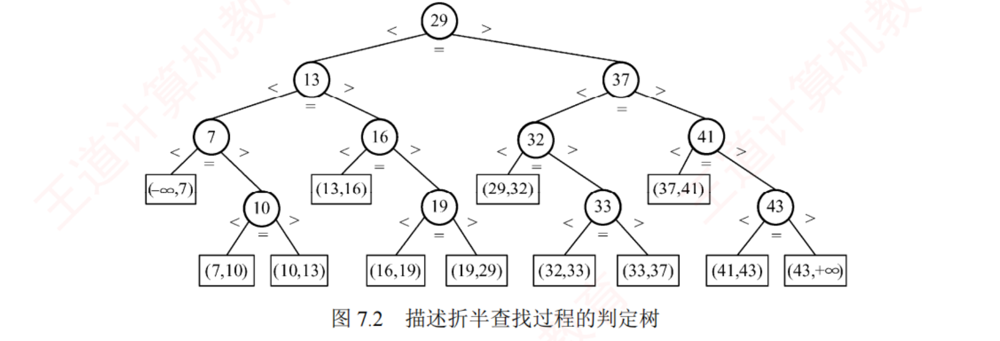
图 7.2 11 个元素 {7,10,13,16,19,29,32,33,37,41,43} 的折半判定树。圆结点是表中真实存在的记录，最底层方形结点是失败结点 ，标注的是查找失败所落入的开区间。n 个元素 ⟹ n 个圆形非叶结点 + n+1 个方形叶结点 （本图 11 + 12）。
查找成功的查找长度 = 从根到目的结点路径上的结点数 ；查找失败的查找长度 = 从根到该失败结点父结点 路径上的结点数 。判定树本身满足 BST 性质（左小右大），且是一棵平衡二叉树 。
树高 h = ⌈log₂(n+1)⌉ ，时间复杂度 O(log₂n) 。
ASL成功 = (1/n)∑li = ((n+1)/n)·log₂(n+1) − 1 ≈ log₂(n+1) − 1
以图 7.2（11 个元素）为例：ASL成功 = (1×1 + 2×2 + 3×4 + 4×4)/11 = 3 ；ASL失败 = (3×4 + 4×8)/12 = 11/3 。
我的补讲 ★ · 判定树求两个 ASL 的固定流程 + 三条自查线（大题必用）
书上说 ：ASL
成功 = (1×1+2×2+3×4+4×4)/11 = 3。
潜台词是 ：这个式子的写法本身就是模板——
"按层数把结点数出来，一层一项" ，而不是逐个元素去数路径。
所以能考 ：7.2-14 / 7.2-综2 / 7.3-综1 三道题用的是同一套动作：
① 建树 → ② 数"第 j 层有几个圆结点" → ③ ASL成功 = Σ(j × 该层圆结点数) / n失败 = Σ(j × 该层挂的方结点数) / (n+1)
🐍 三道题的层分布全部程序复算（都与书答吻合）：
题 n 成功层分布（层:个数） ASL成功 失败分布（父层:个数） ASL失败 图 7.2 11 1:1 2:2 3:4 4:4 33/11 = 3 3:4 4:8 44/12 = 11/3 7.2-14 12 1:1 2:2 3:4 4:5 37/12 3:3 4:10 49/13 7.2-综2 14 1:1 2:2 3:4 4:7 45/14 3:1 4:14 59/15
三条自查线（写完 30 秒过一遍，比重算快） ：
① 分母对不对 ：成功除 n、失败除 n+1（
7.2-14 的干扰项 39/13 就是"两个都除 13" ）；
② 方结点个数凑够 n+1 没有 ：只有一个孩子的结点也要补空的那一侧，凑不够就是漏了（7.3-综1 里 75 缺左孩子最常被漏）；
③ 失败一定比成功大一点点 ：算出"失败比成功还小"，一定是哪里数错了。
我的补讲 ★ · 判定树的「四条身份证」，本节四道真题一人认一条
书上说 ：判定树是平衡二叉树、树高 ⌈log₂(n+1)⌉。潜台词是 ：判定树同时具备四条性质，而四道真题恰好各考其中一条 ，认清是哪一条就不必真去画树：① 它是一棵 BST （左小右大）⟹ 2015 真题 ：判"这串比较序列合不合法"，用区间夹逼。② 它是一棵平衡二叉树 （每次对半劈）⟹ 7.2-7：判定树是什么树（选平衡二叉树，不是完全、不是满 ）。③ n 个圆结点 + n+1 个方结点，树高 h = ⌈log₂(n+1)⌉ ⟹ 2010 / 2023 真题 ：最多比较几次。④ 给定 n 与取整方式后，判定树唯一 ⟹ 2017 真题 ：四棵树里哪棵可能是判定树。③ 里的"平衡 ≠ 完全"值得单独记 ：n=11 的判定树最底层结点并不是从左到右连续排布的，只有 n = 2ᵏ−1 时它才恰好是满二叉树 ，那是特例不是通例。
必记结论 ★ · 折半判定树的一条机械判据（2017 真题秒杀）
我的补讲 ★★ · 🐍 我把这条判据的充要性 穷举验证了一遍（书上只把它当性质，2017 真题却当判据用）
书上说 ：判定树里左子树结点数等于右子树、或比右子树少一个。
潜台词是 ：书给的是一条
必要 性质（"判定树必然满足它"）；
而 2017 真题的做法是
反过来用 ——"满足它 ⟹ 就是判定树"。
这一步跨越书上没有交代，可它正是那道题能秒杀的全部依据。
🐍
所以我把 n = 1…14 的全部 二叉树形态穷举了一遍 （卡特兰数，n=14 时 2 674 440 棵），逐棵检查"每个结点都满足 L=R 或 L=R−1"：
n 1 3 5 7 9 11 14 全部二叉树形态数 1 5 42 429 4862 58786 2674440 满足 ⌊⌋ 判据的 1 1 1 1 1 1 1 满足 ⌈⌉ 判据的 1 1 1 1 1 1 1
而且这唯一的一棵，逐结点与程序按 mid=⌊⌋（或 ⌈⌉）递归建出来的判定树完全相同，n≤14 全部吻合、零例外。
⟹
结论：这条判据是充要 的，考场上可以放心当定理用 ——不必再验"是不是平衡"、不必数高度，
逐结点数一遍左右子树结点数就能定案 。
⚠️ 顺带把 2017 那道题里最容易被误当判据的两件事钉死：
四个选项全是 平衡二叉树、高度全是 4 ——
平衡只是必要条件，"结点数分配"才是充要条件。
我的补讲 ★★ · 🐍 另一个书上没有的结论：折半判定树是「最矮 BST」，而最矮 BST 的棵数有闭式
书上说 （7.3-综4）：等概率时的"最佳二叉排序树"＝仿照折半查找判定树来构造。
潜台词是 ：
折半判定树在所有 n 结点的 BST 里，总查找长度 Σli 最小 ——这也是"折半查找的平均性能最优"这句话的真正含义。
但书没说的是：达到这个最小值的树不止一棵 。
🐍 我用 DP 把 n = 1…40 的"最小总查找长度"与"达到最小的树形棵数"都算了出来，并与穷举结果核对（n ≤ 14 用穷举双证）：
n 7 8 9 10 11 12 15 31 最小总查找长度 17 21 25 29 33 37 49 129 最优树的棵数 1 8 28 56 70 56 1 1
棵数有闭式 ：设 2ᵏ−1 ≤ n ≤ 2ᵏ⁺¹−2，则
最优 BST 的棵数 = C(2ᵏ, n − 2ᵏ + 1) （n ≤ 40 逐项验证全部相符）。
读法很直白：
前 k 层必须填满，剩下的 n−(2ᵏ−1) 个结点随便挑最底层 2ᵏ 个位置放，怎么放都一样矮。
⟹
由此得到两条能直接用的推论 ：
① 只有 n = 2ᵏ−1 时最矮 BST 唯一 （此时是满二叉树）；
② 7.3-综4 那道题（n=9）的答案有 28 棵，书上给的只是其中一棵，你画出另一棵同样满分 ——书上不会告诉你这件事，但考场上心里要有底。
对树中
每一个 结点，令 L = 左子树结点数、R = 右子树结点数：
向下取整 ⌊⌋ ⟹ 恒有 L = R 或 L = R − 1 （左边永远不比右边多）
向上取整 ⌈⌉ ⟹ 恒有 L = R 或 L = R + 1 （左边永远不比右边少）
⚠️ 同一棵树里只准出现一种，不许一会儿多一个、一会儿少一个。
翻译成看图的动作 ：
盯住所有"只有一个孩子"的结点 ——挂的是左孩子还是右孩子？
整棵树必须一边倒。 有左有右当场出局，三秒判一棵。
⚠️
别拿"是不是平衡二叉树"当判据 ——2017 那道题的四个选项
全是 平衡二叉树，高度也全一样。
平衡只是必要条件，"结点数分配"才是充要条件。
必记结论 · "最多比较次数"三连问（2010、2023 都只问这一句）
我的补讲 ★ · 「最少」比「最多」难，因为它取决于树满不满（🐍 两个 n 的实测分布）
书上说 ：最多比较次数 = 树高 h。潜台词是 ：书只给了"最多"，而 7.2-13 那道题问的是"至少……至多……"两个空 。
所以能考 ：最少的失败比较次数是 h 还是 h−1，取决于判定树满不满 ：· n = 2ᵏ−1（满树） ⟹ 所有失败结点在同一层 ⟹ 最少 = 最多 = h ；· 其余情况 ⟹ 失败结点分布在最后两层 ⟹ 最少 = h−1，最多 = h 。· n = 16（2010 真题） ：h = ⌈log₂17⌉ = 5，17 个失败结点的比较次数分布 {4 次: 15 个, 5 次: 2 个} ⟹ 最少 4、最多 5 ✔· n = 600（2023 真题） ：h = 10，601 个失败结点分布 {9 次: 423 个, 10 次: 178 个} ⟹ 最少 9、最多 10。两个 n 的"最少"都出现得更频繁 （15/17、423/601）——这与直觉相反，因为判定树是"上层先填满"，没填满的最后一层反而结点少 。
⚠️ 本节最经典的错法是答 6（n=16 时）：把最底层的方形失败结点也数了一层 。方形结点是虚构的区间，走到它之前胜负已分，比较停在它的父结点 ——这句话在 7.2-13 / 7.2-14 / 2010 / 7.2-综2 / 7.3-综1 五处反复收分。
知识串联 · 「n 个结点 ⟹ n+1 个失败出口」，这是贯穿数构后四章的同一个数数法
→ 数构 ch5 n 个结点的二叉链表有 n+1 个空指针 （线索二叉树就是拿这 n+1 个空指针来存线索的）。→ 数构 ch7 本章 折半判定树 n 圆 + n+1 方；BST 补空指针得 n+1 个失败结点（7.3-综1）；B 树 n 个关键字 ⟹ n+1 个外部结点 （7.4-5，并由它推出最大高度公式）。→ 数构 ch5 哈夫曼树的 WPL 也是"叶结点 × 路径长"的加权和——与 ASL失败 的算式一模一样，只是权换成了概率。一句话记牢 ：n 个关键字把数轴切成 n+1 个开区间，一个区间就是一个失败出口 ——记住这句"切数轴"，本章三处 n+1 就再也不会写成 n。
知识串联 · 「对半分」这个动作，组原里叫「切位」
→ 组原 ch3 主存地址被切成 tag | 组号 | 块内地址 ，每一段的位数都是 ⌈log₂(个数)⌉——和判定树高度 h = ⌈log₂(n+1)⌉ 是同一个式子 ：
"分 N 次二选一才能定位一个个体"，问的都是 log₂N 向上取整。→ 组原 ch3 而 Cache 的组数、行数一律取 2 的幂 ，正是为了让这个"切"变成硬件上零代价的取低若干位 （本章 7.5 的散列表恰好相反，模要取质数 ——见 7.5.2 的串联块，那是一对方向相反的设计）。→ 网络 ch4 子网划分把 IP 切成 网络号 | 子网号 | 主机号 ，"借几位做子网"问的还是 ⌈log₂⌉。一句话记牢 ：看到"最多要多少次二选一 / 要多少位"，先写 ⌈log₂(个数)⌉，再回头确认那个"个数"要不要 +1 ——判定树是 n+1（含失败出口），地址位数就是 N 本身，差别只在数不数"失败"。
最多比较次数 = 判定树的高度 = ⌈log₂(n+1)⌉ ，成功与失败
同此上界 。
· n = 16 ⟹ ⌈log₂17⌉ =
5 （2010 真题：查一个不存在的元素，最多比 5 次）。
· n = 600 ⟹ ⌈log₂601⌉ =
10 （2023 真题）。
心算法 ：找到最小的 h 使 2
h − 1 ≥ n。记住 2
10 =1024、2
9 =512 ⟹ 600 落在 (511, 1023] ⟹ h = 10。
我的补讲 · 折半查找"必然快吗"——2016 与 2024 两道真题是同一件事
我的补讲 · 🐍 2016 那道题「更少比较次数」到底是多少个位置——我数了一遍
书上说 ：跳跃式顺序查找（步长 3）在 x 靠近开头时可能比折半少。潜台词是 ：这个"可能"到底有多小，书没量化，而正是这个量级决定了"折半更快"这句话在考场上算对还是算错 。只有 x 落在最前面约 30 个位置时本算法才更少 ，其余 1970 个位置全部劣于折半；
平均比较次数 334 次 vs 折半的 10 次（差 33 倍） 。有可能 具有更少比较次数"，答的就是那 1.5% 的特例（B：x 接近数组开头）；
若问"平均更少"，答案立刻反过来。本章选择题的通用嗅觉：看到"一定 / 必然 / 就可以"先怀疑，看到"大约 / 一般 / 可能"先放行 （7.2-15 四个选项里三个都错在绝对化措辞）。无序数组 要先排序（O(n log n)）才能折半，那已经是另一个算法，不叫"直接使用折半查找" ——所以 2024 的答案是"四个全都不适合"。
背景 · 折半查找的递归 写法（7.2-综4），知道结论即可
统考十七年没有考过默写递归折半 。这一小段只需记住一张对照表：迭代版 时间 O(log₂n) / 空间 O(1)（考场首选）；递归版 时间同、空间 O(log₂n)（多一个深度为树高的工作栈） 。
⚠️ 若真要写，只有三处必须对：出口写 low > high 而不是 low == high （区间缩到 1 个元素时还要比一次）、
递归调用前要写 return （书上原码漏了，C 里是未定义行为）、mid 要声明类型
折半查找
赢在平均与最坏，输在"目标就在表头"这种极端好运的情形 。任何"从头往后扫"的算法（哪怕步长是 3），在 x 靠近开头时都能碾压折半——这就是 2016 真题的全部内容，也解释了为什么选择题里"折半必然比顺序快"是错的（正确说法是"
在大部分情况下 要快"）。
2024 真题问的是另一半：
折半查找需要 O(1) 随机访问，所以有序链表 、有序静态链表 都不能直接用折半 ——静态链表虽然存在数组里，但逻辑上仍靠 next 域串联，取"中间那个"依然要一个个走。
能不能折半，看的是"能不能 O(1) 跳到中间"，不是"是不是存在数组里"。
7.2.3 分块查找（索引顺序查找）
📄 p.268–269
考点追踪：分块查找的效率分析（2025）
分块查找吸取了顺序查找与折半查找各自的优点：既有良好的动态性，又支持较快的查找效率。基本思想 ：把查找表分成若干块，块内元素可以无序，但块间必须有序 （前一块的最大关键字 < 后一块的所有关键字）；再建立索引表 ，每个索引项含对应块的最大关键字 与该块的起始地址 ，索引表按最大关键字有序。
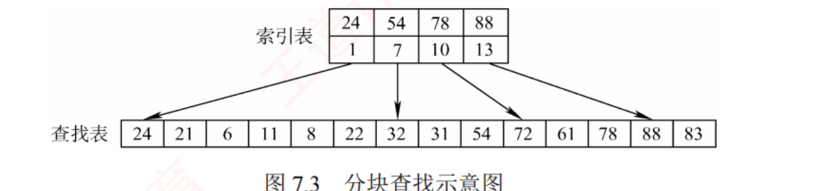
图 7.3 关键码集合 {88,24,72,61,21,6,32,11,8,31,22,83,78,54} 按 24、54、78、88 分成 4 块。索引表两行 ：上行是每块的最大关键字，下行是该块的起始地址。查找表内部（如首块 24 21 6 11 8 22）并不有序 。
两步走 ：① 在索引表中确定待查记录所在的块（可用顺序查找，也可用折半查找）；② 在目标块内顺序查找 。
我的补讲 · 三种查找法的「查」与「改」是两笔账，分块是那个折中方案
我的补讲 · 分块查找的索引表也可以再分块 —— 这就通向了 B 树
书上说 ：分块查找是顺序查找与折半查找的折中。潜台词是 ："两级"不是终点 ——若数据量再大，索引表本身也会大到查不动，那就给索引表再建一级索引 。
所以能考 ：这条路走到底就是 7.4 的 B 树 ——B 树就是"多级分块查找" ：· 分块查找 = 两级 （索引表 + 数据块）；· B 树 = h 级 （每一层结点都是下一层的索引，且每级都保证"块间有序、块内有序"）；· B+树更纯粹 ：非叶结点只 做索引、叶结点只 放数据——正是"索引表 + 查找表"这两行的多级版 。7.2.3 与 7.4 不是两个孤立的知识点，是同一条路的两个站 ：分块查找解释了"为什么要有索引"，B 树解释了"索引怎么自动维持平衡"。顺带解释了 7.2.3 那个 √n ：两级时最优是 s = √n（每级 √n）；推广到 h 级，每级最优是 n^(1/h)，总代价 h·n^(1/h) ——令 h = log n 就得到 B 树那样的对数级代价 。
书上说 ：分块查找吸取了顺序查找与折半查找各自的优点。
潜台词是 ："优点"具体指什么，要拆成
查找代价 与
插入代价 两笔账才看得清。
所以能考 ：任何"该选哪种结构"的题（7.2-8、7.2-16、全章总纲），本质都是在这张表上取舍：
查找（ASL） 插入一个元素 对数据的要求 顺序查找 (n+1)/2 —— 最慢 O(1) （扔到表尾）无 折半查找 ≈ log₂(n+1) −1 —— 最快 O(n) （要搬元素保持有序）有序 + 顺序存储 分块查找 √n + 1 —— 居中 O(s) （扔进对应块即可）块间有序、块内可乱
⟹
分块查找不是"更快的顺序查找"，是"能插入的折半查找" 。n = 10000 时三者的成功 ASL 约为
5000 / 13 / 101 ——分块比顺序快 50 倍，但比折半慢 8 倍，
它买的是插入代价从 O(n) 降到 O(s) 。
⚠️ 这也解释了 7.2-16 里两个错项：
"块内也有序"是多余要求 （块内一有序整表就有序了，直接折半就好，分块失去意义）；
"各块元素个数必须相同"也不是定义要求 （等分只是算 ASL 时的理想假设，实际用它正是图块长可以灵活）。
知识串联 · 「查得快 vs 改得起」这笔交易，四科各签了一份
→ 组原 ch3 Cache 写策略 ：写直达（改的代价高、一致性好）vs 写回（改得便宜、要脏位）。→ OS ch4 连续分配 （读得最快、要搬家）vs 链接分配 （插得最便宜、只能顺序读）vs 索引分配 （折中，正是分块查找的文件版）。→ 网络 ch4 静态路由 （查得快、改不动）vs 动态路由 （能自适应、开销大）。一句话记牢 ：凡是"顺序 / 链式 / 索引"三选一的题，先问一句"这份数据是读多还是写多" ——这也是 7.1 那条"静态查找表 vs 动态查找表"分岔口的实操版。
ASL = LI + LS = (b+1)/2 + (s+1)/2 = (s² + 2s + n)/(2s) ⟹ s = √n 时取最小值 √n + 1
必记结论 · 2025 真题就是这一个公式的直接代入
我的补讲 ★ · 分块查找的四种组合，一张表定生死（本节三道题分属三格）
书上说 ：索引与块内均用顺序查找时 ASL = (b+1)/2 + (s+1)/2。
潜台词是 ：
两层各自可以独立选查找法 ，共四种组合，而书只给了其中一种的公式。
所以能考 ：命题人只要换一层的查找法，答案就完全不同——本节四道题恰好分属三格：
索引层 块内层 ASL 最优块长 考过的题 顺序 顺序 (b+1)/2 + (s+1)/2 s = √n，ASL = √n + 1 2025 真题 （n=400 ⟹ 20）· 7.2-17（n=2500 ⟹ 50）顺序 折半 (b+1)/2 + ⌈log₂(s+1)⌉ 上下 不再是 √n 7.2-综3（块长被钉死为 8，答 (n+1)/2 + 17/8） 折半 顺序 ⌈log₂(b+1)⌉ + (s+1)/2 不再是 √n，块应更大 7.2-19 的干扰项 D 折半 折半 ⌈log₂(b+1)⌉ + ⌈log₂(s+1)⌉ 仍取 s = √n（两边对称） 7.2-19 （n=65025 ⟹ 8+8 = 16）
⟹
做分块题的第一件事，永远是把题干里"对索引表采用……查找、块内采用……查找"这半句话圈出来 ；第二件事才是看它问"最优块长"还是"给定块数算 ASL"。
⚠️
7.2-18 是第三种问法 ：123 个元素
钦定分 3 块 ——此时 √123 ≈ 11 是干扰，老老实实代 (3+1)/2 + (41+1)/2 = 23。
题目已经把块数定死时，别再去优化。
我的补讲 · √n 这个最优值「非常平缓」，考场上忘了公式可以代数验算
书上说 ：由均值不等式 n/s + s ≥ 2√n，取等当 s = √n。潜台词是 ：这是一个极其平缓 的极值——偏离最优点一点点，ASL 几乎不变。
所以能考 ：忘了公式也不必慌，把四个选项代进去比大小，30 秒同样能做对 。以 2025 真题（n=400）为例：s=8 → ASL 30 · s=10 → 26 · s=20 → 21 ⭐ · s=25 → 21.5 （🐍 逐项复算无误）。
注意 s=25 只比最优差 0.5 ——所以出题人才把选项设成 8/10/20/25，逼你要么会公式、要么老实代四次。「最优块长」的另一半答案要记住 ：s = √n 时 b = √n （块数 = 块长），ASL = √n + 1 。n=400 ⟹ 20 块 × 20 个 ⟹ ASL 21；n=2500 ⟹ 50 × 50 ⟹ ASL 51。
背景 · 分块查找的代码不必背
王道正文没给分块查找的完整代码，统考也从未考过。只要能画出"索引表两行（各块最大关键字 / 起始地址）+ 块内乱序"这张图，并会代 ASL 公式，本节就满分了。
索引表本身用什么结构（数组还是链表）、块长要不要等分，都不是定义要求 （7.2-16 的 C、D 两个错项就出在这里：块内不必有序、各块不必等长 ）。
知识串联 ★ · 分块查找 = 跨科枢纽「分块与映射」的最小模型
分块查找的骨架只有一句：先用一层粗索引定"块"，再在块内精确定位 。这个骨架在四科里到处都是——→ 组原 ch3 Cache 组相联 ：主存块号 → 先定"组"（组号 = 块号 % 组数），再在组内并行比较 tag。组 = 块，组内比较 = 块内顺序查找。 → OS ch3 页表 / 段表 ：逻辑地址 = 页号 + 页内偏移，先用页号查表定"页框"（块），再用偏移定位——两级页表更是把分块又套了一层 。→ OS ch4 索引文件 / 混合索引 ：先查索引结点定盘块，再在盘块内定位记录。→ 网络 ch4 IP 地址 = 网络号 + 主机号 ：路由器只看网络号（定"块"）转发，到了目的网络才管主机号。一句话记牢 ：「两级：先定块、再定位」＝ 用一点点索引空间，把一次 O(n) 的查找压成两次 O(√n) ——四科所有"分级 / 分区 / 分段 / 分组"的设计，算的都是这笔账。
知识串联 · 「块内可以乱」这半句，是它比折半更能扛插入的原因
→ 数构 ch2 有序顺序表插入一个元素要搬 O(n) 个（这正是折半查找"静态"的原因）；分块查找只要把新元素扔进对应块的末尾 ，O(1)~O(s)。→ OS ch3 动态分区分配 同理：空闲分区表只维护"每块的起止"，块内怎么用不管；→ OS ch4 簇（cluster） 也是"块间有序、块内随意"。→ 数构 ch7 后文 B 树 把这个思想做到极致：结点内有序、结点间有序，但结点内还留着空位 （关键字数在 [⌈m/2⌉−1, m−1] 之间浮动），插入时优先填空位、填不下才分裂。一句话记牢 ："留白"是所有支持动态插入的结构的共同代价 ——分块留的是块内空间，B 树留的是结点内空位，散列表留的是空地址（1−α）。
长度 n 均匀分成 b 块、每块 s 个记录（n = bs），
索引与块内均用顺序查找 时，
最优块长 s = √n，此时 ASL = √n + 1 。
· 2025 真题：400 个元素 ⟹ s = √400 =
20 （选 C），此时 ASL = 21。
· 2500 个记录 ⟹ 最理想块长
50 。
⚠️
这个结论只在"索引也用顺序查找"时成立 。若
索引表改用折半查找 ，则 L
I = ⌈log₂(b+1)⌉，ASL = ⌈log₂(b+1)⌉ + (s+1)/2，最优块长不再是 √n——题干里"对索引表采用顺序/折半查找"这半句话，
是这一节唯一需要盯紧的字眼 。
7.3 树形查找
7.3.1 二叉排序树（BST）
📄 p.278–282
我的补讲 ★ · 「中序有序」是本节的公理，它被变形考了五次
书上说 ：中序遍历 BST 得到递增有序序列。
潜台词是 ：这不是"一条性质"，而是
BST 定义的等价说法 ——"左 < 根 < 右"逐字对应"左 → 根 → 右"。
所以能考 ：本节几乎所有题都是它的变形，认出变形方式题就做完了一半：
变形 怎么用 考过 给树求大小关系 写出中序序列，从左到右就是从小到大 2018 真题 给先序求树 先序 + （排序得到的）中序唯一确定二叉树；更省事：按先序顺序逐个插入空树 7.3-综1 判查找路径合法 路径上的值必须落在不断收紧的开区间里（区间夹逼 ） 2011 、7.3-5、2015 （折半版）判子树取值范围 祖先区间：最后一次向右拐的定下界、最后一次向左拐的定上界 2024 真题 降序输出 逆中序 （右 → 根 → 左）7.3-综9 中序是降序的"BST" 把左右两个字整个对调着念 2015 真题
⚠️
反过来不成立的那半句要记住 ：中序有序 ⟹ 是 BST（无重复关键字时），但
先序 / 后序 / 层次有序推不出任何东西 。
🐍 500 棵随机 BST 实测：中序 500/500 全部严格递增；先序碰巧有序的只有 9 棵、后序 6 棵、层次 9 棵，
而且全都是升序插入形成的单支树 （那时四种遍历恰好重合）。
构造 BST 的主要目的并非直接输出有序序列 ，而是利用其有序结构支持高效的动态查找、插入和删除 。
考点追踪：二叉排序树的应用（2013）；结点值之间的关系（2015、2018、2024）；构造过程（2020）；删除并重新插入的分析（2013）
我的补讲 · 开篇这半句话是在给 BST"正名"（也是选择题的一个错项来源）
书上说 ：构造 BST 的主要目的并非直接输出有序序列，而是支持高效的动态查找、插入和删除。潜台词是 ：命题人知道很多人把 BST 当"排序工具" ——毕竟中序一走就是升序。
所以能考 ：7.3-1 的 A 项"BST 插入新结点会引起树的重新分裂和组合 "就是这么造出来的——"分裂 / 组合"是 B 树（7.4 节）的词 ，BST 插入只是挂一个新叶子。正名要正在哪儿 ：若只是想得到有序序列，直接排序 O(n log n) 就够了，没必要先建树（建树本身也要 O(n log n)） ；
BST 的价值在于建好之后每次查 / 插 / 删都只要 O(log n) ，而有序顺序表的插删要 O(n)。"动态"两个字才是它的立身之本。
知识串联 · 「中序有序」＝ 序列化：把树形结构摊成一维的通用手法
→ 数构 ch5 先序 / 中序 / 后序序列 就是三种把树摊成一维的方式，而"中序 + 先序 唯一确定一棵二叉树"是本章 7.3-综1 建树的依据 。→ OS ch4 目录树的遍历 ：ls -R 输出的是先序序列；删除一棵目录树必须用后序 （先删孩子再删自己，否则会剩下孤儿）——与 ch5 的"销毁二叉树用后序"一模一样。→ 网络 ch6 DNS 域名 www.abc.edu.cn 就是域名树上一条路径的序列化（从叶到根书写 ，方向与文件路径相反）。一句话记牢 ：树形结构一旦要存储或传输，就必须先序列化；选哪种遍历，取决于"谁必须先于谁被处理" ——建树要祖先先到（先序），销毁要子孙先走（后序），排序要中序。
定义 ：空树，或者满足下列特性的二叉树——① 左子树非空时，其上所有结点的关键字均小于 根结点；② 右子树非空时，其上所有结点的关键字均大于 根结点；③ 左右子树也分别是 BST。中序遍历得到递增有序序列。
我的补讲 ★★ · 区间夹逼：一条判据打三道真题（2011 / 2015 / 2024）
书上说 ：左子树全小于根、右子树全大于根。
潜台词是 ：这条约束是
沿路径累积 的，不是只管父子两代——而
命题人考的全是"累积"这一层 。
所以能考 ：把它写成一个可机械执行的动作，10 秒判完四个选项：
维护开区间 (lo, hi)，初值 (−∞, +∞)
读到 x：先验 lo < x < hi ← 越界即"不可能"
下一个比 x 小 ⟹ 往左走 ⟹ hi = x （锁上界）
下一个比 x 大 ⟹ 往右走 ⟹ lo = x （锁下界）
⚠️ 锁上去的界永不放宽——这就是判据的全部内容
口语版 ：
"一旦从 911 往左拐，这辈子都不许再出现比 911 大的数。"
·
2011 真题 ：A 项 95→22→91→24→
94 ，走到 24 时区间已收成 (24, 91)，94 越界 ⟹ 不可能。
·
7.3-5 ：C 项 925→202→911→240→
912 ，同一处越界。
·
2015 真题（7.2 节，折半版） ：A 项 500→200→450→
180 ，区间 (200,500) 装不下 180 ⟹ 不可能。
因为折半判定树本身就是一棵 BST，判法一字不改。
·
2024 真题 是它的"静态版"：问某棵子树 T 的取值范围——
下界 = 从根走到 T 的路上最后一次向右拐 的那个结点，上界 = 最后一次向左拐 的那个结点 。
图里最后一次向右是 k₃、最后一次向左是 k₂ ⟹
k₃ < x < k₂ ，一秒写出。
⚠️
最常见的错法是只检查相邻两项 （240 < 912 看着没毛病）。必须把历史上拐过的弯全部记进 lo / hi——
考场上就在草稿纸上写两列，逐行更新。
BSTNode *BST_Search(BiTree T,ElemType key){
while(T!=NULL&&key!=T->data){ //树空或等于根结点值则结束
if(key<T->data) T=T->lchild; //小于，在左子树上查找
else T=T->rchild; //大于，在右子树上查找
}
return T;
}
插入 ：BST 是动态树表 ，结构不是一次生成的，而是在查找过程中动态构建 ——当查找失败时才执行插入 。新插入的结点一定是叶结点 ，且恰是查找失败时访问的最后一个结点的左/右孩子。
int BST_Insert(BiTree &T,KeyType k){
if(T==NULL){ T=(BiTree)malloc(sizeof(BSTNode));
T->data=k; T->lchild=T->rchild=NULL; return 1; }
else if(k==T->data) return 0; //已存在，插入失败
else if(k<T->data) return BST_Insert(T->lchild,k);
else return BST_Insert(T->rchild,k);
}
void Creat_BST(BiTree &T,KeyType str[],int n){ //从空树开始依次插入
T=NULL; int i=0;
while(i<n){ BST_Insert(T,str[i]); i++; }
}
例：关键字序列 {45, 24, 53, 45, 12, 24} 建树，重复的 45 与 24 被忽略 ，最终得到根 45、左 24（其左 12）、右 53。
我的补讲 ★ · 第二条判据：「祖先必须先于子孙到达」（2020 真题 + 7.3-6 同源）
书上说 ：新插入的结点一定是叶结点，插在查找失败的位置上。潜台词是 ：一个结点能落到它"该在"的位置，前提是它的父亲已经在树上了 ；父亲若晚到，儿子就会先占住父亲的位置，整棵子树的形状随之改变。
所以能考 ：由此得到一条可机械检查的判据——某插入序列能生成给定 BST ⟺ 树中每个结点在序列里都排在它全部子孙 之前。 （兄弟之间谁先谁后无所谓，合法序列不必是层次序 ）2020 真题 ：目标树 4(2(1,3),5)，约束只有三条——4 在最前、2 必须先于 1 和 3 、5 位置随意。选项 B（4,5,1 ,2 ,3）里 1 先于 2 ⟹ 违规，长成 4(1(·,2(·,3)),5)。7.3-6 ：C 项（100,60 ,80 ,90,…）先插 60 再插 80，80 只能挂到 60 的右边、90 再挂到 80 的右边，左半边被拉成一条长 3 的链，与 A/B/D 的树不同。两题病因一模一样：小的先到，把中间那个数挤成了它的孩子。 这条判据还顺带解释了 7.3-综1 为什么能"按先序顺序逐个插入"还原原树 ：先序遍历天然满足"根在子孙之前"。中序做不到 （根夹在中间），所以不能按中序插。
删除：三种情况
我的补讲 · 删除后"树形一定变了吗"——分三种情况看，这是 2013 真题的推理基础
书上说 ：三种情况分别是叶结点、单孩子、双孩子。潜台词是 ：三种情况对"树形改变程度"的影响完全不同 ，而 2013 真题问的正是这件事：· 删叶结点 ⟹ 其余结点纹丝不动 ，只少了一片叶；· 删单孩子结点 ⟹ 那棵子树整体上移一层 ，子树内部的相对关系不变；· 删双孩子结点 ⟹ 用后继（前驱）顶替 ，被顶替的位置又变成前两种情况之一——树形一定改变 （有个结点换了位置）。所以"删了再插回"只有第一种能原样还原 ：后两种情况下，被删的关键字只能重新挂成一片叶子 ，层次一定变深。这就是 2013 真题四个选项的全部推理。 顺带回答书上那个"思考" ：删除某结点再重新插入，所得 BST 未必与原树相同——只有删的是叶结点时才必然还原 。
我的补讲 · 情况 ③ 为什么"一定能化归"——直接后继至多只有一棵右子树
书上说 ：用直接后继（或前驱）替代 z，问题转化为情况 ① 或 ②。潜台词是 ：这个"转化"不是碰巧，是必然 的——
z 的直接后继 = 右子树里最左下的结点 ，它既然是"最左下"，就一定没有左孩子 （有的话它就不是最左下了）；同理直接前驱一定没有右孩子。
所以能考 ：删除的递归最多下探一层就结束 ，不会像 AVL 那样一路回溯——这正是 2013 真题 （BST 版给出"一定相同 / 一定不同"）与 2019 真题 （AVL 版全变成"可能"）差别的根源。三种情况的一句话总结 ：① 叶子直接摘 ② 独子上移顶替 ③ 用后继（前驱）顶替，再回头删那个后继 。
⚠️ 卷面上写 ③ 时务必写清"用右子树中序第一个 结点顶替" ，只写"用后继顶替"阅卷看不出你会不会找。
我的补讲 ★ · 2013（BST）与 2019（AVL）必须成对做：一个全是"一定"，一个全是"可能"
书上说 （本节思考题）：删除某结点再重新插入，所得 BST 未必与原树相同。
潜台词是 ：这个"未必"在 BST 里其实是
可以说死的 ，而到了 AVL 就真的只能说"可能"了——
差别的唯一来源是"旋转" 。
删叶结点 再插回 删非叶结点 再插回 BST（2013 真题） 一定相同 （摘掉一片叶，其余纹丝不动，插回时查找路径完全一样）一定不同 （删时后继上移改了树形；插回它只能当叶子，层次一定变深）AVL（2019 真题） 可能不同 （删完可能触发旋转，形态已变）可能相同、也 可能不同
🐍 两组实测：
2 万棵随机 BST ——删叶的 7875 次
全部 相同、删非叶的 12125 次
全部 不同，零例外（2013 的"一定"成立）；
6 万次随机 AVL ——叶-相同 23676 / 叶-不同 6567 / 非叶-相同
7826 / 非叶-不同 21931，
四类全都出现 （2019 的三个"一定"全被证伪，只剩"可能不同"的 Ⅰ 是对的）。
⟹
做这类 Ⅰ Ⅱ Ⅲ 题的通用心法：看到"一定"就去找反例，看到"可能"就去找一个正例。措辞本身已经泄露答案的方向。
不能把以该结点为根的子树整个删掉，必须把结点摘下、重新接好断裂的链，并保持 BST 性质。
被删结点 z 是叶结点 ⟹ 直接删除。
z 仅有一棵非空子树 ⟹ 把这棵子树上移 ，顶替 z 的位置。
z 左右子树都非空 ⟹ 用 z 的直接后继（或直接前驱） 替代 z，再回头删除那个后继（前驱）。由于直接后继至多只有一棵右子树，问题转化为情况 ① 或 ② 。
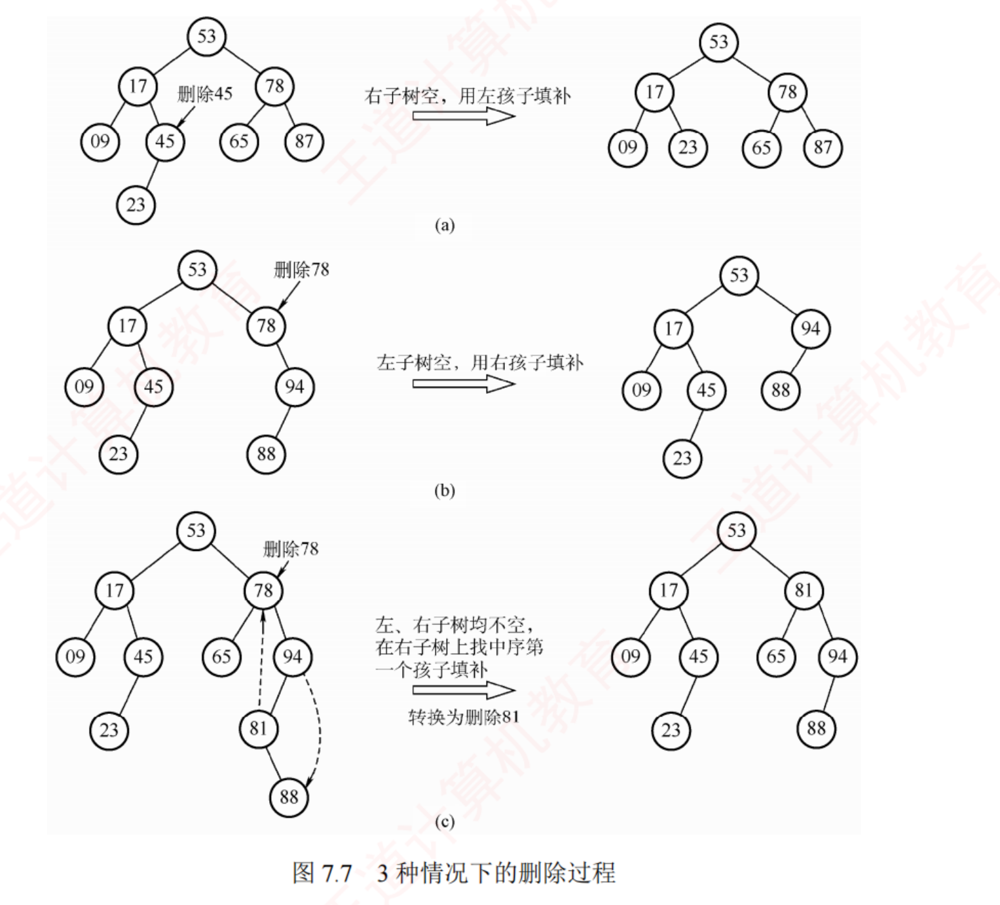
图 7.7 三种情况的删除过程。(a) 删 45：右子树空，用左孩子 23 填补；(b) 删 78：左子树空，用右孩子 94 填补；(c) 删 78：左右子树均非空，在右子树上找中序第一个结点 81 填补，转换为删除 81 。
查找效率分析
我的补讲 ★ · 决定 BST 效率的是「高度」，不是「结点数」（🐍 同样 1023 个结点，差 56.8 倍）
书上说 ：BST 的查找效率主要取决于树的高度。
潜台词是 ：命题人会拿"结点数"来冒充（7.3-3 的 B 项）——
n 当然影响 ASL，但它是通过高度间接 影响的 ，而同样的 n 能撑出天差地别的高度。
🐍 取 n = 1023 的两棵极端 BST 实测：
满二叉形态 高 10、ASL = 9.01 ；
单支树 高 1023、ASL = 512.0 ——
结点数完全相同，ASL 相差 56.8 倍 。
所以能考 ：一张上下界表，7.3-8 / 7.3-10 / 7.3-1 三题共用——
最理想（近似满） 最坏（升序插入 ⟹ 单支树） 树的深度 ⌈log₂(n+1)⌉ n 最多比较次数 ⌈log₂(n+1)⌉ n （7.3-8 选 D，不是 n/2）ASL成功 ≈ log₂(n+1) − 1 (n+1)/2 （退化成顺序查找）
⚠️
只要题干没出现"平衡"两个字，BST 就必须按可能退化成链来考虑 ——7.3-8 的 B（log₂n）、C（log₂n+1）都是"平衡时"的答案。
而这正是 7.3.2 的 AVL 存在的全部理由：把这个"最多"从 n 强行压回 O(log₂n)。
📌 顺带钉死 7.3-10 的那个错项：
最理想深度是 ⌈log₂(n+1)⌉ 而不是 ⌊log₂(n+1)⌋ （n=8 时后者算出 3，可 3 层最多只放 7 个结点）。
另一个等价写法是 ⌊log₂n⌋+1 ，🐍 n=1…4096 逐个验证两式恒等。
我的补讲 · 最值结点：说的是"某个方向指针为空"，不是 "是叶结点"（🐍 实测近一半不是叶）
书上说 ：最大关键字在最右下、最小关键字在最左下。潜台词是 ："最右下"只保证右指针为空，左边完全可以挂东西 。
所以能考 ：7.3-4 的四个选项就是围着这半个字打转——正确的是"右指针一定为空"（B），把它升级成"左右指针均为空 = 是叶结点"（C）就错了。2000/2000 最大结点的右指针为空 ；其中 975 棵（48.8%，接近一半）它还带着左孩子、并不是叶结点 。凡是"最值元素"的题，正确选项几乎总是说"某个方向的指针为空"，错误选项总是升级成"是叶结点" ——2015 真题（中序降序，答"最大元素一定无左子树"）用的是同一句措辞 ，只是把左右对调了。全程不需要任何关键字比较 （一路 lchild / rchild 走到 NULL），时间 O(h)。这句话是 7.3-综8 的采分点。
BST 的查找效率主要取决于树的高度 。平衡时 ASL 为 O(log₂n)；最坏情况下输入序列有序 ⟹ 退化成单支树 ，高度为 n，ASL 退化为 (n+1)/2。
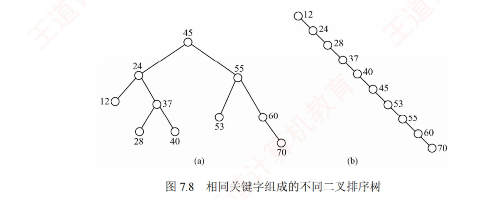
图 7.8 同一组关键字、不同插入顺序得到的两棵 BST。(a) 较平衡：ASL = (1 + 2×2 + 3×4 + 4×3)/10 = 2.9 ；(b) 单支树：ASL = (1+2+…+10)/10 = 5.5 。
必记结论 · BST 与折半查找的三点对照（选择题反复考）
① 平均时间性能相近，但唯一性不同 ：折半查找的判定树是唯一的 （给定 n 与取整方式即定死），而相同关键字集合能生成不同的 BST （取决于插入顺序）。② 维护有序性的代价不同 ：BST 插入 / 删除只改指针，平均 O(log₂n)；折半查找的对象是有序顺序表，插入 / 删除要移动大量元素 O(n) 。③ 结论 ：静态查找表 ⟹ 顺序表 + 折半查找；动态查找表（频繁插删）⟹ 二叉排序树。
我的补讲 · BST 这一节沉淀下来的两条判据（做题时反复用到）
我的补讲 · BST 的形态数是卡特兰数；别和「高度为 h 的 AVL 形态数」混
知识串联 · BST 的九道算法题只有两个骨架，都来自第 5 章
→ 数构 ch5 把本节九道算法设计题按骨架分类，只剩两类：
骨架一「中序遍历 + 顺路维持一个量」 ：判 BST（维持前驱值）、降序输出 ≥k（逆中序）、求第 k 小的中序版——
ch5 的中序遍历原样搬用 ；
骨架二「沿一条路走到底」 ：查找、插入、求层次、求最值、第 k 小（count 版）——
这是 BST 独有的，因为有序性让你不必遍历 。
另加一个
骨架三「后序 + 一次递归带回两个值」 ：判平衡——
与 ch5 的求树高、判完全二叉树完全同模 。
一句话记牢 ：
凡题面出现"二叉排序 树"，先问一句"能不能只走一条路" ——能，就从 O(n) 降到 O(h)；这是本节全部算法题的立意（详见
7.6 节 的十个模板）。
书上说 ：n 个不同结点的 BST 形态数 = 卡特兰数。
潜台词是 ：
"n 个关键字的 BST 棵数" ＝ "n 个结点的二叉树形态数" ——因为形状一旦定了，往里填数的方法
只有一种 （按中序把升序序列填进去）。这一步是唯一的思维跨越，其余全是背数。
C(n) = 1, 2, 5, 14, 42 , 132, 429, 1430 （n=1…8，
必背到 n=5 的 42 ）；忘了就现推
C(n) = Σ C(i)·C(n−1−i) （枚举根的左子树有 i 个结点）：C(0)C(4)+C(1)C(3)+C(2)C(2)+C(3)C(1)+C(4)C(0) = 14+5+4+5+14 =
42 。
⚠️
与 7.3-13（高度为 3 的 AVL 有 15 种）分清楚 ：
· 卡特兰数按「结点数」递推 ，不限高度、不要求平衡；
· AVL 形态数按「高度」递推 ：
f(h) = f(h−1)² + 2·f(h−1)·f(h−2) ，f(1)=1、f(2)=3、
f(3)=15 、f(4)=315（那 15 棵树的结点数从 4 到 7 都有——"形态"数的是形状，不是结点个数）。
📌
本章第三个"数树"的题是 2025 的 B 树形态计数 （7 个关键字的 4 阶 B 树有 9 种）——三题各用一套递推，别互相套。
背景 · BST 的删除代码 不必默写
统考十七年考过 BST 的
删除画图 （2013 真题的推理）、
插入建树 （2020 真题），
但从未要求写删除的 C 代码 ——因为它要处理"找后继 + 改父指针 + 三种情况"，代码量远超一道 13 分题该有的规模。
本小节只需背三种情况的动作 （叶子直接摘 / 独子上移 / 后继顶替再回头删） ，代码看懂即可。真要写代码的九道综合题在
7.6 节 ，那里没有一道是删除。
知识串联 · BST 退化成链 ↔ 三科都有的「最坏情况退化」
BST 在有序输入 下退化成 O(n)，这不是孤例，四科里同一个病灶出现了四次：→ 数构 ch7 散列表 ：若关键字全是同义词，ASL 从 O(1) 退化成 O(n)（7.5-7、7.5-8）。→ 数构 ch8 快速排序 ：有序输入 + 取首元素为枢轴 ⟹ 从 O(n log n) 退化成 O(n²)——与 BST 退化是同一件事 （快排的递归树就是一棵 BST）。→ 组原 ch3 Cache 直接映射的抖动 ：两个块号相差恰好整数倍行数时反复互相踢出，命中率跌到 0。→ OS ch3 Belady 异常 / 抖动（thrashing） ：分配的页框稍有不对，缺页率骤升。一句话记牢 ：凡是"靠数据分布均匀才快"的结构，都存在一个能把它打回原形的输入 ——AVL / 红黑树 / 随机化快排 / 组相联 Cache，都是为了堵这个洞而生的。
知识串联 · 「排名 = 左子树结点数 + 1」是顺序统计树，OS 与组原都在用
7.3-综10 给结点加一个 count 域（子树结点数），就能在 O(log n) 内查"第 k 小"。这个思路的名字叫顺序统计树 / 排名树 ，四科里有它的近亲：→ OS ch2 按优先级选下一个进程 ：Linux 的 CFS 就是用红黑树 + 子树最小 vruntime 缓存 做 O(log n) 选取（比遍历就绪队列快）。→ 组原 ch7 优先级编码器 / 中断判优 ：硬件用一棵"比较树"在 O(log n) 门延迟内挑出最高优先级。→ 数构 ch5 堆 也是"只维护一个局部不变量就能 O(log n) 取极值"的同族结构。一句话记牢 ：在每个结点上多存一个"关于整棵子树的汇总量"（结点数 / 最小值 / 高度），就能把一次 O(n) 的统计压成一条 O(h) 的路径 ——AVL 存高度、B 树存关键字数、这里存结点数，全是同一招。
知识串联 · 「动态 vs 静态」在 OS 内存管理里的同构对照
→ OS ch3 固定分区分配 （分区大小定死、查得快、装不进就浪费）≈ 本章的静态查找表 + 折半 ；
动态分区分配 （按需切分、要维护空闲分区链、会产生外部碎片）≈ BST / 散列表这类动态查找表 。→ OS ch3 而首次适应算法在空闲分区链上顺序找 ，正是本章 7.2.1 的顺序查找；最佳适应要保持链按容量有序 ，插入代价就变成 O(n)——与"有序顺序表插入要搬元素"是同一笔账 。一句话记牢 ："要不要支持动态增删"这一个问题，在数构里决定选哪种查找结构，在 OS 里决定选哪种分配算法，权衡完全同构。
① 区间夹逼——判"某序列能否是一条查找路径" ：从根出发，
向左拐就锁死上界、向右拐就锁死下界，锁上去的界永不放宽 。一旦后续出现的关键字跳出当前 (下界, 上界)，这条路径就非法。
7.3 的第 5、25、34 题与 7.2 的 2015 真题，四道题是同一条判据。
② 祖先先于子孙——判"某插入序列能否生成给定的 BST" ：在插入序列里，
每个结点必须出现在它的全部子孙之前 （因为新结点总是接在叶子上）。
2020 真题与第 6 题同源。
③ 顺带回答书上那个"思考" ：
删除某结点再重新插入，所得 BST 未必与原树相同。 例如删非叶结点时用后继顶替，树形已经变了；再把该关键字插回来，它只会挂到某个叶子上。
只有删的是叶结点时才必然还原。
7.3.2 平衡二叉树（AVL 树）
📄 p.282–286
考点追踪：平衡二叉树的定义（2009）；插入操作的特点（2015）；插入及调整的实例（2010、2019、2021）；构造过程（2013）；指定条件下的结点数分析（2012）
定义 ：插入和删除时保证任意结点的左右子树高度差的绝对值不超过 1 。结点的平衡因子 = 左子树高 − 右子树高 ，AVL 中所有结点的平衡因子只能取 −1、0、1 。
插入的基本思想 ：每插入一个结点后，沿查找路径向上检查各祖先结点 ；若失衡，定位插入路径上离新结点最近、且平衡因子绝对值大于 1 的结点 A ，以 A 为根的子树就是最小不平衡子树 ；在保持 BST 特性的前提下旋转调整该子树。
我的补讲 ★ · 平衡因子讲的是"我的两棵子树"，不是"我孩子的两棵子树"（2015 真题 Ⅳ 的最小反例）
书上说 ：平衡因子 = 左子树高 − 右子树高。
潜台词是 ：它描述的是
"我的左右子树谁高" ，而孩子的平衡因子描述的是"孩子自己的左右子树谁高"——
两句话说的根本不是同一件事 。
所以能考 ：7.3-16 的 Ⅳ 就是把这两句话偷换了：
"若某结点的左右孩子的平衡因子都是 0，则该结点的平衡因子也是 0"——错。 最小反例只要 5 个结点，一定要会当场画出来：
4 左孩子 2 是叶子 ⟹ 平衡因子 0 ✔
/ \ 右孩子 6 有两个孩子 ⟹ 平衡因子 0 ✔
2 6 但 左子树高 1、右子树高 2
/ \ ⟹ 结点 4 的平衡因子 = 1 − 2 = −1 ≠ 0 ✘
5 7
🐍 程序把这棵树录进去逐结点算：左孩子 0、右孩子 0、
根 −1 ，Ⅳ 当场被证伪。
⚠️ 另两个高频记混：
平衡因子算的是"子树的高度 "，不是"孩子的个数"，也不是"结点在第几层" ；
空树高度记 0 。
2009 真题（判哪棵是 AVL）的做法就是"把每个非叶结点的平衡因子写在旁边，出现一个 ±2 就出局"——
而且四个选项全部在根结点 就能分出胜负 （A 根 +2、C 根 −2、D 根 +3），
先看根，根不行就直接下一个。
四种调整情况
我的补讲 · 四种旋转的记忆锚：型号名的两个字母 = 从 A 出发的头两步
书上说 ：LL 是"在 A 的左孩子的左子树上插入"。
潜台词是 ：
型号的命名规则本身就是判型方法 ——
第一个字母 = 从 A 走向新结点的第一步（左 L / 右 R），第二个字母 = 第二步 。
所以能考 ：判型时
只看两步，第三步以后与型号完全无关 （新结点可能挂在很深的地方，别一路跟着走）。
型号 A 的平衡因子变成 动作 谁上位 LL +2（左边太高） 右 单旋一次B （A 的左孩子）RR −2（右边太高） 左 单旋一次B （A 的右孩子）LR +2 先对 B 左 旋、再对 A 右 旋 C （A 的孙子）RL −2 先对 B 右 旋、再对 A 左 旋 C （A 的孙子）
📌
旋转方向与型号首字母相反 ：L 开头 ⟹ 最后一次是
右 旋、R 开头 ⟹ 最后一次是
左 旋（因为"左边太高就往右倒"）。
这条口诀能防住"方向记反"这种最低级也最常见的错。
知识串联 · 「平衡因子」＝ 每个结点缓存一个局部统计量，与三科同族
AVL 在每个结点里存一个"左右子树高度差"，用 O(1) 的读取替代 O(n) 的现场求高度 。同一手法：→ 数构 ch7 B 树结点里存关键字个数 n （判断该不该分裂 / 合并，不必现数）；7.3-综10 的 count 域 （存子树结点数，用来 O(log n) 求第 k 小）。→ OS ch2 PCB 里缓存优先级 / 已运行时间 ；→ OS ch3 空闲分区表里缓存每个分区的大小 （不必每次去数）。→ 网络 ch5 TCP 缓存 RTTs / RTTD （不必回溯全部历史 RTT）。一句话记牢 ：缓存一个局部统计量的代价，是"每次修改都要顺手更新它" ——AVL 每次旋转后要重算高度、B 树每次分裂后要改计数、TCP 每收一个 ACK 要更新 RTTs。忘了更新就是最隐蔽的一类 bug。
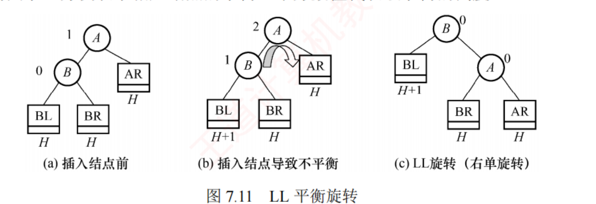
图 7.11 LL（右单旋） ：在 A 的左孩子的左子树 上插入，A 的平衡因子由 1 增至 2。B 向右上旋转代替 A，A 向右下成为 B 的右孩子，B 的原右子树 BR 作为 A 的左子树 。
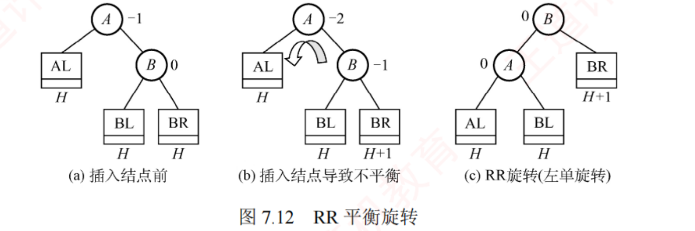
图 7.12 RR（左单旋） ：在 A 的右孩子的右子树 上插入，平衡因子由 −1 减至 −2。B 向左上旋转代替 A，A 向左下成为 B 的左孩子，B 的原左子树 BL 作为 A 的右子树 。
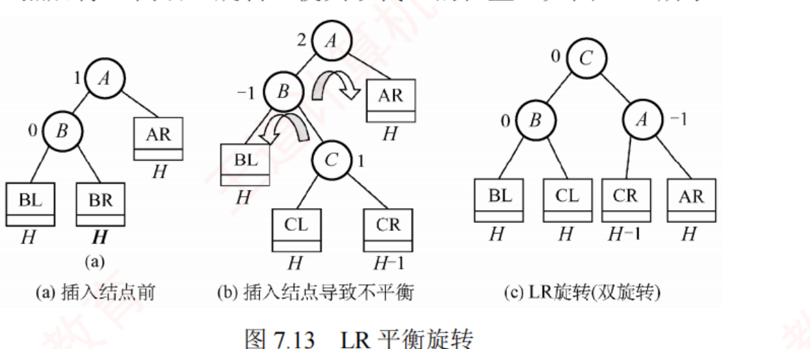
图 7.13 LR（先左后右双旋） ：在 A 的左孩子的右子树 上插入。先把 B 的右子树的根 C 向左上旋转提到 B 的位置，再把 C 向右上旋转提到 A 的位置。
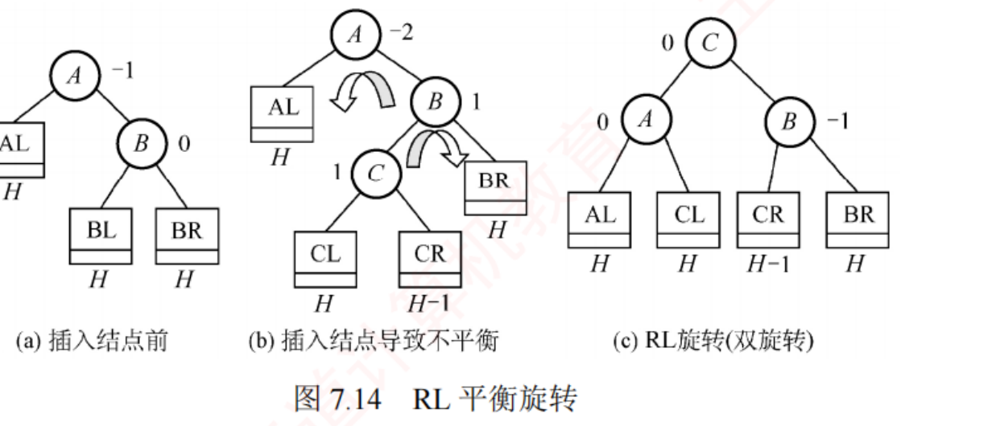
图 7.14 RL（先右后左双旋） ：在 A 的右孩子的左子树 上插入。先把 B 的左子树的根 C 向右上旋转到 B 的位置，再把 C 向左上旋转到 A 的位置。
陷阱 · 双旋时"新结点插在 C 的左边还是右边"不影响旋转过程
书上明确写了这条注意：LR 和 RL 旋转时，新结点究竟插入 C 的左子树还是右子树，不影响旋转过程 （图 7.13、7.14 都以插入 C 的左子树为例）。它只影响调整后 CL / CR 挂在谁下面，不影响"谁上位" 。
必记结论 ★ · 单旋 B 上位、双旋 C 上位（2010、2021 两道真题可秒答）
我的补讲 · 四种旋转「被顶掉的那棵子树挂哪儿」，靠大小关系唯一确定
书上说 ：LL 旋转时 B 的原右子树 BR 作为 A 的左子树。
潜台词是 ：
这不需要记忆——被顶掉的子树挂在哪里，由 BST 的大小关系唯一 确定 ，考场上现推比背图快。
以 LL 为例 ：旋转后 B 是根、A 是 B 的右孩子。原来的 BR 满足
B < BR < A （它在 B 的右边、A 的左边），
而旋转后唯一同时满足这两条的位置就是"A 的左子树" ——只有一个坑，不可能挂错。
四种旋转的落位一次列全 ：
型号 谁上位 被顶掉的子树 挂到哪 LL（右单旋） B BR（B 的右子树） A 的左 子树 RR（左单旋） B BL（B 的左子树） A 的右 子树 LR（先左后右） C CL / CR CL → B 的右子树；CR → A 的左子树 RL（先右后左） C CL / CR CL → A 的右子树；CR → B 的左子树
⚠️
记不住表也没关系，记住那句"按大小关系唯一确定"，现场把中序序列写出来对一遍即可 ——
旋转前后中序序列必须完全相同 ，这是最可靠的自检。
我的补讲 · 「最小不平衡子树」这五个字为什么必须是"最小"
书上说 ：定位插入路径上离新结点最近、且平衡因子绝对值大于 1 的结点 A。潜台词是 ：为什么不能挑更上面那个失衡结点？ 因为旋转最小不平衡子树后，它的高度恰好恢复到插入之前 ，上层就再也看不出任何变化——一次调整就收工 。若挑了更上面的，下面那处失衡还在，反而调不好。所以能考 ：7.3-综3 的 ⑥、⑦ 两步失衡点不同（一个回溯到根 23、一个只到 98），书上构造实例插 9 时只有 15 失衡、插 8 时 A 变成 7——A 是会换的，每一步都要重新找 。这也正是"插入只调一次、删除可能调多次"的原因 ：插入后子树高度恢复原状 （不传播）；删除后子树高度可能减 1 （这个"变矮"会一路往上传）。两句话是同一个机制的两面。
知识串联 · AVL 与 B 树：同一个目标，两条完全不同的路
两者都要"高度有界"，但手段相反：· AVL 改变父子关系 （旋转）——结点的胖瘦固定（每个结点只装 1 个关键字），靠重排层次来平衡；· B 树改变结点的胖瘦 （分裂 / 合并）——父子关系基本不动，靠让结点变胖变瘦来吸收变化，并用"所有叶结点在同一层"直接把平衡写进定义 。→ 数构 ch7 · 7.4 由此得到两条对照：AVL 从叶子往下长、B 树从根上面长 ；AVL 的调整沿一条路径向上传播、B 树的分裂合并也沿一条路径向上传播 ——传播机制相同，被传播的量不同 （前者是高度，后者是关键字数）。→ 组原 ch3 同一个二选一在 Cache 里也出现过：提高相联度（组内多放几路 ≈ 结点变胖）vs 增加组数（≈ 树变高） 。一句话记牢 ："让容器变胖"与"让层次变浅"是达成同一目标的两条路，选哪条取决于一次访问能搬多少 ——内存里搬一个结点便宜（选 AVL），磁盘上搬一整块才划算（选 B 树）。
我的补讲 ★ · 「C 上位」为什么能省掉整套旋转 —— 2010 与 2021 是同一道题
书上说 ：LR / RL 要先转一次再转一次。
潜台词是 ：选择题问的从来不是"怎么转"，而是
"转完谁在根上、谁挂在谁下面" ——那只需要一句结论。
所以能考 ：两道 RL 真题的解题动作完全一致，四步走完不必画草稿：
① 找插入位置 → ② 从新结点往上找第一个 |bf| = 2 的结点 A → ③ 看 A 走向新结点的头两步 判型 → ④ 套"单旋 B 上位 / 双旋 C 上位"
2010 真题 2021 真题 原树 24(13, 53(37, 90)) 20(16, 30(25, 40)) 插入 48（挂到 37 的右边） 23（挂到 25 的左边） 失衡点 A 根 24 根 20 型号 RL （右孩子 53 的左子树）RL （右孩子 30 的左子树）C（上位者） 37 25 结果 37(24(13,·), 53(48,90)) 问 37 的左右孩子 ⟹ 24、53 25(20(16,23), 30(·,40)) 问根 ⟹ 25
🐍 两棵树都用程序真跑了一遍 AVL 插入，旋转型号与结果逐结点吻合。
⚠️
上位的永远是那个"卡在中间、把两边分开"的结点 C，绝不是刚插入的叶子 （除非新结点恰好就是 C）：
2010 的干扰项 B（24, 48）就是"把 48 还当成 37 的孩子"，2021 的干扰项 C（23）就是"以为新插入的爬上去"。
本题 23 是 C(25) 的孩子 ，旋转后它跟着 A(20) 走，成了 20 的右孩子。
📌 书上那条注意（
双旋时新结点插在 C 的左还是右不影响旋转过程 ）在这里正好用上：
它只影响 CL / CR 挂在谁下面，不影响"谁上位"。
四种旋转的最终根是谁，
一句话记死 ：
· LL / RR（单旋）⟹ 中间那层的 B 上位 （A 的孩子）。
· LR / RL（双旋）⟹ 最底层那个 C 上位 （A 的孙子），且
A 与 B 分列 C 的两侧 。
2010 与 2021 两道真题都只问"调整后根结点是谁 / 树形如何"，
认出是双旋就直接答 C 上位，根本不必真的把树转一遍。
构造实例：{15, 3, 7, 10, 9, 8}
我的补讲 ★ · 逐步插入的卷面写法：每步写清「失衡点 + 型号」，这就是采分点
书上说 ：依次画出每次插入后的平衡二叉树。
潜台词是 ：这类题
要的是过程不是结果 ——只画最终那一棵，即使对了也拿不到全部分。
所以能考 （7.3-综3 的标准卷面）：
七步全画，每步旁边注明「失衡点是谁 + 属于 LL/RR/LR/RL 哪一型」 。以 7.3-综3 的 (34, 23, 15, 98, 115, 28, 107) 为例，🐍 程序逐步复算：
插 34 34
插 23 34(23, ·) bf = 1，合法
插 15 34 的 bf 变 2，15 在【左孩子的左子树】⟹ LL 右单旋（失衡点 34）
⟹ 23(15, 34) ← B(=23) 上位
插 98 23(15, 34(·, 98)) 合法
插 115 34 的 bf 变 −2，在【右孩子的右子树】⟹ RR 左单旋（失衡点 34）
⟹ 23(15, 98(34, 115)) ← B(=98) 上位
插 28 回溯：34 bf=1 → 98 bf=1 → 【23 bf=−2】⟹ RL 双旋（失衡点 23）
⟹ 34(23(15,28), 98(·,115)) ← C(=34) 上位
插 107 回溯：115 bf=1 → 【98 bf=−2】 ⟹ RL 双旋（失衡点 98）
⟹ 34(23(15,28), 107(98,115)) ← C(=107) 上位 ✅
⚠️⚠️
本题最值钱的一点：⑥ 与 ⑦ 两步的失衡点不一样 ——⑥ 一路回溯到了
根 23 ，⑦ 只到
98 就停了。
"最小不平衡子树"要的是离新结点最近 的那个失衡结点，不是最高的那个；找到第一个就动手，不要继续往上找。 （书上构造实例里插 9 时只有 15 失衡、插 8 时 A 变成 7，是同一件事。）
⚠️
每步画完用中序验收 ：最终树中序 = 15, 23, 28, 34, 98, 107, 115（升序 ✔）。
旋转唯一不能破坏的就是 BST 性质，中序一乱说明转错了方向。
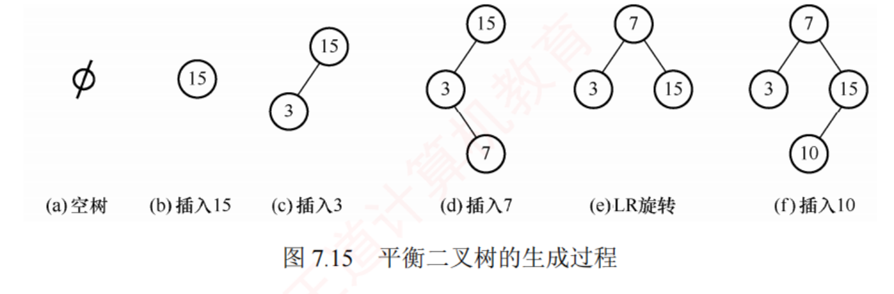
图 7.15 (a)–(f)：插 15、3 后插 7 失衡，最小不平衡子树根 15，插入位置是其左孩子的右子树 ⟹ LR 旋转 ⟹ 得 7(左 3, 右 15)；再插 10。
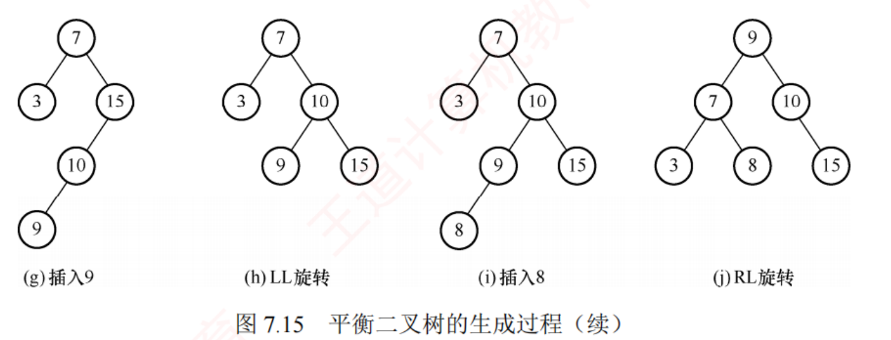
图 7.15 (g)–(j)：插 9 失衡，最小不平衡子树根仍是 15 ，位置是其左孩子的左子树 ⟹ LL（右单旋） ；插 8 失衡，根变成 7 ，位置是其右孩子的左子树 ⟹ RL 双旋 ，9 上位。
我的补讲 · 手推 AVL 的三步固定动作（考场上别凭感觉转）
第一步：找 A。 从新插入的结点 往上走，遇到的第一个 平衡因子绝对值变成 2 的结点就是 A（不是最靠上的那个，是最靠下的那个）。第二步：认型。 看从 A 出发走向新结点的头两步 ——左左 = LL、左右 = LR、右右 = RR、右左 = RL。只看两步，第三步以后与型号无关。 第三步：套结论。 单旋 B 上位、双旋 C 上位；把被顶掉的那棵子树（BR / BL / CL / CR）按"大小关系唯一确定"的位置挂回去。最常见的错法是第一步找错 A ——插入 9 那一步，15 和 7 都失衡了吗？不，只有 15 失衡（7 的左右高度差仍 ≤ 1），所以最小不平衡子树的根是 15 而不是 7；而插入 8 时反过来，A 变成了 7。A 是会换的，每一步都要重新找。
删除
① 先用 BST 的方法删除结点 w；② 若失衡，从 w 向上回溯 找到第一个不平衡结点 z（最小不平衡子树的根），设 y 是 z 的较高子树 的根、x 是 y 的较高子树 的根；③ 按 x、y、z 的相对位置分 LL / LR / RR / RL 四种情况调整，调整方式与插入完全相同 。
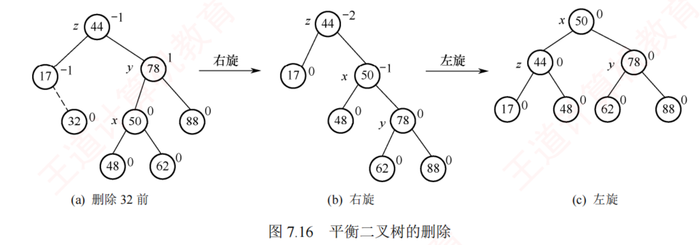
图 7.16 删除叶结点 32 后向上回溯，第一个不平衡结点是 44（z），z 的较高子树根是 78（y），y 的较高子树根是 50（x）——y 在 z 的右、x 在 y 的左 ⟹ RL 情况 ，先右旋后左旋，50 上位。
陷阱 ★ · 插入只调一次，删除可能调很多次
我的补讲 ★ · 🐍 删除到底会调几次——2 万次随机删除的实测分布
书上说 ：删除可能需要多次调整，甚至一路回溯到根。潜台词是 ："可能"有多可能？书没给。所以能考 ：7.3-14 问"哪种操作可能发生两次旋转"（答：插入和删除都会，因为 LR / RL 双旋内部本来就是两步）；
而"哪种操作的调整处数 可能不止一处"，答案只有删除。{0 次: 15427, 1 次: 4298, 2 次: 273, 3 次: 2} ——删除不仅会双旋，还确实出现过连续三处调整 。
另实测一例最小反例：在 AVL 15(10(5(·,9),11), 28(20,·)) 中删除 11，立刻触发 LR 双旋 得 15(9(5,10), 28(20,·))。为什么插入只调一次 ：旋转后该子树的高度恢复到插入之前 ，上层看不出任何变化，所以调完即止。
为什么删除可能调很多次 ：删除后子树高度可能减 1 ，这个"变矮"会往上传播，每一层都可能因此失衡。"AVL 的插入调整次数与删除调整次数相同"、"删除后最多旋转一次"一类说法全错 ；7.3-14 的选项 C（仅添加结点）是最诱人的错项——大多数人只练过插入的四种旋转，没练过删除。
插入 ：只需对以 z 为根的子树做
一次 平衡调整，调完即止（因为旋转后该子树的高度恢复到插入前，上层不受影响）。
删除 ：
可能需要多次调整 ——若一次调整导致子树高度减 1，则可能还要对 z 的祖先继续调整，
甚至一路回溯到根结点 （导致整棵树高度减 1）。
"AVL 的插入调整次数与删除调整次数相同""删除后最多旋转一次"一类说法
全错 。
查找效率：最少结点数
我的补讲 · "深度 h 的 AVL 最少 nh 个结点"为什么长这个样子
书上说 ：nh = nh−1 + nh−2 + 1。潜台词是 ：这条递推是一句话直接翻译过来的 ，不必死记——"最省结点的 h 层 AVL" = 根 1 个 + 一棵最省的 (h−1) 层 + 一棵最省的 (h−2) 层。 为什么另一棵只能是 h−2 层 ：树高是 h ⟹ 至少有一棵子树高 h−1；而平衡因子只能取 0、±1 ⟹ 另一棵不能低于 h−2 ；要最省当然取 h−2。两条约束一夹，递推就出来了。 同一句话还能推出 7.3-13 的形态数递推 ：高度恰为 h 的 AVL，两棵子树的高度组合只有 (h−1,h−1)、(h−1,h−2)、(h−2,h−1) 三种 ⟹ f(h) = f(h−1)² + 2·f(h−1)·f(h−2) ，f(2) = 3、f(3) = 15 、f(4) = 315。7.3-13 的 15 棵树结点数并不相同（4 到 7 个都有） ——"形态"数的是树的形状，不是结点个数。别与 7.3-9 的卡特兰数（按结点数递推、不限高度、不要求平衡）混。
设 nh 表示深度为 h（根深度为 1）的 AVL 中所含的最少结点数 ：
n0 = 0，n1 = 1，n2 = 2，nh = nh−2 + nh−1 + 1 ⟹ 1, 2, 4, 7, 12, 20, 33, 54, 88
必记结论 · 这一串数背下来，2012 真题当场秒杀
我的补讲 ★ · 这张表要会「双向查」，三道题各查一个方向
书上说 ：n
h = n
h−1 + n
h−2 + 1。
潜台词是 ：这是"高度 h 的 AVL
最少 要几个结点"，
它同时也是"n 个结点的 AVL 最多 能有多高" ——同一张表，三个方向都被考过：
h 1 2 3 4 5 6 7 8 9 nh 1 2 4 7 12 20 33 54 88
· 给 h 问最少结点 （7.3-12）：h=5 ⟹
12 。
· 给结点数问最多高度 （7.3-11）：n=20 ⟹ n₆ = 20 恰好卡满、n₇ = 33 > 20 ⟹ 最大深度
6 。
· 给"所有非叶结点平衡因子均为 1"问结点总数 （
2012 真题 ）：这九个字等价于"
这就是那棵最省结点的树 "（每个结点左比右恰高 1，是差 1 的极限且方向一致）⟹ h=6 ⟹
20 。
📌
两条能救急的规律 ：
nh = Fib(h+2) − 1 （1,2,4,7,12,20,33 ↔ 斐波那契 2,3,5,8,13,21,34 各减 1），且
后一项 ≈ 前一项的 1.618 倍 ；
反向的上界是
深度 h 的 AVL 最多 2ʰ−1 个结点 （满二叉树）。
一个"最少"一个"最多"，读题看清问的是哪个。
⚠️
n₀ = 0、n₁ = 1 ，别把 n₁ 写成 2；⚠️
本表用"根为第 1 层"的口径 ，若某题声明"只有根时高度为 0"（7.3-15），
所有答案整体减 1 。
我的补讲 ★ · 升序插入 AVL 反而长成满二叉树 —— 与 BST 退化成链形成全章最强对比
书上说 ：AVL 通过旋转保持平衡。潜台词是 ："保持"到什么程度？强到把最坏输入变成了最好结果 。
所以能考 ：把 1, 2, 3, …, n 依次插入 AVL，当 n = 2ᵏ−1 时得到的一定是满二叉树 ——因为升序插入全程只触发 RR 左单旋，每转一次就把树"压平"一次，插到 2ᵏ−1 时刚好收官。1..7 → 4(2(1,3), 6(5,7)) （满二叉树，旋转序列 RR@1 → RR@3 → RR@2 → RR@5）；1..1023 → 满二叉树、10 层 ；再插 1024 ⟹ 11 层。2013 真题 问"1..7 插入后平衡因子为 0 的分支 结点有几个"：满二叉树里 7 个结点平衡因子全是 0，但分支结点（非叶）只有 4、2、6 三个 ⟹ 答 3。陷阱全在"分支"两个字上。 7.3-15 问"1..1024 插完后的高度（只有根时高度记 0）"：层数 11 ⟹ 题目口径的高度 = 10 。陷阱全在括号里那句口径声明上。 把这一条与 7.3.1 的"升序插入 BST 退化成 n 层单支树"并排记 ：同样的输入，BST 得到最坏、AVL 得到最好 ——这就是 AVL 存在意义最有力的一句话。
背景 · AVL 的四种旋转代码 不必默写
统考十七年考过 AVL 的定义判定 （2009）、插入调整画图 （2010 / 2013 / 2021）、最少结点数 （2012）、删除后重插的性质 （2019）、中序降序的变形 （2015）——没有一次要求写旋转的 C 代码 。
四张旋转图看懂 + 会手推 + 会套"单旋 B 上位 / 双旋 C 上位"就够了 ；把时间省下来练 7.6 节那十个真正会考的代码模板。
知识串联 · 「维持一个局部不变量，换取全局有界」是四科共同的设计手法
AVL 只维护一条局部 规则（每个结点左右高度差 ≤ 1），就能保证全局 高度 ≤ 1.44 log₂n。同一手法在四科反复出现：→ 数构 ch7 B 树 ：只维护"每结点关键字数 ∈ [⌈m/2⌉−1, m−1] + 所有叶同层"，就保证了 O(logm n) 的高度。→ OS ch2 银行家算法 ：只在每次分配前检查一个局部条件（存在安全序列），就保证全局永不死锁。→ 网络 ch5 TCP 拥塞控制 ：每个发送方只按本地的 cwnd 规则收放，就让全网整体不崩溃。→ 组原 ch3 Cache 一致性协议 ：每个 Cache 只遵守本地的状态转换，就维持全局一致。一句话记牢 ：凡是"每次操作后顺手修一修"的结构，代价都是 O(log n) 的回溯，回报都是"最坏情况有界"。
知识串联 · 「旋转」这个动作在组原与 ch5 的近亲
→ 组原 ch2 循环移位 ：位串在寄存器里整体转一圈，元素顺序不变、位置改变——与树旋转"中序序列不变、层次改变"是同一种不变量。→ 数构 ch5 完全二叉树 / 堆 ：也是靠"高度差受限"（完全二叉树的叶只在最后两层）来保证 O(log n)；堆的筛选（下沉 / 上浮）就是它的"旋转" 。→ 数构 ch8 堆排序的调整 与 AVL 的调整都是 O(log n) 的一条路径 ，都发生在"破坏了不变量之后立即修复"的时刻。一句话记牢 ：树上的每一种"调整"都只沿一条根到叶的路径发生，所以代价必然是 O(h) ——这句话同时解释了 AVL 旋转、堆的筛选、B 树的分裂合并、红黑树的变色上溯。
知识串联 · 斐波那契：AVL 的最少结点数是它，ch8 还有一个斐波那契查找
→ 数构 ch7 本节 nh = Fib(h+2) − 1，所以 AVL 的高度上界是 1.44 log₂n （黄金比 1.618 的对数），比理想的 log₂n 多 44%。→ 数构 ch8 斐波那契查找 （不在 408 考纲，但同源）：把有序表按斐波那契数分割而不是对半分，是折半查找的变体。→ 数构 ch5 哈夫曼树 ：当权值恰是斐波那契数列时，构造出的哈夫曼树是一条单支链 ——与"AVL 最省结点树"形状相似、成因相同（每次合并的结果恰好等于下一项）。一句话记牢 ：凡是"当前项由前两项决定"的递推，最后都长成斐波那契 ——AVL 的 nh 、爬楼梯、以及 ch5 的哈夫曼极端情形，用的是同一个数列。
h：1 2 3 4 5 6 7 8 9
n：1 2 4 7 12 20 33 54 88 （后一项 = 前两项之和 + 1）
用法 ：含 n 个结点的 AVL，查找的
最多比较次数 = 树的最大深度 h ，取
满足 nh ≤ n 的最大 h 。例：含
12 个结点 ⟹ n
5 = 12 ⟹ 最多比较
5 次。
反向也常考：
深度为 h 的 AVL 最多结点数 = 2h − 1 （满二叉树）。
一个"最少"一个"最多"，读题看清问的是哪个。
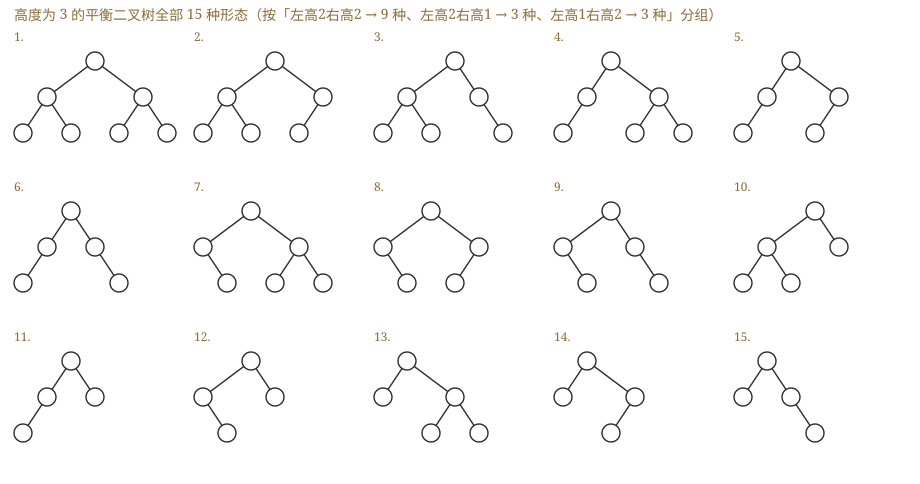
补图（我做第 13 题时程序穷举画出的）：高度为 3 的 AVL 共有 15 种形态 ，按"左高 2 右高 2 → 9 种、左高 2 右高 1 → 3 种、左高 1 右高 2 → 3 种"分组。这张图能帮你看清"AVL 的形状自由度比想象中大得多"——平衡只约束高度差，不约束形状。
7.3.3 红黑树
📄 p.286–290
AVL 为保持平衡性，插入 / 删除后会非常频繁地调整全树拓扑，代价较大。红黑树在 AVL 的平衡标准上进一步放宽条件 。
五条红黑性质
我的补讲 · 五条性质里，只有 ④ 和 ⑤ 会被真正考到，前三条是"入场券"
书上说 ：五条性质。潜台词是 ：①（非红即黑）②（根黑）③（叶黑）三条是定义性的"入场券"，判定题几乎不在这里出错；真正会被违反、也真正被考的是 ④ 与 ⑤ ：· ④ 不存在两个相邻的红结点 （红结点的父与孩子都必须黑）⟹ 它保证了"最长路径上红黑交替"，是"最长 ≤ 2×最短"的直接来源 ；插入时唯一可能被违反的就是它。· ⑤ 从任一结点到其任一叶结点的简单路径上黑结点数相同 ⟹ 它保证了"最短路径全黑"，是黑高概念的基础 ；删除时被违反的就是它。由这两条直接推出三个数量结论 ：最长路 ≤ 2×最短路 （④）· h ≤ 2log₂(n+1) （④+⑤）· 黑高为 h 的红黑树内部结点数 ∈ [2ʰ−1, 2²ʰ−1] 。性质 ③ 里的"叶结点"指虚构的外部 NULL 结点 ，不是最底层的真实结点——这与 7.4 B 树里"叶结点"的王道口径是同一套说法 ，数黑高时那个空叶自己也算一个黑 。
每个结点或是红色，或是黑色。
根结点是黑色的。 叶结点（虚构的外部结点 / NULL 结点）都是黑色的。 不存在两个相邻的红结点 （红结点的父结点和孩子结点均是黑色的）。对每个结点，从该结点到任意一个叶结点的简单路径上，所含黑结点的数量相同。
黑高 bh ：从某结点出发（不含该结点本身 ）到达一个叶结点的任意一条简单路径上的黑结点总数 。根结点的黑高称为红黑树的黑高。
我的补讲 ★ · 黑高怎么数才不出错（选项 D 那种"一边是空"的位置是翻车高发区）
书上说 ：黑高是从某结点出发（不含自身）到任一叶结点的简单路径上的黑结点总数。潜台词是 ：这里的"叶结点"指的是虚构的外部 NULL 结点 ，而且它本身算一个黑 ——不把空的那一侧也走一遍，就永远发现不了黑高不等。
所以能考 ：7.3-19（判哪张图是红黑树）的三步验收，一步淘汰一个选项：① 先当 BST 看 （左小右大）——B 项死在这一关（2 挂在 1 的左边、5 挂在 4 的左边），这是最低级的错误，先扫它能省一半时间 ；② 再看有没有红红相邻 ；③ 最后逐结点数两侧黑高 ——C 项死在这（结点 2 的左边黑高 1、右边黑高 2）；D 项死在"右孩子是空"上 （结点 3 往左经 2 到空是黑高 2、往右直接是空只有 1），很多人干脆不数空的那一侧，于是永远看不出来 。A 全过；B 不满足 BST；C 结点 2 左右 1 vs 2；D 结点 3 左右 2 vs 1 。别把"红结点的孩子必须黑"记反成"黑结点的孩子必须红" ——C 项的结点 4 是红的、两个孩子都是黑的，这一点完全合法，它错的只是黑高。
必记结论 · 由五条性质推出的三个数量结论
结论 1：从根到叶结点的最长路径不大于最短路径的 2 倍。 （最短路径全黑；最长路径黑红交替，红结点数最多等于黑结点数）结论 2：有 n 个内部结点的红黑树，高度 h ≤ 2log₂(n+1)。 （任一条简单路径上至少有一半是黑结点 ⟹ 根的黑高至少 h/2 ⟹ n ≥ 2h/2 − 1）结论 3（由 2 推出）：黑高为 h 的红黑树，内部结点数最少 2h − 1、最多 22h − 1。
我的补讲 · "适度平衡"这四个字就是红黑树全部选择题的答案
我的补讲 ★★ · 🐍 「AVL 一定比红黑树矮」是错的：0.9% 的情况下红黑树反而更矮（最小反例 12 个结点）
书上说 （7.3-16 的 Ⅲ）：AVL 是高度平衡、红黑树是适度平衡，
AVL 的树更矮 ⟹ 查询效率往往更优 。
潜台词是 ：书用的措辞是"往往"，而
很多人把它记成了"一定" ——这一步在考场上不会直接丢分（Ⅲ 那个"红黑树查询一般优于 AVL"确实是错的），但它是一句不准确的记忆。
🐍 我把
同一个插入序列 分别插进 AVL 和红黑树（CLRS 标准算法），n = 3…59 各跑 400 组、共
22 800 组随机排列 ，两棵树每次都通过合法性校验：
结果 组数 占比 红黑树更高 （高出 1 层，从未高出 2 层） 3879 17.0% 两者一样高 18717 82.1% 红黑树反而更矮 ⚠️204 0.9%
最小反例只要 12 个结点 ：插入序列
62, 30, 76, 35, 43, 48, 51, 20, 12, 61, 47, 74 ⟹
AVL 高 5 （
43(30(20(12,·),35), 51(48(47,·),62(61,76(74,·))))）、
红黑树只有高 4 ——两棵都通过了各自的合法性校验、中序完全相同。
原因：
AVL 只保证"每个结点左右差 ≤ 1"，并不保证"整棵树最矮" ；12 个结点的 AVL 允许高 5（n₅ = 12 恰好卡满），而红黑树这一次恰好排成了高 4 的形状。
⟹
准确的说法是 ：
红黑树的高度上界 更松（2log₂(n+1) vs AVL 的 1.44log₂n），平均更高（17% 的情形高一层），但个例可以更矮。
考场上答"AVL 查询更优"仍然正确（那说的是量级与平均），
但别把它当成"每一棵都更矮"的定理。
⚠️
而在有序插入 这种极端输入下，两者的差距是碾压级的 （🐍 实测）：
1..7 AVL 3 层 / 红黑 4 层 ·
1..31 AVL 5 / 红黑 8 ·
1..127 AVL 7 / 红黑 12 ·
1..1023 AVL
10 / 红黑
18 （几乎两倍）。
这正是 7.3-28（1..7 插 AVL 得满二叉树）与 7.3-20（1..7 插红黑树得一棵右重的树）那两道题放在一起的意义。
我的补讲 ★ · 旋转次数的四个上界（7.3-17 的 C 项就死在其中一格）
书上说 ：红黑树插入调整后即止、删除的情形 4 可能重复。
潜台词是 ：四个上界要分开记，
把插入的上界套到删除头上就中招 ——7.3-17 的 C 项"红黑树插入和删除过程至多有 2 次旋转"，
错就错在把删除也一并算了进去 。
旋转次数上界 依据 红黑树 插入 ≤ 2 情形 1（单旋）转成情形 2（单旋）后立即结束 红黑树 删除 ≤ 3 情形 1 → 情形 3 → 情形 2，一路可各转一次 ← C 错在这 AVL 插入 ≤ 2 一次双旋 = 两步，且一次调整即恢复 AVL 删除 可能 O(log n) 处 每层都可能要调（实测出现过 3 处）
🐍 4000 棵随机红黑树的实测分布：
插入 {0 次: 90490, 1 次: 24556, 2 次: 24167}——从未超过 2 ；
删除 {0: 51729, 1: 9628, 2: 6763, 3: 479 }——确实出现了 3 次 ；每次操作后都重新校验红黑五条性质，全部通过。
📌
这张表也是"为什么工业界用红黑树而不是 AVL"的量化答案 ：查找上 AVL 略优，但
删除的调整代价 AVL 是 O(log n)、红黑树是常数级 ——增删越频繁，红黑树越划算。
我的补讲 ★ · 「先看叔叔」的完整判定表（NULL 一律算黑，这是最容易漏的前提）
书上说 ：按叔结点 y 的颜色分三种情形。
潜台词是 ：这三种情形可以压缩成
一句口诀 + 一张五行表 ，考场上不必回忆图 7.19–7.21：
口诀：叔红 ⟹ 只变色（父叔染黑、爷染红），z 上移两层继续；叔黑 ⟹ 必旋转，转完即止。
叔叔颜色 z 的位置 动作 红 任意 父、叔染黑，爷染红，z 跳到爷继续往上查（不旋转） 黑 LL 对爷 右旋 + 父染黑、爷染红 ← 7.3-22 问"下一步"，答右旋 黑 RR 对爷 左旋 + 父染黑、爷染红 黑 LR 先对父 左旋转成 LL，再按 LL 处理（共两次旋转） 黑 RL 先对父 右旋转成 RR，再按 RR 处理
⚠️⚠️
NULL 算黑 ——判断"叔叔是什么颜色"时，若叔叔位置是空的，
按黑色处理，走旋转分支 。
7.3-20（1..7 插入）里插 3、插 5、插 7 三步的叔叔都是 NULL，所以
三步都要旋转 ；7.3-22 的叔叔也是 NULL，很多人误以为"没有叔叔就没法判断"于是瞎选变色。
没有叔叔 = 叔叔是黑的 = 一定要旋转。
⚠️
7.3-21（5,4,3,2,1 降序插入）最容易在"插 2"那一步翻车 ：此时 3 的兄弟 5 是
红 色，属情形 3——
只变色、绝不旋转 。一旦这里误做了旋转，就会推出选项 C 那种形态。
"先看叔叔颜色，再决定动不动手"必须成为肌肉记忆。
📌
推完的两条验收 ：根是黑的、每条路径黑结点数相同。对不上就是中间某步错了。
我的补讲 · 三条"由性质直接推出来"的结论（7.3-18 四个选项各打一处）
我的补讲 · 新结点为什么"初始必须染红"（一句反证）
书上说 （结论 3）：新插入的结点初始应染成红色。潜台词是 ：这不是约定，是反证出来的唯一选择 ——· 若染黑 ：该结点所在路径的黑结点数比其他所有路径多 1 ⟹ 几乎必然违反性质 ⑤（黑高相同） ，而性质 ⑤ 是"全局"约束，修起来要动整棵树；· 若染红 ：所有路径的黑结点数一个都没变 ⟹ 仅当父结点也是红色时才违反性质 ④（不许红红相邻） ，而性质 ④ 是"局部"约束，就地旋转 / 变色即可。一句话：染红把"全局问题"降级成了"局部问题"。 这也解释了为什么红黑树插入至多 2 次旋转——要修的只是一处局部违规。 唯一的例外 ：新结点若是根，插入后要染黑 （满足性质 ②），此时树的黑高加 1 ——7.3-20 里插 4 那一步（情形 3 变色后 z 上移到根）走的就是这条。
我的补讲 · 7.3-20 与 7.3-21 是一对镜像题：升序 vs 降序，推法一字不改
书上说 ：情形 1 / 2 的对称形情形只需把"左"全换成"右"。
潜台词是 ：
对称情形不要重新推 ，而两道课后题恰好把两个方向各考了一遍——
做完一道，另一道只是把左右对调 ：
7.3-20（升序 1..7） 7.3-21（降序 5,4,3,2,1） 旋转方向 全是 RR 左单旋 全是 LL 右单旋 过程 插 3 / 5 / 7 时叔叔是 NULL（黑）⟹ 旋转；只变色 插 3 / 1 时叔叔是 NULL（黑）⟹ 旋转；是红 ⟹ 只变色 （最易在此翻车 ） 结果 2黑(1黑, 4红 (3黑, 6黑(5红 ,7红 )))红结点 3 个：4、5、7 4黑(2黑(1红,3红), 5黑)
🐍 两题都用 CLRS 标准算法逐步跑过，过程与书上七步 / 五步
逐字吻合 。
📌
7.3-21 不推完也能秒选的两条筛法 ：①
数红结点 ——最后一步是"旋转 + 新根染黑、原爷染红"，结束时必然 2 红 3 黑，A、B 只有 1 个红当场出局；
②
看根是谁 ——插到第 3 个数时根已变成 4，此后一次纯变色、一次只在左子树内旋转，
根始终是 4 ⟹ 只剩 D。
⚠️
7.3-20 与 7.3-28（同样是 1..7 但插进 AVL）必须对照着看 ：AVL 得到的是
完美的满二叉树 4(2(1,3),6(5,7)) ，红黑树得到的是
一棵右重的树 ——
这就是"高度平衡"与"适度平衡"最直观的差别 。
书上说 ：五条红黑性质。
潜台词是 ：性质本身不出题，
出题的是它们的推论 ，而且每个推论都能用一个 3–5 结点的
最小反例 确定：
· 红结点数 ≤ 黑结点数？错。 反例
2黑(1红, 3红)：红 2 个、黑 1 个 ⟹
红最多可以是黑的 2 倍 （每个黑结点带两个红孩子的极端形态）。
· 全黑 ⟹ 一定是满二叉树？对。 推理链三步：全黑 ⟹ 性质 ⑤"每条路径黑结点数相同"直接变成"
每条路径结点数相同 " ⟹ 所有叶在同一层且每个内部结点都有两个孩子 ⟹ 满二叉树（结点数必为 2ʰ−1）。
🐍 穷举 1~15 个结点的
全部 13 402 696 种 二叉树形态，逐棵检验"全部染黑后是否仍满足红黑性质"：
合法的只有 4 棵，结点数恰为 1、3、7、15，100% 是满二叉树 。
· 分支结点一定有两个非空孩子？错。 反例
2黑(1黑, 3黑(·, 4红))：结点 3 是分支结点，却只有一个非空孩子。
· 子树也一定是红黑树？错。 子树的根若是红色，就违反性质 ②（根必须黑） ——
红黑树的性质不是"局部可继承"的，别拿子树当红黑树递归套用。 这是本题最隐蔽的一坑。
背景 ⬜ · 红黑树的删除 ：书上标了 * 号，408 十七年从没考过完整过程
书上原文的注意框写得很清楚：本节内容难度较大，考查概率较低，读者可根据自身情况决定是否学习或学习的时机。
408 至今考过的红黑树全部集中在「性质判定」（2 道课后题）与「插入过程」（3 道课后题）上，一道删除都没有。 建议：这一小节只记住上面那张"四情形谁会重复"的表（情形 4 是唯一可能重复的、至多 O(log₂n) 次；情形 1/2/3 常数次终止），细节全部跳过 ，等全书过完一轮真有余力再回来补。
实在要记一句就记"删除至多 3 次旋转" ——7.3-17 的 C 项就靠它。
知识串联 ★ · 红黑树的真正战场在 OS：Linux 的 CFS 调度器
→ OS ch2 Linux 的完全公平调度器（CFS）用红黑树管理就绪队列 ：以 vruntime 为关键字，每次取最左结点 就是"下一个该跑的进程"，插入 / 删除 O(log n)。
为什么不用 AVL？因为进程队列是增删极频繁的场景 ——每次时钟中断都要摘下来、算完 vruntime 再插回去，正是"查询略慢、调整很少"最划算的地方 。→ 工程 C++ 的 map / set、Java 的 TreeMap / TreeSet 也都是红黑树（同样因为要支持频繁增删）。→ OS ch3 Linux 内核用红黑树管理进程的虚拟内存区域（vm_area_struct） ，缺页时按地址在树里定位是哪一段。一句话记牢 ：查找远多于增删 ⟹ AVL；增删频繁 ⟹ 红黑树。 这条权衡就是本节所有选择题的标准问法，而 OS 里的调度队列是它最典型的落点。
知识串联 · 「用一位标志改变结点的含义」——红黑树的颜色位在三科的同族
红黑树往每个结点里塞了一个 bit（红 / 黑） ，用它把"高度平衡"这个昂贵约束换成了"没有两个相邻红结点"这个便宜约束。同一手法：→ 组原 ch3 Cache 行的有效位 / 脏位 ：一位决定这一行"算不算数 / 要不要写回"。→ OS ch3 页表项的存在位 / 修改位 / 访问位 ：存在位一位就把"缺页中断"这套机制挂了上去；时钟置换算法的"使用位"更是与红黑树的颜色位同构——都是"给对象打一个便宜的标记，用它替代昂贵的精确信息" 。→ 数构 ch5 线索二叉树的 ltag / rtag ：一位决定指针指的是孩子还是前驱后继。→ 数构 ch7 后文 散列表的删除标记（墓碑） 也是一位：区分"从未用过的空"与"用过又删了的空"。一句话记牢 ：一位标志的作用永远是"把一个需要 O(n) 才能算出来的信息，缓存成 O(1) 能读到的近似" ——代价是这一位要在每次操作后维护正确。
知识串联 · 「禁止某种局部模式」是限制全局性质的通用手段
红黑树只禁了一件事——不许出现两个相邻的红结点 ——就把最长路径限制在最短路径的 2 倍以内。同样的手法：→ 网络 ch2 曼彻斯特编码 / 4B5B 编码 ：禁止长串的连 0 或连 1，就保证了接收方永远能提取到时钟。→ 网络 ch3 零比特填充（每 5 个连 1 后插一个 0） ：禁止数据里出现标志字段的模式，就保证了帧定界不会认错。→ 组原 ch2 海明码 / CRC ：让合法码字之间的距离 ≥ d，就保证了能检 d−1 位错。一句话记牢 ：禁掉一小撮"局部图样"，换来一条"全局上界"——这是编码、平衡树、协议设计三处共用的同一个思想。
知识串联 · 「上溯回溯」：红黑树情形 3 的 z 上移，与三科的同一个动作
情形 3 里 z 每次上移两层 ，最多 O(log n) 轮到根为止。这种"处理完自己再把问题交给父亲"的模式：→ 数构 ch5 后序遍历 （先处理孩子再处理自己）；→ 数构 ch7 AVL 删除的向上回溯 、B 树分裂 / 合并的向上传播 ——三者都是"局部修复可能引发上层修复"。→ OS ch2 进程的级联终止 （撤销父进程要先撤销全部子孙）方向相反，但同属"沿树传播"。→ 组原 ch7 中断的层层上报 ；→ 网络 ch3 生成树协议 STP 的根桥选举 也是消息沿树上溯。一句话记牢 ：树上的"传播"最多走一条根到叶的路径，所以代价永远是 O(h)——判断"会不会一路传到根"，只需问"这一层修完后，它自己的高度 / 关键字数变没变" （AVL 变了才传、红黑树变色才传、B 树分裂 / 合并才传）。
AVL 是
高度平衡 （左右子树高度差 ≤ 1），红黑树是
适度平衡 ——
允许左右子树高度相差最多达 2 倍 ，代价是查找略慢，回报是插入 / 删除时的结构调整
频率大幅下降 。
⟹
查找远多于插入 / 删除 ⟹ AVL 更优；插入 / 删除频繁 ⟹ 红黑树更合适。 这条权衡是选择题的标准问法。
⟹ 工程佐证：
C++ 的 map / set、Java 的 TreeMap / TreeSet 都基于红黑树 （因为它们要支持频繁增删），
而不是 AVL 。
插入
结论 3：新插入的结点初始应染成红色。 ——若染黑，该结点所在路径的黑结点数比其他路径多 1，几乎必然违反性质 ⑤ ；染红则所有路径的黑结点数不变，仅当父结点也是红色时才违反性质 ④ ，局部调整即可。
设新插入结点为 z：① 按 BST 规则插入并染红，若 z 的父结点是黑色，直接结束 ；② 若 z 是根结点，染黑（满足性质 ②），树的黑高加 1，结束；③ 若 z 非根且父结点 z.p 是红色 ⟹ 违反性质 ④，此时爷结点 z.p.p 必存在且必为黑色 ，按叔结点 y（z.p 的兄弟）的颜色 分三种情形处理（下设 z.p 是 z.p.p 的左孩子，右孩子情形对称）。
情形 条件 动作 结果 情形 1 叔结点 y 黑 ，且 z 是其父的右 孩子 对 z.p 左旋 ，使 z 上升取代原父位置 转化为情形 2 （z、z.p 均红，任何路径黑结点数不变）情形 2 叔结点 y 黑 ，且 z 是其父的左 孩子 对 z.p.p 右旋 ，并原父染黑、原爷染红 插入结束 （黑结点数不变，连续红结点消除）情形 3 叔结点 y 红 （z 是左是右均无影响） z.p 与 y 染黑、z.p.p 染红 把 z.p.p 当作新的 z 继续向上回溯 ，每次循环 z 上移两层 ，直到成为根（染黑结束）或进入情形 1 / 2（旋转后结束）
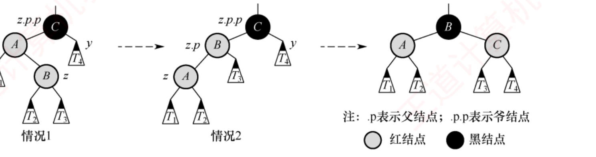
图 7.19 情形 1（LR 型，先左旋）→ 情形 2（LL 型，右单旋）的调整过程。子树 T₁ ~ T₄ 均以黑结点为根且黑高相同，确保旋转前后性质 ⑤ 成立 。
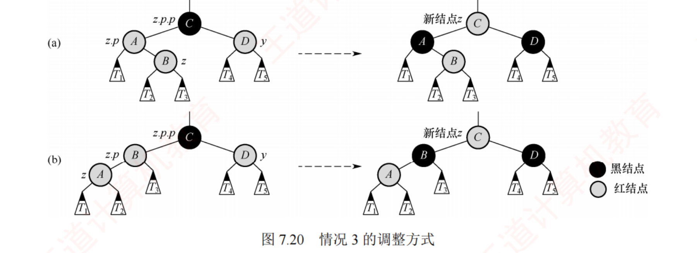
图 7.20 情形 3：叔结点为红 ⟹ 只变色不旋转 ，父与叔染黑、爷染红，爷结点成为新的待调整结点 z ，向上再来一轮。补充说明：回溯中 z 可能已上移至内部结点从而拥有子树，所有调整都必须考虑其子树的存在 。
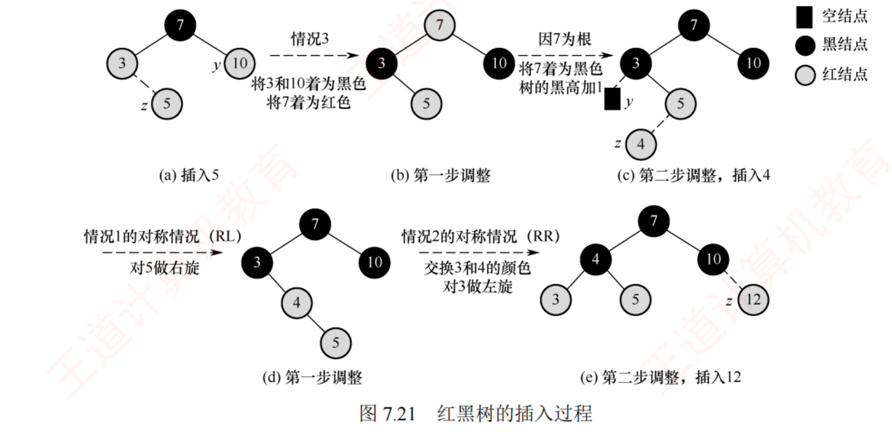
图 7.21 完整实例（初始为 7 黑、左 3 红、右 10 红）：插入 5 属情形 3 ⟹ 3 与 10 染黑、7 染红，因 7 是根再染回黑，树的黑高加 1 ；插入 4 属情形 1 的对称情形（RL 型）⟹ 先对以 5 为根的子树右旋，转为情形 2 的对称情形（RR 型），交换 3 和 4 的颜色再左旋；插入 12 父结点 10 为黑 ⟹ 无须调整。
必记结论 ★ · 红黑树插入只需要记住"先看叔叔"
叔红 ⟹ 只变色（父叔染黑、爷染红），z 上移两层继续；叔黑 ⟹ 必旋转，转完即止。 ⚠️ NULL 算黑 ——判断"叔叔是什么颜色"时，若叔叔位置是空的，按黑色处理 ，走的是旋转分支。这一条是做红黑树选择题最容易忽略的前提。⚠️ 对称情形不要重新推 ：z.p 是右孩子时，把上表的"左"全换成"右"即可（情形 1 变 RL 型先右旋、情形 2 变 RR 型左单旋）。红黑树的调整方法与 AVL 有异曲同工之妙 ——旋转的样子是一样的，差别只在"何时旋、旋完怎么染色"。
* 删除（书上标 * 号）
知识串联 · 「双黑结点」这个技巧：把无法就地解决的欠账记在指针上 往上带
红黑树删除时，删掉一个黑结点会让该路径黑高少 1，解决办法是把"欠一重黑"这件事记在替换结点 x 身上 （视作双黑结点），一路往上带，直到某处能还清 。这种"记账 + 上溯"的手法：→ 组原 ch2 加法的进位 ：本位放不下就把 1 记在进位上往高位带（与"双黑"完全同构 ）；借位减法 更是反向的同一件事。→ 数构 ch7 · 7.4 B 树的分裂 （多出来的关键字往上带）与合并 （亏空往上带）。→ OS ch2 信号量的负值 ：S < 0 时 |S| 就是"欠了几个进程"的账。一句话记牢 ：局部还不清的账，就变成一个可携带的标记交给上层 ——只要每上一层账都不变大，整个过程就必然在 O(log n) 步内终止（这正是"情形 4 是唯一可能重复的情形"的原因）。
我的补讲 · 这一小节到底要不要学
书上原文的注意框写得很清楚：本节内容难度较大，考查概率较低，读者可根据自身情况决定是否学习或学习的时机。 我的建议：先跳过细节，只记住下面这张"骨架"，等全书过完一轮、真有余力再回来补。 408 至今没有考过红黑树删除的完整过程 ，考的都是插入与性质。
删除先执行 BST 的标准删除（有两棵非空子树时用中序后继/前驱 替代），故最终归结为两种情形：待删结点有一个孩子、待删结点是终端结点。
有一个孩子 ：只可能是"黑父 + 红独子"（否则破坏性质 ⑤）⟹ 用该红孩子顶替并染黑 。无孩子且是红色 ⟹ 直接删除，无须调整。无孩子且是黑色 ⟹ 删除后该路径黑高减 1，把替换结点 x 视为带额外一重黑色 的双黑结点 ，任务转化为"把双黑恢复成普通结点"。按 x 的兄弟 w 及 w 的孩子的颜色分四种情形：
情形 1（w 红） ：交换 w 与父结点 x.p 的颜色，对 x.p 左旋 ⟹ 新兄弟必为黑 ⟹ 转为情形 2 / 3 / 4 。情形 2（w 黑、w 的右孩子红，RR 型左单旋） ：交换 w 与 x.p 的颜色，w 的右孩子染黑，对 x.p 左旋 ⟹ 结束 。情形 3（w 黑、左孩子红右孩子黑，RL 型） ：交换 w 与其左孩子的颜色，对 w 右旋 ⟹ 转为情形 2 。情形 4（w 黑、两个孩子都黑） ：从 x 和 w 上各去掉一重黑（x 变普通黑、w 变红），把 x.p 额外着一层黑，x 上升一层继续循环 。
必记结论 · 删除四情形的"谁会重复、谁不会"
情形 1、2、3 各执行常数次颜色改变和至多 3 次旋转后便终止；情形 4 是唯一可能重复执行的情形 ，每执行一次指针 x 上升一层，至多 O(log₂n) 次。向上推给父结点 ；而情形 1、2、3 中 w 或 w 的左孩子有红色可用，在 x.p 的子树内部就能解决 。通过情形 1 进入情形 4 的，因为此时 x.p 已经是红色，把新 x 变黑即可终止，只走一次 。
7.4 B 树和 B+树
📄 p.304
我的补讲 ★★ · 这 13 页是本章的第一重心（0.92 真题/页），而且题型只有四类
书上说 ：B 树是本章难点，要求掌握插入 / 删除 / 查找的操作过程。
潜台词是 ：难归难，
它的题型窄到可以数出来 ——12 道真题只落在四个格子里，把这四格练熟，本节就是全章投产比最高的一块：
题型 道数 真题年份 核心动作 ① 定义辨析 3 2009 · 2016 · 2023 逐条对定义；叶结点两种口径 ② 数量计算 （最多 / 最少结点数、关键字数、高度、形态数）6 2013 · 2014 · 2018 · 2021 · 2025 "根有特权 + 每格填到底" ③ 插入分裂 1 2020 上升第 ⌈m/2⌉ 个 ④ 删除借并 2 2012 · 2022 先借后并、借要父子换位
⟹
② 数量计算占了一半 ，而它恰恰是最套路化的一类（下面那张"四个方向"的表能一口气装下六道题）。
本节没有一道综合真题，全是选择题，一道 2 分——但十七年里它自己就覆盖了 12 个年份，比任何一节都稳。
⚠️
考纲对二者的要求不同 ：
B 树要掌握建立 / 插入 / 删除的操作过程，B+树只考基本概念与性质 （脚注：也写作 "B-树"，这里的 "-" 是连接词，
不能读作"减" ）。
考纲对二者的要求不同 ：重点考查 B 树 ——不仅理解基本特点，还要掌握建立、插入和删除 的操作过程；B+树仅考查基本概念 。（脚注：也写作 "B-树"，这里的 "-" 是连接词，不能读作"减" 。）
知识串联 ★★ · 「B 树的高度 = 磁盘 I/O 次数」是本节与 OS / 组原的总接口
B 树的一切设计（多路、扁平、结点 = 页块）只为一件事：把访存次数换成访盘次数，再把访盘次数压到最小 。→ OS ch5 一次磁盘 I/O = 寻道时间 + 旋转延迟 + 传输时间 ，是毫秒 级；而一次内存比较是纳秒 级——差 10⁶ 倍 。
所以 B 树宁可在结点内做 267 个关键字的顺序 / 折半比较（内存里，白送），也要少读一层（磁盘上，一次几毫秒）。→ OS ch4 文件的多级索引 ：UNIX 混合索引里"一级间址要 2 次访盘、二级间址 3 次、三级 4 次"——数的正是"树高 = 访盘次数"，与 7.4-10 那道题一模一样 。→ 组原 ch3 存储层次 ：寄存器 → Cache → 主存 → 磁盘，每下一层慢两三个数量级——凡是跨了一层的访问，都值得用大量本层计算去换 。一句话记牢 ：B 树把"比较次数"这个指标整个换成了"树高" ——所以本节所有题的答案都只跟层数有关，跟结点里比几次毫无关系。
知识串联 ★ · 「一个结点 = 一个磁盘块」就是局部性原理的落地
→ 组原 ch3 空间局部性 ：既然一次 I/O 的固定开销那么大，就应该一次多搬点回来 ——Cache 一次搬一整"块"（含相邻数据）、虚存一次调一整"页"、B 树一次读一整"结点"（含 267 个关键字），三者是同一条原则的三次应用。→ OS ch3 页面大小的权衡 与 B 树"阶数的权衡"完全同构：块太小 ⟹ 层数多、I/O 次数多；块太大 ⟹ 单次传输久、内部碎片大。两边的最优点都由硬件页块尺寸倒推 （7.4-综3 的 m = 267 就是这么算出来的）。→ OS ch5 磁盘预读 / 缓冲区 、→ 网络 ch5 Nagle 算法攒够一个 MSS 再发 ——也都是"把多次小开销并成一次大开销"。一句话记牢 ：凡是"固定开销远大于单位开销"的通道，最优策略永远是加大批量 ——B 树的"多路"就是这句话在查找结构上的形态。
7.4.1 B 树及其基本操作
📄 p.305–308
考点追踪：B 树的定义和特点（2009、2025）；关键字数与结点数的分析（2013、2014、2018、2021）；插入构造（2020）；删除操作实例（2012、2022）；非空 B 树三种操作的特点（2023）
m 阶 B 树是一种自平衡的 m 路查找树，其所有叶结点都位于同一层次。 一棵 m 阶 B 树或为空树，或为满足以下特性的 m 叉树：
每个结点至多有 m 棵子树 ，即至多包含 m − 1 个关键字 。
若根结点不是叶结点，则至少有 2 棵子树 ，即至少包含 1 个关键字。
除根结点外 ，所有非叶结点至少有 ⌈m/2⌉ 棵子树 ，即至少包含 ⌈m/2⌉ − 1 个关键字 。每个非叶结点的结构如下——Ki 为关键字且 K₁ < K₂ < … < Kn ；Pi−1 所指子树中的所有关键字均小于 Ki ，Pi 所指子树中的所有关键字均大于 Ki （更准确地说，介于 Ki 和 Ki+1 之间）；n 为该结点中关键字的个数。
n P₀ K₁ P₁ K₂ P₂ … Kn Pn
所有叶结点都出现在同一层次上，且不实际存储数据 （对应指针为空，可视为查找失败的外部结点 ，作用类似折半查找判定树中的失败结点）。
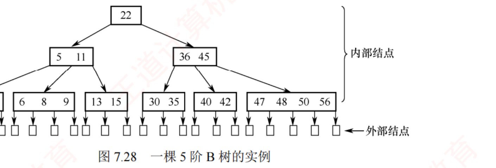
图 7.28 一棵 5 阶 B 树。除根外的非叶结点至少 ⌈5/2⌉ = 3 棵子树（至少 2 个关键字）、至多 5 棵子树（至多 4 个关键字）。第二层最左结点的 5 和 11 把关键字空间划成 (−∞,5)、(5,11)、(11,+∞) 三个区间，下层子树的关键字必须各自落在对应区间内 。最底层的小方块是外部结点 ，代表查找失败的位置。
必记结论 ★ · 凡是给图的 B 树题，第一步永远是数这一句
我的补讲 ★ · 「定阶只能定出一个区间」：两条边分别来自最胖和最瘦的结点
书上说 ：非根结点关键字数 ∈ [⌈m/2⌉−1, m−1]。潜台词是 ：这条区间是双向 的——给定 m 能框住关键字数，反过来给定一张图也只能框住 m，框不出唯一值 。
所以能考 ：7.4-1 的答案就是"无法确定"——这是 B 树整节第一条、也最容易被忽略的元认知 。三步定阶（顺序不能乱） ：① 先分家门 ：关键字数 = 子树数 − 1 ⟹ 是 B 树（= 子树数 ⟹ B+树）；② 最胖的结点定 m 的下界 ：m − 1 ≥ 最多关键字数 ⟹ m ≥ 最多关键字数 + 1 ；③ 最瘦的非根 结点定 m 的上界 ：⌈m/2⌉ − 1 ≤ 最少关键字数。只有 m = 4、5、6 三个值合法 （m=3 时 [15 19 22] 超上限、m≥7 时 [05 10] 触下限）⟹ 答"无法确定"。最大陷阱是"看见某个结点装了 3 个关键字就断言 4 阶" ——那只说明 m ≥ 4。书上 2013 真题的注释框专门强调过：5 阶 B 树里不必存在任何一个装满 4 个关键字的结点，全都装 2 个同样合法。
"m 阶"是容量上限，不是必须用满 ——这句话同时支撑 7.4-1（定不出唯一阶）与 7.4-17（为了结点最多，让每个结点只装 1 个）。
我的补讲 ★★ · 「最多 / 最少」四个方向合成一张表，六道题一次装下
书上说 ：分别给了"装满"与"最瘦"两条公式。
潜台词是 ：题目问的可能是
结点数 也可能是
关键字数 ，可能问
最多 也可能问
最少 ——
四个方向两两组合，各有各的填法 ，而六道题恰好散在这四格里：
问 怎么填 公式 / 做法 考过 关键字最多 每结点塞满 m−1 个、每层结点数 ×m n ≤ mh − 1 7.4-3 Ⅲ（3 阶 3 层 ⟹ 3³−1 = 26 ） 关键字最少 根只放 1 个 ，其余每结点 ⌈m/2⌉−1 个，每层结点数 ×⌈m/2⌉逐层累加 2013 （5 阶 2 层 ⟹ 1+2+2 = 5 ）· 2018 （3 阶 5 层 ⟹ 31 ）结点最多 关键字摊薄 ：每结点只放下限个结点数可以逼近关键字数 2014 （15 个关键字 4 阶 ⟹ 15 个结点）· 2021 （11 ）结点最少 关键字堆满 ：每结点放 m−1 个⌈关键字数 / (m−1)⌉ 7.4-6（3 阶 5 层 ⟹ 最少 31 、最多 121 ）
秒答口诀：问结点最多就把关键字摊薄，问结点最少就把关键字堆满；问关键字最少就让根吃特权、其余全按下限。
⚠️⚠️
7.4-6 唯一的难点是"问的是结点数不是关键字数" ：3 阶最瘦 = 满二叉形 ⟹ 1+2+4+8+16 =
31 个结点 （恰好也是 31 个关键字，因为每结点 1 个）；最胖 = 满三叉形 ⟹ (3⁵−1)/2 =
121 个结点 （
而关键字是 242 ）。
等比求和的分母是 b−1，别顺手写成 3⁵−1。
⚠️
2021 那道题还多一层约束 ："第 2 层有 4 个关键字"——想让第 3 层结点多，就得让第 2 层结点多；而
第 2 层的结点数 = 根的关键字数 + 1 ，根最多 2 个 ⟹ 第 2 层最多 3 个。
🐍 穷举全部合法形状：
把 4 个关键字摊成 (2,1,1) 三个结点 ⟹ 第 3 层 3+2+2 = 7 ⟹ 总共 11 ✔；摊成 (2,2) 两个结点 ⟹ 第 3 层 6 ⟹ 总共 9（选项 C，不是最多） 。
"上一层的关键字数 + 1 = 下一层的结点数"这条链是整道题的骨架。
B 树 ⟺ 关键字数 = 子树数 − 1；B+树 ⟺ 关键字数 = 子树数。
这一句同时解决两类题：
①"这是 B 树还是 B+树" （第 1 题、2009 真题）；
②"这棵树是几阶的" ——注意
定阶只能定出一个区间 ：
·
最胖的结点定 m 的下界 ：m ≥ (最多关键字数 + 1)；
·
最瘦的非根结点定 m 的上界 ：⌈m/2⌉ − 1 ≤ (最少关键字数)。
做题时我写程序扫了 m = 3…9，第 1 题那棵树
只有 m = 4、5、6 三个值合法 ⟹ 所以答案是"无法确定"。
"看见每结点最多 3 个关键字就断言是 4 阶"是错的。
陷阱 ★★ · "叶结点"这三个字在王道正文与统考真题里指的不是同一个东西
我的补讲 ★ · 口径怎么判：看题目让"叶结点"干什么
书上说 ：王道正文的"叶结点"＝外部失败结点，统考真题的"叶结点"＝最底层终端结点。潜台词是 ：你必须在读题的头三秒就判出这道题用的是哪一套 ，否则整道题都会错位。
所以能考 ：一条可机械执行的判据——· 题目说"叶结点里有关键字 / 被插入 / 被删除 / 发生变化" ⟹ 统考口径 （外部结点不存数据，谈不上插删）。2023 真题的 Ⅱ、Ⅳ 就是这一类。 · 题目说"n 个关键字有多少个叶结点" ⟹ 王道口径 ，答 n+1。 （7.4-5）· 题目说"树的高度" ⟹ 一律不含 外部结点层 （7.4-9 书上专门注释：别的辅导书算出来会比这里多 1，别慌）。这条口径差异在本节至少影响三处 ：2023 的 Ⅱ / Ⅲ / Ⅳ、7.4-5 的"n+1 个叶结点"、以及所有高度题含不含最底层的争论。它值三道题。
王道正文（本书采用） ：B 树的"叶结点" =
最底层的外部失败结点 （不存关键字，n 个关键字 ⟹ 恒有
n + 1 个 ）。
统考真题 ：B 树的"叶结点" =
最底层的终端结点 （真正存关键字的那一层）。书上 p.305 的脚注专门声明了这个差异，2023 真题的注释框也再次点明。
判断诀窍 ：
题目只要说"叶结点里有关键字 / 被插入 / 被删除"，就是统考口径 （外部结点不存数据，谈不上插删）；说"n 个关键字有多少个叶结点"，就是王道口径（答 n+1）。
这一条至少值三道题。
1. 查找
与 BST 相似，只是每个结点是多关键字的有序表 ，做的不是二路分支而是多路分支决策 。包含两个基本操作：① 在 B 树中定位目标结点（在磁盘上进行） ；② 在结点内查找关键字（在内存中进行，可顺序查找也可折半查找） 。B 树常存储在磁盘上，因此磁盘上的查找次数（目标结点所在的层次数）才是决定效率的关键因素。
2. 高度（磁盘存取次数）
⚠️ B 树的高度不包括最底层外部叶结点所处的那一层 （部分教材把该层计入，定义略有不同）。设 B 树含 n 个关键字、高度 h、阶数 m：
logm (n+1) ≤ h ≤ log⌈m/2⌉ ((n+1)/2) + 1
最小高度 ：每个结点都塞满 ⟹ n ≤ (m−1)(1 + m + m² + … + mh−1 ) = mh − 1 ⟹ h ≥ logm (n+1) 。最大高度 ：每个结点都最瘦 ⟹ 第 1 层 1 个结点、第 2 层 2 个、第 3 层至少 2⌈m/2⌉ 个……第 h+1 层（外部结点层）至少 2(⌈m/2⌉)h−1 个；而外部叶结点数恒为 n + 1 ⟹ n + 1 ≥ 2(⌈m/2⌉)h−1 ⟹ h ≤ log⌈m/2⌉ ((n+1)/2) + 1 。
例：3 阶 B 树含 8 个关键字 ⟹ 2 ≤ h ≤ 3.17 ⟹ 实际 2 ≤ h ≤ 3 。
我的补讲 ★ · 高度公式不用背：三个零件现推，两分钟；再用「反向验算」定案
书上说 ：log
m (n+1) ≤ h ≤ log
⌈m/2⌉ ((n+1)/2) + 1。
潜台词是 ：这两条式子都是
从更基本的三件事推出来的 ，忘了公式并不致命：
· 最小高度（树最胖） ：每结点塞满 ⟹ n ≤ m
h − 1 ⟹
h ≥ logm (n+1) 。
· 最大高度（树最瘦） ：三个零件——①
外部结点恒为 n+1 个 （7.4-5）；②
根只生 2 个孩子 ；③ 往下每层乘 ⌈m/2⌉。
于是 n+1 ≥ 2(⌈m/2⌉)
h−1 ⟹
h ≤ log⌈m/2⌉ ((n+1)/2) + 1 。
20 秒能推回来。
⚠️
取整方向别搞反 ：
"≥ 就往上取整、≤ 就往下取整" ——比记 ⌈⌉⌊⌋ 更不容易错。
📌
「反向验算」比正着套公式更可靠 （考场推荐）：把候选高度代回"这个高度最多 / 最少装多少关键字"，看 n 落不落在区间里。以 7.4-9（3 阶 2047 个关键字）为例：
高度 7 最多装 3⁷ − 1 = 2186 ≥ 2047 ✔ 装得下
高度 6 最多装 3⁶ − 1 = 728 < 2047 ✘ 装不下 ⟹ 最小高度 = 7
高度 11 最瘦要 1 + 2(2¹⁰−1) = 2047 ⟹ 恰好卡住 ✔
高度 12 最瘦要 1 + 2(2¹¹−1) = 4095 > 2047 ✘ ⟹ 最大高度 = 11
🐍 我用 DP 直接枚举"恰含 2047 个关键字的 3 阶 B 树的全部可行高度"，得
{7, 8, 9, 10, 11} ；同法对 7.4-8（5 阶 53 个关键字）得
{3, 4} ——
两题的公式取整结果与穷举结果完全一致。
📌
出题人埋的信号 ：7.4-9 的 2047 = 2¹¹−1，(n+1)/2 = 1024 一步出整数；7.4-8 的 54/2 = 27 = 3³。
看到 2ᵏ−1 这种数，先往"最瘦树 / 满二叉"上想。
我的补讲 · 7.4-10 那道 I/O 题：层数 ≠ I/O 次数，题干里那句"根已在内存"是送命点
书上说 ：磁盘上的查找次数（目标结点所在层次）才是决定效率的关键。
潜台词是 ：
B 树的一个结点 = 一个磁盘页，读一层就是一次 I/O ——这是 B 树存在的全部理由（7.4-12、7.4-19 都指向它）。
所以能考 ："最多需启动几次 I/O" = "最深能到第几层"，
再看题干有没有说根已在内存 。
7.4-10（7 阶、第 2016 个关键字）：7 阶非根结点至少 ⌈7/2⌉ = 4 棵子树、3 个关键字，逐层累加"结点数 × 每结点最少关键字数"：
层 1 2 3 4 5 6
结点 1 2 8 32 128 512 （2×4^(h−2)）
累计 1 7 31 127 511 2047 （通项 1 + 2(4^(h−1) − 1)）
↑ 2016 落在 (511, 2047] ⟹ 最深在第 6 层
读 6 个结点，
根已在内存 ⟹ 6 − 1 = 5 次 I/O （选项 C 的 6 就是漏减 1 的落点，估计是最高频错选）。
⚠️
别去纠结"第 2016 个关键字"怎么按层序数 ：题目只是用它指定"总量 2016"这个规模；只要 2016 超过了 5 层能装下的最少量 511，它就
可能 被挤到第 6 层，问"最多"就取这个可能。
📌
1, 7, 31, 127, 511, 2047 这串数是 7 阶专属 ；更通用的做法是现场逐层写一张两行的表，两分钟，比背通项稳。
必记结论 · "除根结点外"这五个字至少值三道题
知识串联 · 「n 个关键字 ⟹ n+1 个外部结点」与 ch5、7.2 是同一个数数法
最大高度公式的推导起点就是这一条：外部结点数恒为 n+1 ⟹ n+1 ≥ 2(⌈m/2⌉)h−1 ⟹ 高度上界。而"n ⟹ n+1"在数构后四章出现了四次：→ 数构 ch5 n 个结点的二叉链表有 n+1 个空指针 （线索二叉树拿它们存线索）；→ 数构 ch7 · 7.2 折半判定树 n 个圆结点 + n+1 个方结点 ；→ 数构 ch7 · 7.3 BST 补空指针得 n+1 个失败结点 （7.3-综1 的 ASL失败 分母）；→ 数构 ch7 · 本节 B 树 n 个关键字 ⟹ n+1 个外部结点 （7.4-5）。一句话记牢 ：n 个关键字把数轴切成 n+1 个开区间，一个区间就是一个失败出口——与阶数 m 无关 （7.4-5 的 C、D 两个错项正是"以为叶结点数会随 m 放大"）。
知识串联 · 「根的特权」在四科都有对应：边界总是被单独放宽
B 树的所有"最少"类题目，答案都建立在根允许只有 1 个关键字、2 棵子树 这条特例上（其余非叶结点必须 ⌈m/2⌉ 棵子树起步）。这种"给边界开后门"的设计到处都是：→ 数构 ch7 红黑树的根必须是黑 （也是只对根的额外规定）；→ OS ch3 页表的第一级 / 段表的边界项 常常不满；→ OS ch4 文件最后一个盘块允许不满 （内部碎片就是这么来的）；→ 网络 ch4 IP 分片的最后一片 MF = 0、长度可以不是 8 的倍数 ；→ 网络 ch3 最后一帧允许短于满帧。一句话记牢 ：凡是"分块 / 分层"的结构，第一块或最后一块必然有例外规定 ——做"最少 / 最多"的计算题时，先把这个例外单独摘出来算 （本节就是"根 1 个 + 其余全按下限"）。
最大高度公式里的
+1 、以及第 2 层为什么只要 2 个结点，
全都是给根结点开的后门 ——根允许只有 1 个关键字、2 棵子树，其余非叶结点必须 ⌈m/2⌉ 棵子树起步。
做"至少多少个结点 / 至少多少个关键字"的题时，
永远是"根按最低标准 1 个关键字，其余全按 ⌈m/2⌉ − 1 个关键字" 。2018 真题（高度 5 的 3 阶 B 树至少含多少关键字）、第 6 题（高度 5 的 3 阶 B 树至少 / 至多多少结点）都是照这句话逐层累加。
⚠️
第 7 题的 (n−1)(⌈m/2⌉−1)+1 只是一个宽松下界 ：我写 DP 算了真值表，只有 n = 1, 3, 7, 15（m = 3/4）或 1, 3, 9（m = 5）这类"整齐"的结点数才恰好取到，其余偏松。
但考场上仍然选它 ——四个选项里只有它形状是对的。（写在这里是为了防止你自己验算时怀疑人生。）
3. 插入
① 定位 ：用查找算法一路向下，最终指向一个外部叶结点（查找失败），但实际的插入位置一定是该叶结点的父结点，即最底层终端结点 。② 插入与分裂 ：每个非根结点的关键字数必须维持在 [⌈m/2⌉−1, m−1] 内。插入后不超过 m−1 ⟹ 直接插入；达到 m 个 ⟹ 必须分裂 。
分裂方法 ：把插入 key 后的原结点，从第 ⌈m/2⌉ 个关键字 处分成左右两半——左半留在原结点、右半移到新结点，中间的那个关键字（是关键字而不是结点）被提升并插入父结点 。若父结点因此超限，则递归向上分裂 ；若根结点也被分裂，B 树高度增 1 。
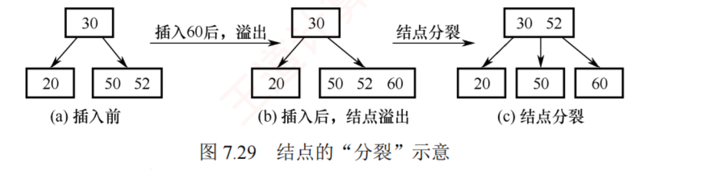
图 7.29 3 阶 B 树（每结点最多 2 个关键字）：插入 60 后 [50 52 60] 溢出，中间关键字 52 被提升到父结点 ，原结点与新结点各留 1 个 ⟹ 根变成 [30 52]。
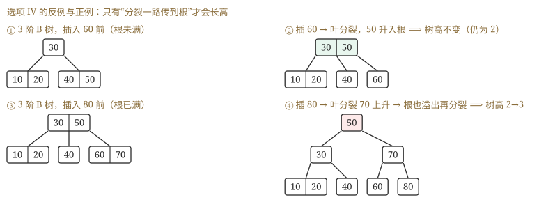
补图（我做第 3 题时画的四面板对照）："插入引起分裂"不等于"树长高" 。只有分裂一路传到根、把根也劈开 时，高度才 +1；若父结点还有空位，分裂就在中途被吸收掉了。
必记结论 ★ · B 树"从根上面长、从根上面塌"
知识串联 · 「分裂 / 合并」在 OS 内存管理里叫伙伴系统
→ OS ch3 伙伴系统（buddy system） ：分配时把大块对半分裂 直到够用，回收时把相邻的两个伙伴合并 成大块——与 B 树的"撑破就分裂、亏空就合并"是同一套动作 ，连"合并可能向上连锁"都一样。→ OS ch3 动态分区分配 回收空闲区时也要判"前邻 / 后邻空不空"来决定合不合并，与 B 树删除时"先看兄弟够不够借"的判断结构完全同构 。→ 数构 ch7 · 7.3 而 AVL 的旋转 是另一条路：B 树靠"改变结点的胖瘦"维持平衡，AVL 靠"改变结点的父子关系"维持平衡 ——同一个目标（高度有界），两种完全不同的手段。一句话记牢 ："局部撑破 → 向上传播 → 传到顶就整体升一级" ，这条链在 B 树（长高）、伙伴系统（合并成更大块）、进位加法（组原 ch2）里是同一个模式。
我的补讲 ★ · 分裂只有一个数要记准：上升第 ⌈m/2⌉ 个（三个阶的实例）
书上说 ：从第 ⌈m/2⌉ 个关键字处分裂，中间那个提升到父结点。
潜台词是 ：
这是全章唯一需要精确到"第几个"的规则 ，偶数阶最容易手滑。
更好数的等价说法：左边留 ⌈m/2⌉ − 1 个，剩下的往右。
m 溢出时有几个关键字 上升第几个 左边留 右边留 3 3 第 2 个（正中间） 1 1 4 4 第 2 个（偏左 ！） 1 2 5 5 第 3 个（正中间） 2 2
2020 真题（4 阶，插 5,6,9,13,8,2,12,15） 全程只发生两次分裂——
插 13 时 [5 6 9 13] 溢出、上升第 2 个 6；插 12 时 [8 9 12 13] 溢出、上升第 2 个 9 ⟹ 根 =
[6, 9] 。
🐍 程序逐步复算并每步跑定义校验器，与书答逐字吻合。
⚠️
干扰项 C（8,13）与 D（9,12）正是"上升第 3 个"的产物 ——4 阶这种偶数阶最常见的手滑。
⚠️
最后插入的 15 完全没有影响根 ：[12 13] 加上 15 变成 3 个，恰好不溢出（4 阶上限是 3）。
出题人把它放在最后，就是等着你多裂一次——数到 m−1 个就停手。
📌
本题只问根，可以不画完整棵树 ：只有"分裂"才会往根里塞东西，
数一数发生几次分裂，就知道根里有几个关键字。
我的补讲 ★ · 插入的三笔账：读 h 次、写 2h+1 次、新结点 h+1 个（7.4-11 的 C 与 D 差就差在这）
书上说 ：最坏情况下读 / 写磁盘共 3h+1 次。
潜台词是 ：
"新结点个数"与"写盘次数"是两个不同的数 ，题干那句"新结点是指新产生的结点"就是在提醒这件事。
所以能考 ：把最坏情况（从叶到根每层都满、一路裂到底）逐笔记账——
读盘：查找插入位置，从根到叶 h 个结点 = h 次读
分裂：h 次分裂，每次把 1 个结点拆成 2 个（都要写盘）= 2h 次写
根裂开后还要写 1 个新根 = 1 次写
⟹ 写 2h+1、读 h、合计 3h+1 （D 对）
⟹ 新结点：h 个"右半边" + 1 个新根 = h+1 （C 对）
⚠️ 左半边是"旧结点被改写"——要算写盘，不算新结点
A 与 B 是一对单向蕴含，408 最爱在这里下刀 ：
长高 ⟹ 一定裂到根（A 对）；裂了 ⟹ 一定长高（B 错）。
🐍 反例：3 阶 B 树 根 [30]、孩子 [10 20] 与 [40 50]，插入 60 后 [40 50 60] 溢出分裂，
50 升入尚未满的根 ⟹ 根变 [30 50]，树高仍是 2 。
⚠️
读到"一定"两个字先反问一句"反过来呢" ——这一条同时解决 7.4-3 的 Ⅳ、7.4-11 的 B、
2023 真题的 Ⅰ 三处同源考点：
"插入引起分裂 ⟹ 树高一定变为 h+1" 是错的，"插入可能 增加树的高度" 才是对的。
长高只有一条路径：分裂一路传到根 ⟹ 高度 +1；降低也只有一条路径：合并吃空了根 ⟹ 高度 −1。
所以
B 树永远是从顶上生长的 ——这与 BST / AVL "从叶子往下长"正好相反，也正是它能保证"所有叶结点在同一层"的原因。
这一句同时解决第 3 题的 Ⅳ、第 11 题的 B、2023 真题的 Ⅰ
三处同源考点 ：
"插入引起分裂 ⟹ 树高一定变为 h+1" 是错的，"插入可能增加树的高度" 才是对的。
4. 删除
删除比插入更复杂，删完必须保证每个结点的关键字数不少于下限 ⌈m/2⌉ − 1 ，否则要靠借位 或合并 恢复。
① 被删关键字 k 不在终端结点中 ：用 k 的前驱（或后继）k′ 替代——k 左侧子树中"最右下"的元素，或右侧子树中"最左下"的元素——然后转为在终端结点中删除 k′。
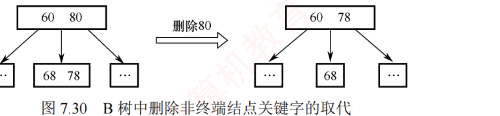
图 7.30 4 阶 B 树中删除 80：用其前驱 78 替代，问题转化为"在终端结点中删除 78"。
② 被删关键字在终端结点中 ，分三种情况：
直接删除 ：所在结点删除前的关键字数 ≥ ⌈m/2⌉ ⟹ 删完仍合法，直接删。兄弟够借（父子换位法） ：所在结点删除前的关键字数 = ⌈m/2⌉ − 1 ，且相邻的右（或左）兄弟的关键字数 ≥ ⌈m/2⌉ ⟹ 父结点的分隔关键字下移 到当前结点，兄弟的最小（最大）关键字上移 到父结点原位置。兄弟不够借（合并） ：所在结点与其左右兄弟的关键字数都是 ⌈m/2⌉ − 1 ⟹ 把该结点、其中一个兄弟、以及父结点中分隔它们的关键字合并成一个新结点 。
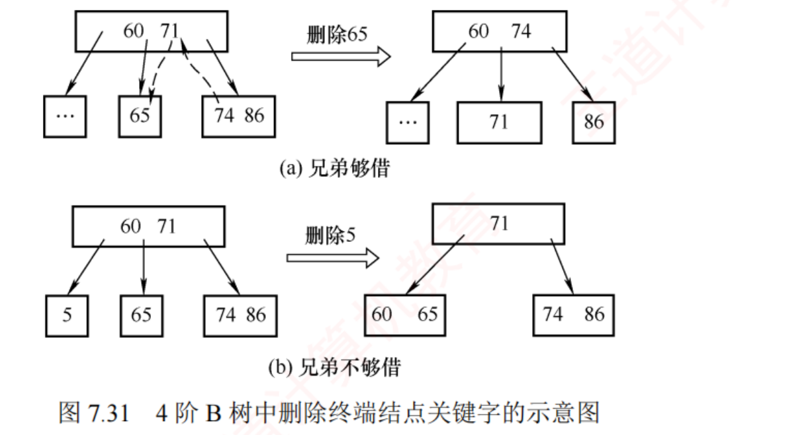
图 7.31 (a) 兄弟够借 ：删 65 ⟹ 父中的 71 下移顶替 65，右兄弟的最小关键字 74 上移到父中原 71 的位置。(b) 兄弟不够借 ：删 5 ⟹ 把父中的 60 与左右两个子结点合并成一个新结点。
合并会使父结点的关键字数减 1 ：若父是根且关键字数减到 0（根原本只有 1 个关键字、2 棵子树），则直接删掉根，合并后的新结点成为新根，树高降 1 ；若父不是根且关键字数减到 ⌈m/2⌉ − 2，则对父继续借位或合并，可能一路向上递归 。
陷阱 ★ · B 树删除是多解的，考场上别急着说"答案唯一"
知识串联 · 「多路分支」：从二叉到 m 叉，四科各有一次同样的跳跃
B 树把 BST 的"二路分支"改成"m 路分支"，高度从 log₂n 掉到 logm n。同一种"提高分支度换低层数"的跳跃：→ 组原 ch5 多路选择器 MUX ：一次从 m 路里选一路，比 log₂m 级二路选择快；→ 组原 ch4 扩展操作码 也是在"分支度"与"码长"之间取舍。→ OS ch3 多级页表 vs 单级页表 ：级数越多层数越深、访存次数越多，所以要靠"加大每级页表项数"（= 加大分支度）来压级数——与"加大 B 树的阶"一模一样 。→ 网络 ch4 路由表的多分支查找 、多播树 。一句话记牢 ：层数 = log分支度 (总量) ——想减层，只能加分支度；而分支度上限由"一次能读多少"（磁盘块 / 寄存器宽度 / 页表项数）决定。
我的补讲 ★ · 「借」为什么必须父子换位（2012 真题的动作要走两步，不是一步）
书上说 ：父结点的分隔关键字下移、兄弟的最大（最小）关键字上移。潜台词是 ：这是两步，不是"把兄弟的关键字直接搬过来"一步 。
为什么不能直接搬 ：B 树要求"父结点的关键字必须夹在左右子树之间"。以 2012 真题为例——若把左兄弟的 62 直接放进右边的空结点，就出现 62 在父结点 65 的右子树里却小于 65 ，直接违反区间约束。让 62 顶替父位、让 65 落到右边，区间关系才成立。 口诀：借兄弟要"转一手"——兄弟的极值上位当父，老父下岗去填坑。 借左兄弟就取它的最大 值，借右兄弟就取它的最小 值。2012 真题 ：删 78 前 父 [55 65]、孩子 [47] [60 62] [78] ⟹ 78 删掉后该结点 0 个 < 下限 1 ⟹ 左兄弟 [60 62] 有 2 个够借 ⟹ 62 ↑ 上位、65 ↓ 下移 ⟹ 父 [55 62]、最右叶 = [65] 。
🐍 程序执行 delete(78) 后跑定义校验器全过，最右叶结点确为 [65]。3 阶 B 树的下限只有 1 个关键字，所以"删一个就亏空"发生得极频繁 ——3 阶题目几乎每删必调整，删完先数一遍关键字个数 。
我的补讲 ★★ · 2022 那道"不可能是"：先用 30 秒的秒杀法，再抽空验一两条
书上说 ：删除时用前驱或后继替代，然后借或并。潜台词是 ：删除的自由度有三重——用前驱还是后继 × 借还是并 × 找左兄弟还是右兄弟 ，所以删除题天然多解 ，看到"不可能 是……"就该预感到要枚举。① 用前驱 110 顶上 ⟹ [100] 亏空 ⟹ 左兄弟 [70 80 85] 够借 ⟹ 85 上位、90 下移 ⟹ 根 [60 85 110 350] = 选项 C ② 用后继 280 顶上 ⟹ [300] 亏空、左右兄弟都只有 2 个不够借 ⟹ 与左兄弟 [100 110] + 280 合并 ⟹ 根 [60 90 350] = 选项 B ③ 同 ② 但与右兄弟 [400 500] + 350 合并 ⟹ 根 [60 90 280] = 选项 A ⟹ (60, 90, 110, 350) 在任何一条走法下都不出现，选 D。 但考场上不要真的推三遍（要五分钟以上），用这条秒杀法（30 秒） ：根里相邻两个关键字夹出的那棵子树，必须装得下 ≥ ⌈m/2⌉−1 个关键字。
选项 D 的根 [60, 90, 110, 350] 里，90 与 110 之间只能放原树里 90~110 之间的关键字，而那里只有 100 一个 ，5 阶非根结点至少要 2 个 ⟹ 违规 ⟹ D 不可能。秒杀法只在"选项给的是根序列"时好使 ，别指望它通吃所有删除题。合并永远是"三合一" ：亏空结点 + 一个兄弟 + 父结点里夹在它俩中间的那个关键字 。初学最容易只并两个（把父的那个关键字忘掉），结果关键字凭空丢失——数一数总关键字数是最快的自查 。
我的补讲 ★ · 7.4-综2 第 ⑤ 步是全章最硬的一步：一次删除引发两次合并、树高降 1
书上说 ：合并会使父结点关键字数减 1，若父不是根且跌破下限则继续向上递归。
潜台词是 ：
"递归"到底长什么样，只有把中间态写出来才看得见 ——而 7.4-综2 的最后一步恰好演了一遍完整的连锁。
删前 根[30 50] ─ [20] [40] [90] ─ [8] [25] [35] [45] [80] [100]
删 80 [80] 删空 → 唯一的兄弟 [100] 只有 1 个，不够借 ⟹ 合并
[空] + 父的 90 + [100] ⟹ [90 100]
⚠️ 父结点被抽走 90 后变成【空】！ ← 第一次合并的副作用
父([空]) 的兄弟 [20]、[40] 也都只有 1 个 ⟹ 继续合并
[40] + 根的 50 + [空] ⟹ [40 50]
根被抽走 50 后只剩 [30] ← 第二次合并
删后 根[30] ─ [20] [40 50] ─ [8] [25] [35] [45] [90 100] 树高 3 → 2
🐍 程序按题图逐步执行 插90 / 插25 / 插45 / 删60 / 删80，每步跑定义校验器，
五步结果与书答逐字一致 ；另把第 ⑤ 步的合并方向改成"优先右兄弟"重跑，
结果完全相同（此处两条路殊途同归） 。
⚠️
"合并每发生一次，上一层就掉一个关键字，掉到根被吃空，树就矮一层" ——这与插入侧的"分裂一路传到根才长高"完全对称。
B 树永远是从顶上生长、从顶上塌陷的，这也正是"所有叶结点在同一层"的原因。
⚠️
删完一定要重新数每个结点的关键字个数 ：3 阶下限是 1，
出现 0 个就还没调完 。本题第 ⑤ 步中间态出现过两次"0 个"，很多人调完第一次就收工了。
删除的自由度有三重：
用前驱还是后继 × 借还是并 × 找左兄弟还是右兄弟 。
2022 真题（5 阶 B 树删 260）我把四条组合都跑了一遍，得到三种不同的根 ——所以题目问的是"
不可能 是 T₁ 根结点关键字序列的是"，D 在四条路径下都不出现。
做这类题的正确姿势：不要只推一种走法就去对选项，而是先确认"选项里哪个是所有走法都产生不了的"。
7.4.2 B+树的基本概念
📄 p.308–309
考点追踪：B+树的应用场合（2017）；B 树和 B+树的差异分析（2016）
B+树是为满足数据库系统 高效检索需求而设计的一种 B 树变体。一棵 m 阶 B+树满足：① 每个分支结点最多 m 棵子树；② 非叶根结点至少 2 棵子树，其余分支结点至少 ⌈m/2⌉ 棵子树；③ 每个分支结点的关键字个数等于其子树个数 ；④ 所有关键字及其记录指针都存储在叶结点中 ，叶内升序排列，相邻叶结点用指针按关键字顺序链接 ；⑤ 所有分支结点（可视为索引的索引）仅含用于引导查找的关键字（通常是对应子结点中关键字的最大值 ）与指针。
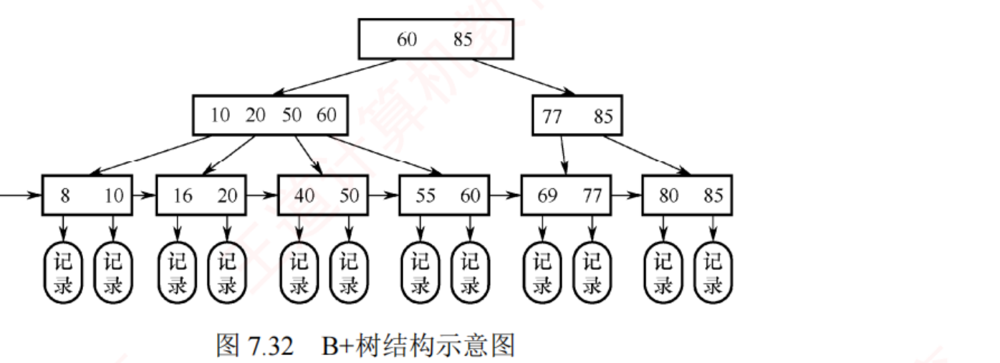
图 7.32 一棵 4 阶 B+树。分支结点中的关键字是其子树中最大关键字的副本 （60、85 在下层重复出现）；叶结点挂着真正的"记录"，并用指针横向串成有序链表 ；最左侧还有一个指向最小关键字叶结点的头指针 。
m 阶 B+树与 m 阶 B 树的五点差异
知识串联 ★ · B+树的叶链 = OS 与网络里的「有序链表 + 顺序扫描」
B+树把全部关键字放在叶结点并横向串成一条有序链 ，于是"定位一次 + 顺链扫描"就能做范围查询。这条链在别科的同族：→ OS ch4 索引文件 / 索引顺序文件 ：索引项指向数据块，数据块之间按关键字有序——B+树就是它的多级版 ；→ OS ch4 空闲盘块链 也是"只能顺着走"的一条链。→ OS ch3 空闲分区链按地址递增排列 （首次适应）——顺链扫描找第一个够大的，与"顺叶链找第一个 ≥ x 的关键字"动作相同。→ 网络 ch4 ARP 缓存表 / 路由表的顺序扫描 ；→ 数构 ch7 · 7.5 拉链法的同义词链 也是链，但它不保证有序 ，所以散列表做不了范围查询。一句话记牢 ："能不能做范围查询"只看一件事——数据在物理上是不是按序串起来的 。这也是为什么散列表（O(1) 但无序）在数据库里只能做等值索引，B+树才能做 ORDER BY 与 BETWEEN。
知识串联 · 「关键字数 = 子树数 −1 还是 = 子树数」的一般化：分界点与区间的关系
B 树里 n 个关键字把区间切成 n+1 段（每段一棵子树），所以子树数 = 关键字数 + 1 ；B+树把关键字当作每棵子树的"最大值副本" ，一个关键字管一棵子树，所以子树数 = 关键字数 。差别只在"关键字是分界点 还是代表值 "。 → 网络 ch4 子网划分 ：n 个划分点把地址空间切成 n+1 段（与 B 树同构）；而路由表里每条项代表一个网段 （与 B+树同构）。→ 数构 ch5 哈夫曼树 ：n 个叶结点、n−1 个内部结点——又是"分界点 vs 代表值"这类计数关系的一个变体。→ 组原 ch3 Cache 组数与组内行数 ：同样要分清"数分界还是数格子"。一句话记牢 ：看到"m 个东西把某空间分成几份"，先问一句"给的是分界 还是份 " ——差一个 1 的错误，本章至少能骗到三道题（7.4-1 的分家门、7.4-5 的 n+1、B+树的五点差异第一条）。
对比项 m 阶 B+树 m 阶 B 树 子树数量 n 个关键字 ⟹ 恰含 n 棵子树 n 个关键字 ⟹ 含 n + 1 棵子树 关键字数范围 非根内部结点：⌈m/2⌉ ≤ n ≤ m （非叶根：2 ≤ n ≤ m） 非根内部结点：⌈m/2⌉ − 1 ≤ n ≤ m − 1 （根：1 ≤ n ≤ m − 1） 关键字存储位置 全部在叶结点；非叶结点的关键字是副本（通常为最大值） ，会在叶中重复出现 关键字仅出现一次 ，终端结点与其他结点互不重复 结点功能 叶结点含完整数据，非叶结点只起索引作用 ；结构紧凑 ⟹ 一个磁盘块装得下更多关键字 ⟹ 减少磁盘 I/O 每个结点都存数据 顺序查找 叶结点链成线性链表 ，天然支持范围查询与顺序遍历 不支持高效的顺序查找
必记结论 ★ · B+树的查找长度"恒等"，这是它区别于 B 树的最硬指标
我的补讲 ★ · B 树 vs B+树的题只有两种问法：「谁独有」和「谁在哪一步停」
书上说 ：五点差异。潜台词是 ：五条里只有一条是真正的分水岭（叶结点有没有链） ，其余四条都是它的推论或伴生；而真题的问法只有两类：问法一「B+树独有什么 / B 树不该有什么」 ——答案永远指向叶链 ：2009 真题 ：不符合 B 树定义的是"叶结点之间通过指针链接"（那是 B+树的身份证）；2016 真题 ：B+树不同于 B 树的是"能支持顺序查找 "（有链才能顺序扫）。2016 的干扰项 D「所有叶结点都在同一层上」是最容易误选的 ——那是两者共有 的性质 （B 树定义第 5 条就是它，也是 B 树"平衡"的定义方式）。做差异题先做减法：把四个选项挨个问一句"B 树有没有"，凡是 B 树也有的一律划掉。 问法二「查找在哪一步停」 ——B 树半路能停，B+树必须走到底 ：B 树 ：关键字只出现一次，可能就在根上 ⟹ 成功时不一定要走到最底层（7.4-13 的 A 对、2023 的 Ⅲ 错 ）；B+树 ：非叶结点里的关键字只是子树最大值的副本 ，撞见相等也不能停，必须下探到叶 ⟹ 每次查找都是一整条根到叶的路径 ⟹ 长度恒等于树高 （7.4-13 的 C 错、D 对）。40 次查找经过的结点数集合恒为 {3} 、100% 在叶结点命中 、顺链一次遍历即输出 1..40 的完整升序序列。"性能可预测"才是数据库选它的理由 ：每次查询的磁盘 I/O 次数一样（B 树运气好一次、运气差 h 次，抖动大）。2017 真题（适合用 B+树的是"关系数据库索引"）的三个卖点就是：非叶只存索引 ⟹ 树更矮 ⟹ I/O 更少；叶链 ⟹ 范围查询一次扫描；走到底 ⟹ 响应时间稳定。
我的补讲 ★ · 2017 那道题的四个场景：判"数据在哪、要不要范围查询"就够了
书上说 ：B+树更适用于文件索引和数据库索引。
潜台词是 ：
B+树的存在理由只有一个——数据在磁盘上、读一个结点就是一次 I/O 。凡是"数据在内存里"或"要纳秒级"的场景，B+树全无优势。
场景 数据在哪 要什么 实际用什么 A 编译器的词法分析 内存 模式识别 有穷自动机 DFA / 语法树 ✘B 关系数据库的索引 磁盘、量极大 范围查询 + 稳定响应 B+树 ✔（MySQL InnoDB）C 路由表快速查找 高速缓存 / 硬件 纳秒级的最长前缀匹配 Trie + 硬件查找表 ✘D 磁盘空闲块管理 内存中的元数据 要一块给一块 位图 / 空闲链表 ✘
⚠️
C 是最有迷惑力的 ：路由表确实要"快速查找"，但它做的是
最长前缀匹配 而不是精确 / 范围匹配——
→ 网络 ch4 看到"网络 / 路由"要立刻想到
Trie ，不是 B+树。
📌
"更适合"而非"只能" ：B 树同样可以做文件索引（7.4-12 的 D 项是对的），只是 B+树更省 I/O。
单选题按"更适合"取。
我的补讲 ★ · 2025 那道形态计数题：分配要算排列 不算组合，3 层那一支用"最少关键字"卡
书上说 ：按树高分类讨论。
潜台词是 ：
关键字互不相同 ⟹ 形状一旦确定，谁坐哪个格子由中序顺序唯一决定 ——所以"数树"就是"数形状"，这是第一步认知。
4 阶：每结点 1~3 个关键字（含根，因为 ⌈4/2⌉−1 = 1），k 个关键字带 k+1 棵子树，所有叶同层。
【2 层】根 r 个关键字，r+1 个孩子分掉 7−r 个，每个孩子 1~3 个：
r=1：2 个孩子分 6 个 ⟹ 只能 (3,3) 1 种
r=2：3 个孩子分 5 个 ⟹ (3,1,1)(1,3,1)(1,1,3)
(2,2,1)(2,1,2)(1,2,2) 6 种 ← 有序！
r=3：4 个孩子分 4 个 ⟹ 只能 (1,1,1,1) 1 种 小计 8
【3 层】一棵 2 层的 4 阶子树最少要 1+1+1 = 3 个关键字
根 r 个 ⟹ 至少 r + 3(r+1) 个 ⟹ r=1 时最少 1+6 = 7，恰好用完 1 种
r≥2 ⟹ 至少 2+9 = 11 > 7，不可能 小计 1
⟹ 合计 9 种
🐍 程序穷举全部合法的 4 阶 B 树形状（约束：根 1~3 个、非根 1~3 个、k 个关键字带 k+1 棵子树、所有叶同层），关键字总数 = 7 时
共 9 棵，其中 2 层 8 棵、3 层 1 棵 ，与分类计数逐项吻合。
⚠️⚠️
本题最大的分水岭：(3,1,1) 与 (1,3,1) 是两棵不同 的树 （胖孩子站的位置不一样，树形就不一样）。把 r=2 那行写成"两种分法"就会得到 4 种，总数掉到 6。
⚠️
别漏掉"4 阶非根结点最少 1 个关键字"这个宽松下限 （⌈4/2⌉−1 = 1）。若误按 2 个算（把 4 阶当 5 阶），答案会掉到 4 种左右。
📌
2025 是 B 树计数题的首次出现，但用的全是本节旧知识 （关键字数上下界 + 叶同层 + 子树数 = 关键字数 + 1）——
枚举顺序按"树高 → 根的关键字数 → 孩子分配"三层展开，不重不漏。
我的补讲 ★★ · 7.4-综3 是全章唯一的工程题：它回答"B 树的阶数是谁定的"
我的补讲 · B 树的"查找"其实分两段，考的一直是第一段
书上说 ：查找包含两个基本操作——① 在 B 树中定位目标结点（在磁盘上进行 ）；② 在结点内查找关键字（在内存中进行 ，可顺序也可折半）。潜台词是 ：这两段的代价差着 10⁶ 倍 ，所以本节所有题的答案都只与第一段（层数）有关。所以能考 ："B 树的查找效率取决于什么"——取决于树高 （= 磁盘存取次数），不是结点内比较了几次 。
这也解释了为什么 7.4-综3 里 267 阶的结点（一个结点里 266 个关键字！）完全不成问题——那 266 次比较全在内存里做，白送 。结点内可以折半查找 ，前提是"结点内关键字严格递增"（B 树定义第 4 条）——7.4-14 的 C 项"各结点内关键字均升序或降序排列"是对的 ，它正是结点内能折半的依据（"或降序"也放行：整棵树反向定义同样合法）。408 出选项时常混一个"看起来别扭但其实没错"的干扰项 （如这个"或降序"），别被它勾走 ——2009 那道题真正的错项是"叶结点之间通过指针链接"。
书上说 ：一个索引结点应取不超过但最接近一个磁盘页块的大小。
潜台词是 ：
B 树的阶数不是随便定的，是被硬件页块尺寸倒推 出来的 ——这一题把前面所有"B 树为什么能省 I/O"的定性说法变成了数字。
① 定阶 ：一个索引结点（= 一个 4000B 磁盘页块）里装什么？
m−1 个关键字 × 5B
m−1 个记录地址 × 5B ← 做文件索引才有这一项，最易漏
m 个子树指针 × 5B
1 个关键字计数 × 2B
⟹ [2(m−1) + m] × 5 + 2 ≤ 4000 ⟹ 15m ≤ 4008 ⟹ m = 267
验算：m=267 → 799×5+2 = 3997 ≤ 4000 ✔ ；m=268 → 802×5+2 = 4012 ✘
② 算索引页块 ：每个数据页块装 4000/200 =
20 个记录 ⟹ 2000 万记录占
100 万 个数据页块 ⟹
100 万个索引项 ；
一个索引结点最多装 m−1 =
266 项、最少 ⌈m/2⌉−1 =
133 项 ⟹
索引最少 1000000/266 = 3760 块、最多 1000000/133 = 7519 块 （都要向上取整）。
⟹
读懂这个结果比记住它重要 ：页块 4KB 就得到
267 阶 ⟹ 树极其扁平 ⟹
2000 万条记录只要三四层就能定位 ⟹ 三四次 I/O 。这就是 7.4-10 / 7.4-12 / 7.4-19 反复念叨的那件事的量化版。
⚠️
三个高频漏项 ：① 忘了 m−1 个"记录地址"（会解出 m ≤ 400 左右）；② 忘了那 2B 的计数字段；③
把索引项数当成 2000 万（记录数）而不是 100 万（页块数） ——题干"数据部分未按关键字有序排列"这句就是在告诉你
索引粒度是"块" 。
⚠️
两个除法的方向别弄反 ：每块装得越多 ⟹ 需要的块越少。
÷266 得最少、÷133 得最多。
📌
若改成 B+树 ：非叶结点里不用挂记录地址（只有关键字 + 子树指针），
一个块能装的关键字更多、树更矮 ——这正是数据库为什么选 B+树而不是 B 树的
算式级 解释。
背景 ⬜ · B+树的插入与删除 过程：考纲只要求"基本概念和性质"
考纲原文对二者的要求不同 ：B 树要掌握建立 / 插入 / 删除的操作过程，B+树仅要求掌握基本概念和性质 。十七年真题也印证了这一点——B+树只出过 2016（差异对比）与 2017（应用场合）两道纯概念 选择题。所以 B+树这一小节只需背两样 ：① 五点差异表 （尤其"关键字数 = 子树数"与"叶链"两条）；② 查找长度恒等 + 两个头指针 。
它的分裂、合并怎么做，不必学 （顺带记一句就够：B+树分支结点关键字数区间是 [⌈m/2⌉, m]，比 B 树两个端点都大 1，所以插入前 = m 才分裂、删除前 = ⌈m/2⌉ 才可能合并）。
背景 ⬜ · B 树的代码 ：一行都不用写
B 树 / B+树的插入删除实现要处理"结点内数组搬移 + 父指针维护 + 递归分裂"，代码量以百行计，
408 十七年没有、以后也不会考写 B 树代码 ——12 道真题全是选择题。
把时间全部投到"手推画图"上 ：会画建树全过程（7.4-综1）、会画插删五步（7.4-综2）、会用
查找四合一模拟器 的 B 树模块自测，本节就到顶了。
B+树的查找与 B 树基本类似，
唯一区别在于：即使在非叶结点中遇到与给定关键字相等的值，也不终止查找，而是继续向下直到叶结点。
⟹
无论查找成功与否，每次查找都对应一条从根到某个叶结点的完整路径 ⟹ 每次查找的长度都相等。 而
B 树查找成功时不一定要走到最底层 （可能在根就命中）。
⟹ B+树有
两个头指针 （一个指根、一个指最小关键字的叶结点），因此支持
两种查找方式 ：从最小关键字开始的顺序查找、从根开始的多路查找。
做题实证 ：我写了个最小 B+树实现验证第 12 / 13 / 18 / 19 题——40 个关键字的
查找经过的结点数集合恒为 {3} 、
成功查找 100% 落到叶结点 、
叶链一次遍历即输出升序 。
2017 真题问"适合用 B+树的场景"，答案是关系数据库的索引，理由就是这条顺序链。
7.5 散列表
我的补讲 ★★ · 这一节的题只有两条主线：「概念判断」与「建表算 ASL」
书上说 ：散列查找要掌握构造、冲突处理、成功与失败的 ASL。
潜台词是 ：31 道题看着零散，其实
只有两条主线，而两条主线各有一个"总开关" ：
· 概念线（约 20 道，含 2011 / 2014 / 2022 / 2025 四道真题） ——总开关是
「冲突」与「堆积」是两件事 ：冲突取决于
散列函数 （两个 key 算出同一地址），堆积取决于
冲突处理方法 （两条探测序列抢同一批格子）。四道真题全在这条线上打转。
· 计算线（约 11 道，含 2018 / 2019 / 2023 三道选择真题 + 2010 / 2024 两道综合真题） ——总开关是
「三个数各司其职」 ：
数 符号 管什么 2019 真题里的值 记录数 n ASL成功 的分母 ；α 的分子8 表长 m 探测回绕取模用它 ；α 的分母11 散列函数的模 p ASL失败 的分母 （失败的起点只可能是 0…p−1）7
⚠️⚠️
2019 那道题故意把三个数设成 8 / 11 / 7 互不相同，四个选项恰好是四种用错的产物 （见 7.5.4 节的干扰项溯源）。
本节所有计算题的第一个动作，就是把这三个数分别圈出来写在草稿纸最上面。
📌
本节还有两道综合真题（2010、2024） ，是全章仅有的三道综合真题里的两道——
7.6 节 把它们按"大题三层"完整写了一遍，并指出
它们是同一个模子 。
7.5.1 基本概念 7.5.2 散列函数的构造
📄 p.317–318
前面的线性表和树表查找，记录在表中的位置与其关键字之间不存在映射关系 ，效率取决于关键字比较的次数。散列函数 Hash(key) = Addr 把关键字直接映射到存储地址；两个以上不同关键字映射到同一地址称为冲突 ，这些关键字互称同义词 。理想情况下散列表查找的时间复杂度为 O(1)，与表中元素个数无关。
构造散列函数的三条要求 ：① 定义域必须包含全部关键字 ，值域取决于散列表大小；② 计算出的地址应尽可能均匀分布 在整个地址空间；③ 应尽量简单、计算快。
我的补讲 ★ · 三条要求是判定题 的判分表（7.5-综2 的四小问一格一格填）
书上说 ：定义域含全部关键字、值域落在表内、分布均匀、计算简单。
潜台词是 ：这三条是
分两级 的——
先判"能不能用"（硬要求），再判"好不好用"（软要求） ，7.5-综2 问的正是"能否当散列函数？若能，是不是好的？"
H(key) 值域合法？ 结果确定？ 分布均匀？ 结论 key / n ✘ （key=n² 时 H=n，越界）✔ — 不能 当散列函数1（常函数） ✔ ✔ ✘ 能当，但极烂 （退化成 O(n)）(key + random(n)) % n ✔ ✘ ✔ 不能 当散列函数key % p(n)（p 为不大于 n 的最大素数） ✔ ✔ ✔ 能当，且好 ✔
⚠️
第 3 项最值得想一想 ：它的分布其实
非常均匀 ，但
不确定性是致命伤 ——插入时算出 3、查找时算出 7，等于把记录扔进表里再也捞不回来。
"能不能用"与"好不好用"是两级判定，先过第一级。
📌
答题模板（每小问两句） ：第一句判"能 / 不能"并
指出违反了哪一条硬要求 ；第二句判"好 / 不好"并
说分布 。只写"能 / 不能"不给理由，按半分算。
我的补讲 ★ · 🐍 「p 取质数」不是玄学：同一批数据，取合数与取质数差三倍
书上说 ：除留余数法里 p 应取不超过表长且尽可能接近表长的质数 。潜台词是 ：取质数是为了打散关键字里潜在的公因子 ——若 p 与关键字有公因子 d，则所有 key 的地址都落在 d 的倍数上，表的 1−1/d 那部分全部闲置 。· H(key) = key % 1000（合数，与关键字有公因子 10） ：500 个关键字只落到 100 个不同的初始地址上 ⟹ ASL成功 = 3.000 ；· H(key) = key % 997（不大于表长的最大质数） ：500 个关键字落到 500 个不同地址，一次冲突都没有 ⟹ ASL成功 = 1.000 。α 与冲突处理方法完全相同，只换散列函数就差出三倍 。这就是 2022 真题把"散列函数"列为三因素之一的实证。"取最大"是为了把地址空间用满 （p 太小则表尾一片浪费）；"取质数"是为了均匀 。两个要求缺一不可。→ 组原 ch3 Cache 的行数 / 组数恰恰要取 2 的幂 （详见下面那块串联），两边的取模方向完全相反 ，别记串。
背景 ⬜ · 数字分析法与平方取中法：认得名字与一句话适用场合即可
四种构造方法里，408 真正会考的只有两种 ：直接定址法 （H = a·key + b，绝对不产生冲突 ——这句话是 7.5-17 的正解依据）与除留余数法 （H = key % p，几乎所有计算题都用它）。数字分析法 （选数码分布均匀的若干位，要求关键字集合已知且固定 ，集合一变就得重新设计）与平方取中法 （取 key² 的中间几位，每一位都参与 所以分布较均匀）——
十七年真题从未考过它们的计算 ，看一眼记住名字与那半句适用场合即可，不必练 。"不能笼统地说某种方法最优" （书上原话，这是判断题的常见落点）。
方法 形式 要点与适用场合 直接定址法 H(key) = key 或 a·key + b 计算最简单，绝对不产生冲突 ；适用于关键字分布基本连续 的情形，分布稀疏则浪费空间 除留余数法 H(key) = key % p 最简单也最常用 。p 取不超过表长 m 且尽可能接近 m 的质数 ；关键在于让不同关键字近似等概率地散开数字分析法 选数码分布均匀的若干数位 适用于关键字集合已知且固定 ；集合一变就得重新设计函数 平方取中法 取 key² 的中间几位 平方运算与关键字每一位都有关 ⟹ 分布较均匀；适用于各位取值不均或位数较少的关键字
在不同应用场景下各类散列函数的性能各异，因此不能笼统地说某种方法最优 。
知识串联 ★★ · 除留余数法 = 组原 Cache 的直接映射，一字不差
→ 组原 ch3 直接映射 Cache：Cache 行号 = 主存块号 % Cache 行数 ——这就是 H(key) = key % p ，两者是同一个式子。
由此四条性质可以整体搬过去：同义词 ⟺ 映射到同一 Cache 行的不同主存块 ；冲突 ⟺ Cache 的冲突失效（conflict miss） ；堆积 ⟺ 直接映射的"抖动" （两个块号相差恰好整数倍行数时反复互相踢出，命中率跌到 0）；组相联 ⟺ 分块查找 + 链地址法的混血 ：先算组号（除留余数），组内 并行比较 （相当于一条长度为路数的"链"）；全相联 ⟺ 没有散列函数，只能顺序 / 并行比较全部 ——正是本章 7.2.1 的顺序查找。但有一处方向完全相反，一定要分开记 ：散列表的模 p 要取质数 （求分布均匀）；Cache 的行数 / 组数要取 2 的幂 （求硬件能直接切位、零代价取模）。
两边的取舍不同是因为约束不同 ：散列表的关键字分布未知、必须打散；Cache 的"关键字"是地址，本来就连续均匀，取 2 的幂反而正好把连续地址均匀铺开 ，还白赚一个"取低位即取模"。
知识串联 · 「空间换时间」：散列表是这条枢纽上最纯粹的一个
散列表用 1 − α 那部分空地址 换掉了 log n 次比较，这是 408 里"空间换时间"最直白的一次。同一枢纽上的其他落点：→ 组原 ch3 Cache （用小容量高速存储换平均访问时间）、→ OS ch3 TLB / 快表 （用几十个表项换一次访存）；→ 网络 ch4 ARP 高速缓存 、→ 网络 ch6 DNS 缓存 / Web 缓存 （用本地存储换一个 RTT）；→ 数构 ch2 标记数组 （2018 真题那道"删除重复元素"用 O(n) 空间换 O(n) 时间）。一句话记牢 ：凡"空间换时间"的结构，都有一个刻画交易比例的参数 ——散列表是 α 、Cache 是命中率 、TLB 是快表命中率 ；参数一旦超过某个阈值，收益就急剧衰减 （α > 0.75 后 ASL 陡升，正是这条曲线）。
7.5.3 处理冲突的方法
📄 p.318–319
考点追踪：冲突处理方法的特点（2025）；堆积现象导致的结果（2014）；删除元素后的查找效率分析（2023）
任何散列函数都无法绝对避免冲突。 设 Hi 为第 i 次探测所得的地址，开放定址法 指散列表中的所有空闲地址都可用于存放任意关键字 （无论是否同义）：
Hi = ( H(key) + di ) % m （di 为第 i 次探测的增量，m 为散列表表长 ）
增量序列 di 特点 线性探测法 1, 2, …, m−1 冲突就看下一个单元，到表尾 m−1 就回绕到 0 。只要表未满必能找到空位 。⚠️ 极易引发聚集（堆积） 平方探测法 1², −1², 2², −2², …, k², −k² 表长 m 必须是形如 4k+3 的素数 。能有效避免堆积，但无法探测表中所有位置，至少可覆盖一半的地址空间 双散列法 i · H₂(key) 用两个散列函数：Hi = (H(key) + i·H₂(key)) % m，H₀ = H(key) % m 伪随机序列法 第 i 个伪随机数 增量由伪随机数生成器产生
陷阱 ★★ · 开放定址法不能物理删除（2023 真题就靠这一条区分对错选项）
知识串联 ★ · 「删除标记（墓碑）」：三科都不敢真删
开放定址法删除只能打标记，因为真删会截断别人的查找路径 。"只做标记、不真删"这一手在别科同样常见：→ OS ch4 文件删除只是把目录项置无效、把盘块在位图里置 0，数据本身还在盘上 （这正是数据恢复软件能工作的原因）；索引结点的链接计数减到 0 才真正回收 。→ OS ch3 页表项的存在位置 0 （页还在外存，只是"标记为不在内存"）。→ 网络 ch4 路由表项的老化计时器 ：超时的项先标记再删除；→ 网络 ch5 TCP 的 TIME_WAIT ：连接已结束却要占着 2MSL，防止旧报文干扰新连接——与"墓碑不能立刻清"是同一种顾虑 。一句话记牢 ：凡是"别人可能正沿着我走"的位置，就不能直接抹掉，只能先降级成一个标记 ；代价是标记会累积，最终都要靠一次"整理 / 重建"来回收（散列表 rehash、文件系统碎片整理、路由表刷新）。
我的补讲 ★★ · 不能物理删除的根 ：查找路径 = 当初的插入路径，一格都不能少
书上说 ：物理删除会截断其他同义词的查找路径。
潜台词是 ：
开放定址法的立身之本就是"查找时走的那串格子，与当初插入时走的那串格子逐格重合" ——
正因为重合，"撞到空位就判失败"才是对的；也正因为重合，
路上任何一格被清空，后面的人就永远找不到了 。
最小反例（表长 7，H = key % 7，线性探测） ：
插入 a=8（H=1，占地址 1）、b=15（H=1，冲突 → 占地址 2）
地址 0 1 2 3 …
8 15
物理删除 8 ⟹ 地址 1 变空
地址 0 1 2 3 …
空 15
再查 15：H(15)=1 → 地址 1 是空 → 判定"查找失败"
⟹ 15 明明还在表里，却永远找不到了 ✘
🐍 程序对拍：物理删除后查 15 返回"失败"；
改成打删除标记后，地址 1 是标记 ⟹ 继续走 ⟹ 地址 2 命中 ✔
删除标记的两条规则要分开记 ：
查找时遇到标记要继续 往后走 （它只是中转站）；
插入时遇到标记可以直接占用 （那格实际是空的）。
⟹ 判定失败的条件从"遇到空位"收紧为"
遇到从未被使用过的空位 "。
⚠️
副作用要答出来才完整 （书上注释框专门写了）：多次删除后散列表
看似已满、实际有大量位置未被利用 ，最终只能整表重建（rehash）。
⚠️
拉链法可以物理删除 ：它的查找路径是"一条链"，摘掉一个结点链还是连着的——这就是"链地址法特别适合频繁插入删除"的技术原因。
我的补讲 ★ · 2023 真题：两种删除口径各算一遍，答案就在选项里对号入座
书上说 ：应做删除标记、实现逻辑删除。
潜台词是 ：命题人
把"正确做法"与"错误做法"的两个结果并排放进了选项 ——选错的那个就等于承认自己会物理删除。
2023 真题 （表长 5、H(k) = (k+4) % 5、线性探测；插 2022, 12, 25 后删 25）：
H(2022) = 2026%5 = 1 → 地址 1 H(12) = 16%5 = 1 → 冲突 → 地址 2
H(25) = 29%5 = 4 → 地址 4 删 25 ⟹ 地址 4 打【删除标记】，不是清空
地址 0 1 2 3 4
内容 空 2022 12 空 [已删]
失败代价 1 3 2 1 2
↑ 4(标记，继续) → 0(空)，共 2 次
ASL失败 = (1+3+2+1+2)/5 = 9/5 = 1.8 ✔ 选 C
🐍 两种口径对跑：
逻辑删除（正确） 代价 [1,3,2,1,2] ⟹
1.8 ；
物理删除（错误） 代价 [1,3,2,1,
1 ] ⟹
1.6 = 干扰项 B 。
⚠️ 本题的分母是 5——
H(k) = (k+4)%5 的值域是 0~4，恰好等于表长，三个数碰巧相同 ，不像 2019 那题会打架。
但写法上仍要按"分母 = mod 的模"来，别养成"分母就是表长"的错习惯。
采用开放定址法时
不能直接物理删除表中已有元素 ，否则会
截断其他同义词的查找路径 （查找时碰到空地址就判失败）。正确做法是给被删位置打上
删除标记 ，实现逻辑删除；
查找时遇到删除标记要继续往后查 。
副作用：多次删除后散列表
看似已满，实际有许多位置未被利用 。
2023 真题的干扰项 B（1.6）正是"真的把元素物理删掉"算出来的结果 ⟹
选 B 就等于承认自己会物理删除。 正确答案 1.8 来自"删除标记仍占位、查找要越过它"。
⚠️
拉链法则可以物理删除 ——删链表结点不会打断任何人的查找路径。
堆积（聚集）到底是什么
知识串联 ★ · 「堆积」在组原叫抖动，在 OS 也叫抖动，成因完全一样
堆积的本质是：不同来源的请求被映射到同一小片资源上，互相挤占，使每个请求的代价被别人拖长 。三科各有一个同名现象：→ 组原 ch3 直接映射 Cache 的抖动 ：两个块号相差恰好整数倍行数时反复互相踢出，命中率跌到 0 ——它与线性探测的堆积是同一种病 （映射太"死"，冲突之后没有回旋余地）。
治法也同构 ：Cache 提高相联度（组相联 ⟹ 组内有多路可放）≈ 散列表换双散列 / 拉链法（同义词有各自的去处）。→ OS ch3 抖动（thrashing） ：进程数太多、每个的驻留集太小，刚换出的页立刻又要用——那是"装填因子过高"版的堆积 。→ 网络 ch5 拥塞 ：多条流抢同一条链路的缓冲区，排队时延对所有人一起恶化。一句话记牢 ：堆积 / 抖动 / 拥塞是同一个词的三种叫法 ——都是"共享资源被映射得太集中"，都靠"给冲突者更多去处"或"降低负载"来治 。
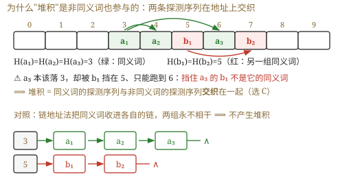
补图（我做第 4 题时画的）：堆积 = 同义词的探测序列与非同义词的探测序列交织 在一起 ，大家争夺同一串地址，使查找要走很长的探测距离。右侧是链地址法的对照——同义词各自成链，互不干扰，所以链地址法根本不产生堆积。
必记结论 ★ · 关于堆积的四句话（2014、2011、2025 三年都在这里出题）
我的补讲 ★ · 「冲突」与「堆积」的因果链，四道真题按顺序挂在链上
书上说 ：堆积是探测序列交织造成的。
潜台词是 ：这条链有
严格的先后 ，而四道真题恰好一人守一环——
把链画出来，四道题一起解决 ：
散列函数不好 ┐
冲突处理方法不当 ┼─→ 【堆积】 ─→ 平均查找长度 ↑ ─→ 效率 ↓
装填因子 α 太大 ┘
↑ 三因素（2022 真题：三者都影响 ASL）
↑ 主因只有一个（7.5-9：怪冲突处理方法）
↑ 堆积只直接影响它（2014 真题）
↑ 怎么提高（2011 真题：Ⅱ、Ⅲ 对，Ⅰ 方向反了）
· 2014 真题 问"受堆积
直接 影响的是谁"——答
ASL 。理由是
因果链上游的东西不会被下游影响 ：存储效率（= 装填因子）、散列函数、装填因子三项
全在堆积的上游 ，纹丝不动。
📌
送分点：题里的"存储效率"与"装填因子"定义相同 （书答明说）——
选择题里出现两个等价选项，它们必然同时错 ，四选一当场压成二选一。
· 7.5-9 问"聚集的
主因 "——答
冲突处理方法 。α 大只是"放大器"：把 α 压到很小，线性探测照样会形成小簇；
换成双散列，即使 α = 0.9 也不会形成长链 。
换一个变量能根治的，才是主因。
· 2011 与 2022 是同一个 α 的两个相反答案 ：2022 问"是不是影响因素"⟹ α 是（选 D，三者全选）；2011 问"能不能
提高 效率"⟹ "
增大 装填因子"方向反了（选 D，仅 Ⅱ、Ⅲ）。
⚠️ 判断题的关键永远是"问的是有没有影响，还是往哪个方向调"。
🐍 控制变量实测（m = 1009、α = 0.75、散列函数与关键字完全相同，
只换冲突处理方法 ）：
线性探测 2.431 / 平方探测 1.950 / 双散列 1.842 （双散列理论值 −ln(1−α)/α = 1.848）——
n、m、α、散列函数四个量全都锁死不动，光换方法就把 ASL 拉开 32%，直接坐实"主因是冲突处理方法"。
我的补讲 ★ · 「同义词一定相邻吗 / 相邻的一定是同义词吗」——两个方向都是"否"
书上说 ：堆积是同义词与非同义词的探测序列交织。潜台词是 ："是同义词"与"地址相邻"在开放定址法里是完全独立 的两件事 ，而 7.5-5 的 Ⅱ 与 7.5-12 的 ② 恰好从两个方向各考了一次：· 方向一：同义词一定相邻吗？否。 🐍 反例（表长 7，H = key%7）：按 a(H=1) → c(H=2) → b(H=1) 的顺序插入 ⟹ 表为 [_, a, c, b, _, _, _]，同义词 a 与 b 在地址 1 和 3，中间夹着非同义词 c 。
换成 a → b → c 的顺序插，它们又相邻了 ——同一批关键字、两种插入序、两种结论，"一定"二字当场失效 。· 方向二：探测路径上的关键字一定是同义词吗？否 （7.5-12 的 ②）。反过来链地址法就一定是 （地址 i 的链上只可能挂 H = i 的记录，纯血同义词队 ）——这正是"链地址法根本不产生堆积"的原因。7.5-12 的 ② 措辞是"不一定 都是同义词"而不是"一定不是" ：运气好没被别人挤占时，线性探测路径上也可能全是同义词。C 项那个"一定都不是同义词"把话说死了，必错。 7.5-15（2018 真题的同源题）是这件事的活体样本 ：查 59 的四次探查里只有 25 是它的同义词 （59%17 = 8 = 25%17），26 和 8 都是被挤过来的"路人"——八号位这一小簇从 8 一直堵到 11。
我的补讲 · 线性探测的三条小性质（7.5-7 / 7.5-10 / 7.5-14 各考一条）
① 增量 di 取 1, 2, …, m−1，恰好不含 0 和 m （7.5-10）：d = 0 就是原地址（已占，无意义）、d = m 取模后又转回原地址。
所以"下一个空位"可以大于也可以小于 原散列地址（到表尾会回绕），但绝不等于原地址 ——选项 A"必须 ≥ 原地址"就死在回绕上。
这一条同时给出 2025 真题 A 项的依据：探测序列覆盖全表 ⟹ 只要表未满，线性探测一定能找到空位。 ② K 个同义词全部插入，总探测次数 = 1+2+…+K = K(K+1)/2 （7.5-7）。⚠️ 问的是"全部填进去一共探测多少次"（累加），不是"最后一个探测几次"（那才是 K）。
三个长得像的量要分清：建表总探测次数 K(K+1)/2 · 建成后 ASL成功 = (K+1)/2 · 最后一个关键字的查找长度 = K 。
2018 真题就是 K=3 的实例 ：22、43、15 全是同义词（%7 都等于 1）⟹ ASL = (3+1)/2 = 2 ，看出这一点可以不建表直接秒答。③ 两个模并存时一步都不能串 （7.5-14）：算初始地址用散列函数的模 p，算探测地址用表长 m 。
7.5-14 里 H(49) = 49 % 11 = 5 冲突 ⟹ H₁ = (5+1) % 14 = 6 …… ⟹ H₃ = 8 落位。
📌 为什么表长要比模大（14 > 11） ：mod 11 只产生 0~10 共 11 个初始地址，多出来的 11、12、13 三格是专门留给冲突者的缓冲区 （王道正文图 7.34 也是这个套路：12 个关键字、mod 13、表长 16）。
看到 m ≠ p，第一反应就是"这题在考失败 ASL 的分母"。
① 堆积由"非同义词之间 也发生冲突"造成 ——更准确的表述是
同义词与非同义词的探测序列交织 （2014 真题的正确理解）。
"同义词冲突"本身不等于堆积 ，否则链地址法也该有堆积了。
② 堆积的根因是"处理冲突的方法选得不好" ，不是元素太多、也不是散列函数不好（第 9 题）。
③ 堆积只 直接影响平均查找长度 （2014 真题答案）——对
存储效率、散列函数、装填因子都没有影响 。
④ 量化对照 （我跑的实验：m = 1009、α = 0.75、散列函数与关键字完全相同，只换冲突处理方法）：
线性探测 ASL = 2.431 / 平方探测 1.950 / 双散列 1.842 。
数字上看得见"平方探测确实缓解堆积"。
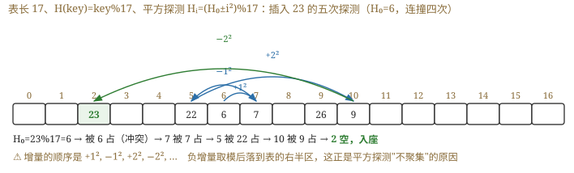
补图：平方探测 ±i² 的跳跃轨迹（比线性探测"跳得开"，这正是它不易堆积的原因）。
我的补讲 ★ · "表长要取 4k+3 型素数"这句话我用程序验了一遍（2025 真题 B 项的根）
书上只说"平方探测无法探测所有位置，至少能覆盖一半"。我写程序把可达格数数了出来：· 只用 +i²（不带负号）时，可达格数恰为 (m+1)/2 ：m = 7 → 4、11 → 6、17 → 9、19 → 10、23 → 12。刚好一半多一点，与书上"至少一半"吻合。 · 用 ±i² 时，只有 4k+3 型素数（7、11、19、23）能覆盖全表 ；m = 17（4k+1 型）只能到 9/17，m = 16（非素数）只有 7/16 。这就是"表长要取 4k+3 型素数"的实证。 · 构造出的反例 ：m = 11、已占住 {0,1,3,4,5,9} 六格（表没满，还空着五格 ），H₀ = 0 的新关键字用 +k² 永远插不进去 。2025 真题：A 对（线性探测只要表不满一定能找到空位）、B 错（二次探测不保证） ，C、D 也错（线性 / 二次探测处理的冲突既可能来自同义词，也可能来自非同义词 ）。
拉链法（链接法）
我的补讲 ★★ · 🐍 一条书上没有的硬结论：链地址法的两个 ASL 从未大于线性探测
书上说 （7.5-综3 的注释）：同一组关键字、同一散列函数，换个冲突处理方法，表结构与 ASL 全变。
潜台词是 ：书只给了
一个例子 （成功 21/8 = 2.625 对 13/8 = 1.625），并没说这是不是普遍规律。
🐍
所以我把它跑成了统计 ：随机取模 p ∈ {7,11,13,17,19,23,29}、表长 m ≥ p、装填因子随机，
同一批关键字、同一插入顺序 分别建线性探测表与拉链表，共
30 000 组 ——
比较 结果 链地址法 ASL成功 大于 线性探测的组数 0 组 两者 ASL成功 相等 14 613 组（48.7% ，多数是没发生冲突的情形） 链地址法严格更小 15 387 组（51.3% ） ASL失败 （空指针计 1 次口径）链地址 大于 线性探测 0 组 平均 ASL成功 线性探测 1.599 · 链地址法 1.243
⟹
结论：在同一散列函数、同一插入序列下，链地址法的成功与失败 ASL 从未 大于线性探测（零反例），约一半的情形严格更小。
原因就是"堆积" ——线性探测里非同义词会来抢格子，把某些关键字的查找长度拖得很长（7.5-综3 里 22 被拖到
8 次 ），而拉链法的每条链只装同义词。
⚠️
但别把这条当"拉链法全面更优" ：拉链法的代价是
指针空间 （每个记录多一个 next）和
缓存不友好 （链上结点散落在内存各处）。
408 只考 ASL，所以考场上"哪种 ASL 更小"可以放心答链地址法；工程上的取舍不是本章的事。
把散列到同一地址的所有同义词组织成一个链表 ，散列地址 i 的单元存放该同义词链表的头指针。查找、插入、删除都在相应链表上进行。拉链法特别适用于需要频繁插入和删除的场景。
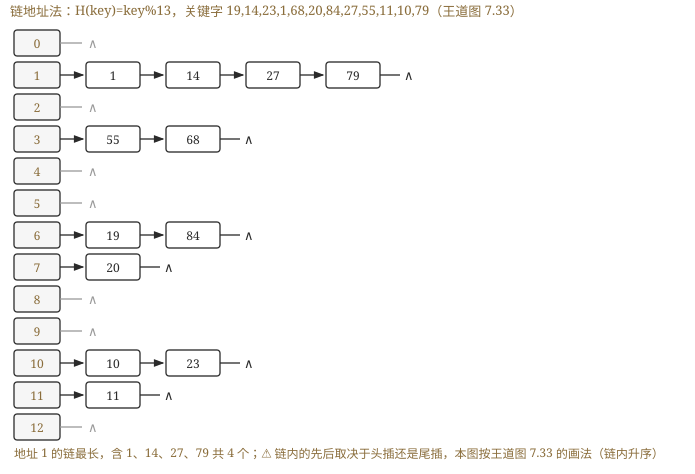
图 7.33（我重画的可读版）：关键字序列 {19,14,23,01,68,20,84,27,55,11,10,79}，H(key) = key % 13。地址 1 的链上有 01 → 14 → 27 → 79 共 4 个记录 （第 11 题问的就是这条链）。
7.5.4 散列查找及性能分析
📄 p.320–321
考点追踪：散列表的构造及查找效率分析（2010、2018、2019、2024）；影响查找效率的因素（2011、2022）
知识串联 · 散列表建表的"逐格记账"，与组原 / OS 的手算大题是同一套动作
本节所有计算题的动作是：把一张表画成一行格子 → 逐个对象安置 → 每格记下"花了几次" → 分类求和 ÷ 分母 。这套"逐格记账"在别科的大题里原样出现：→ OS ch3 页面置换算法的手算 （FIFO / LRU / 时钟）：画一行页框，逐个引用串安置，记"缺不缺页"，最后数缺页次数 ÷ 引用总数。→ 组原 ch3 Cache 命中率手算 ：画一行 Cache 行，逐个访存地址算行号、比 tag、记命中与否。连"算行号"的公式都与 H(key) = key % p 相同。 → OS ch5 磁盘调度 （FCFS / SSTF / SCAN）：逐个请求记移动距离，最后求和取平均。一句话记牢 ：这四类手算题的失分点完全一致——不是算术错，而是"表画错一格"或"分母取错" 。所以四科的应对也一致：先把表画出来、逐格留痕，别心算。
查找过程与构造过程基本一致：① 检查地址 Addr 处是否有记录——无记录则查找失败 ；有记录则比较，相等则成功，否则转 ②；② 按冲突处理方法算下一个探测地址，回到 ①。
书上的例子 （同一组关键字、同一散列函数 H(key) = key % 13，改用线性探测法 ，表长 16 ）：
地址 0 1 2 3 4 5 6 7 8 9 10 11 12 13 14 15 关键字 14 01 68 27 55 19 20 84 79 23 11 10 比较次数 1 2 1 4 3 1 1 3 9 1 1 3
查找 84：H(84) = 6，L[6] = 19 ≠ 84 冲突 → H₁ = 7，L[7] = 20 冲突 → H₂ = 8，命中，比较 3 次 。L[13] 为空 ⟹ 查找失败 。
ASL = (1×6 + 2 + 3×3 + 4 + 9) / 12 = 2.5
⚠️ 对同一关键字集合与相同的散列函数 ，不同的冲突处理方法会生成不同的散列表结构 ，从而 ASL 也不同（本例 2.5 与上面拉链法的结果不同，正体现了这一点）。
α = 表中记录数 n / 散列表长度 m ⟹ 散列表的 ASL 主要依赖于装填因子 α，而不直接依赖于 n 或 m
尽管散列表建立了关键字到地址的直接映射，但由于冲突的存在，查找仍需比较关键字，所以 ASL 仍是衡量散列表查找效率的核心指标 。
散列表的查找效率主要取决于三个因素：散列函数、冲突处理方法、装填因子 （2022 真题：三个全选）。
必记结论 ★★ · 失败 ASL 的分母是"散列函数的模"，不是表长、也不是记录数
知识串联 · 散列表"失败起点只有 p 个"，与判定树"失败出口 n+1 个"是同一件事
→ 数构 ch7 · 7.2 折半判定树的失败情形有 n+1 种（n 个关键字切出 n+1 个开区间）；
→ 数构 ch7 · 本节 散列表的失败情形有 p 种（散列函数把整个关键字空间压成了 p 个等价类 ，每类一个起点）。共同点 ：失败 ASL 的分母 = "失败情形的种数"，而种数由结构 决定，不由记录数决定。 → 组原 ch2 这其实就是等价类划分 ：除留余数法把整数按模 p 分成 p 个剩余类，同义词 = 同一剩余类里的关键字 ；
→ 组原 ch3 Cache 直接映射把主存块按模"行数"分类，同一类的块争同一行。一句话记牢 ："分母是几"这个问题，永远等价于"这个映射把空间分成了几个等价类" ——判定树是 n+1 个区间、散列表是 p 个剩余类、Cache 是"行数"个类。
我的补讲 ★★ · 2019 的四个选项 = 四种分母各错一次（🐍 逐个还原）
书上说 ：散列函数不可能计算出地址 7，因此只有 7 个起点。
潜台词是 ：
命题人把"用错分母"的每一种可能都做成了一个选项 ——这不是巧合，是设计。
🐍 我把同一张表换分母重算了一遍，四个选项全部对号入座：
算法 算式 结果 落在 正确 ：7 个起点（0~6），代价 [9,8,7,6,5,4,3]42 / 7 6 C ✔ 误用记录数 8 当分母 42 / 8 5.25 B ✘ 把地址 7 也当起点 （多算一条长 2 的路），分母仍是 7 44 / 7 6.29 D ✘ 误用表长 11 （11 个起点） 47 / 11 ≈ 4.27 接近 A（4）✘
三条铁律，缺一不可 ：
① 起点个数 = mod 的模 ；
② 每条路要一直走到第一个空位 才结束 ；
③ 撞上空位的那一次也算 一次比较 （所以起点 6 是 3 次而不是 2 次）。
⚠️
20 落在地址 7 是全题最容易忽略的一环 ：20 % 7 = 6 被 6 占 ⟹ 挤到 7。
地址 7 里虽然有记录，却永远不会成为失败查找的起点 （没有 key 能算出 7）——
它不当起点，但要被路过，所以每条路都被它拖长了一格 。
📌
2010 真题是同一条铁律的第一次出现 （王道答案里用"防止思维定式"六个字点名）：H(key) = (key×3) mod 7、表长 10 ⟹ 起点只有 0~6 ⟹ ASL
失败 = (3+2+1+2+1+5+4)/
7 =
18/7 。
🐍 同样换分母复算：误按表长 10 个起点得 24/10 = 2.4、10 个起点又除以记录数 7 得 24/7 ≈ 3.43——
三个数互不相同，分母选错就必错。
我的补讲 ★ · 装填因子 α 的"锚点表"：背四个数，一半的概念题不用算
知识串联 · 散列表是"计算式查找"的唯一代表，它换来的与失去的
换来的 ：把"比较 log n 次"换成"算一次地址"——→ 组原 ch3 这正是 Cache 地址映射由硬件一步算出 （不做任何比较）的原因；→ OS ch3 页表用页号直接下标寻址 ，比散列还纯粹（地址空间连续，连模都不用取）。失去的 ：顺序信息 （求不了最值 / 前驱后继 / 范围）与最坏情况的保证 （全同义词时退化成 O(n)）。
→ 网络 ch4 路由表需要"最长前缀匹配"这种带序关系的查询，所以它用 Trie 而不用散列 （2017 真题 C 项）。补上的第三条 ：散列表还失去了"可预测性" ——同一张表里有的关键字 1 次命中、有的 8 次（7.5-综3 里的 22）。
→ 数构 ch7 · 7.4 而 B+树恰恰以"每次查找长度相等"为卖点 ，两者的取舍正好相反。一句话记牢 ："平均最快"与"最坏可控"是两个不同的目标 ——散列表买的是前者，B+树 / AVL 买的是后者；题干里出现"稳定 / 可预测 / 最坏情况"就该排除散列表。
书上说 ：ASL 主要依赖装填因子 α，而不直接依赖 n 或 m。
潜台词是 ：
α 是唯一的自变量 ，那就应该把这条曲线上的几个点直接背下来。以线性探测的经典近似 ASL
成功 = ½(1 + 1/(1−α)) 为例：
α 0.2 0.5 0.75 0.8 0.9 ASL成功 （公式） 1.125 1.5 2.5 3.0 5.5 🐍 m=1009 实测 1.118 1.492 2.431 2.865 4.977
· 锚点就一个：α ≤ ½ ⟺ ASL ≤ 1.5 。
7.5-6 给了公式让你解不等式（½(1+1/(1−α)) ≤ 1.5 ⟹ α ≤ ½ ⟹ m ≥ 200/0.5 =
400 ），有了锚点连不等式都不用解。
· 工程上把 α 卡在 0.75 以内 就是因为过了这个点曲线开始陡峭（0.75 → 2.5，但 0.9 → 5.5）。
🐍
"只认 α、不认 n 和 m"的两组实测 ：
固定 α = 0.5，表长从 101 一路加到 4001（n 同步涨 40 倍），ASL 恒在 1.444 ~ 1.499 几乎纹丝不动 ；
固定 m = 1009 只改 α，ASL 从 1.118 一路涨到 4.977 。⟹ 这就是 7.5-8 选 C（"不直接依赖于 n"）、7.5-3 的 Ⅲ 错的数值证据。
⚠️
"至少能容纳多少个元素"问的是表长 m，不是记录数 n （7.5-6 的 n 已经给死是 200）。
看到"散列表能容纳"就换算成表长，看到"表中已有"才是 n。
我的补讲 ★ · 由 α 反推表长：两道题共用同一条链（2010 真题 + 7.5-综4）
书上说 ：α = n / m。潜台词是 ：这个式子三个量知二求一 ，而命题人最爱藏起来的恰恰是表长 m ——因为后面的建表全靠它。
所以能考 ：凡是题目给出 α 却不给表长，第一步一定是反推表长 ：· 2010 真题 ：n = 7、α = 0.7 ⟹ m = 7/0.7 = 10 （下标 0~9）⟹ 才能开始建表。· 7.5-综4 ：n = 11、α = 0.73 ⟹ N = 11/0.73 ≈ 15.07 ⟹ 表长取 15 ⟹ P = 不大于 15 的最大素数 = 13 （15 = 3×5 不是素数、14 不是、13 是）⟹ 散列函数 H(key) = key % 13。
这是一条三步链：α → 表长 → 素数 P → 散列函数 ，任何一步断了后面全废。7.5-综4 还留了一个漂亮的自查 ：按"只数关键字比较"的口径，所有地址的失败代价之和 = 所有链长之和 = 记录数 n ，所以 ASL失败 = n / P （本题 11/13）。
🐍 复算无误；换成"空指针也算一次"的口径则是 (n+P)/P = 24/13 。算完随手用这条对一下，比重数一遍快得多。 7.5-综4 的 12 号链为什么那么长 ：38、12、51、25 除以 13 的余数都是 12（12、25、38、51 是公差 13 的等差数列 ）——出题人是故意排的 ，它把 ASL成功 从 12/11 拉到 18/11，也让人看清"一条长链就能毁掉整张表"。
我的补讲 ★ · 散列表不 支持的四件事 —— 这才是"选结构"题真正的分界
知识串联 ★ · 拉链法的那条链，在 OS 与网络里到处都是
→ OS ch3 空闲分区链 / 空闲块链 ：同一"类"的对象串成一条链，要用就顺链找——与"同义词各自成链"结构相同。→ OS ch3 反置页表（inverted page table） 就是一张带链地址法的散列表 ：用"进程号 + 页号"做关键字散列到表项，冲突的挂链——本节学的东西在那里被原样使用 。→ 网络 ch4 ARP 缓存表 、→ 网络 ch3 交换机的 MAC 地址表 （工程实现几乎都是散列 + 链）。→ 数构 ch6 邻接表 ：也是"数组 + 一堆链"的同一副骨架（顶点数组相当于散列表的地址空间，边链相当于同义词链）。一句话记牢 ："数组定位 + 链表兜底"是工程上最常见的复合结构 ——数组给 O(1) 的定位，链表给无限的容量，代价是链一长就退化成顺序查找。
书上说 ：理想情况下散列表查找的时间复杂度为 O(1)。
潜台词是 ：这个 O(1) 是有代价的——
散列表把顺序信息整个丢掉了 。
所以能考 ：任何"既要……又要……"的选结构题，都靠这四条排除散列表：
① 求最大 / 最小值 ② 求某个关键字的前驱 / 后继 ③ 按序输出全部关键字 ④ 范围查询（找出 100~200 之间的全部记录）
——这四件事
恰好是 BST / AVL / B+树 的强项 （中序有序、叶链有序），也正是
2017 真题选 B+树做数据库索引 的理由。
7.5-2 的 B 项"查找表为有序表"之所以错，就是因为散列表恰恰不保留任何顺序。
⚠️
另外两句必须记准的措辞 ：
·
"理想情况下 O(1)"是对的，光秃秃的"O(1)"是错的 （7.5-8 的 B 项）——若表中记录全是某地址的同义词，
ASL 退化为 O(n) 。
·
"散列查找不需要关键字比较"是错的 （7.5-3 的 Ⅱ）——算出地址后
必须比一次 ，否则你怎么知道那格里躺的是不是它。
正确说法是"不需要一系列 关键字比较" ，差别在"一系列"三个字上。
·
"α < 1 就能避免冲突"是错的 （7.5-3 的 Ⅰ、7.5-17）：🐍 按生日问题精确计算，
10 个关键字散列到 100 000 个单元（α = 0.0001）仍有 0.045% 的概率发生冲突 ；进 1000 个单元则升到 4.41%。
"一定不会冲突"只有一种情况——直接定址法 H = a·key + b（线性、单射）。
这是全章
失分最集中的一条 ，2010、2019、2023 三年反复考：
ASL失败 的分母 = 散列函数 mod 后面的那个数 （因为查找失败的起点只可能落在 H(key) 的值域里），
不是表长 m，更不是记录数 n 。
·
2010 真题 ：H(key) = (key×3) mod 7，表长 10 ⟹ 起点只有 0~6 共
7 个 ⟹ ASL
失败 = (3+2+1+2+1+5+4)/
7 = 18/7。
·
2019 真题 ：H(key) = key % 7，表长 11 ⟹ 起点只有 0~6 共
7 个（
地址 7 永远算不出来，不能当起点 ）⟹ ASL
失败 = (9+8+7+6+5+4+3)/
7 =
6 。
干扰项溯源 （我把同一张表换分母重算了一遍）：2019 的
B(5.25) = 42/8 （误把记录数当分母）、
D(6.29) = 44/7 （把地址 7 也当起点算了长度、却仍除以 7）。
看到 5.25 和 6.29 就知道出题人在等谁。
必记结论 · 两个模并存时别混用（第 14 题的坑）
知识串联 · 「装填因子 α」在四科的同名量
α = n / m 衡量"这块空间被塞得多满"，而四科都有一个"越满越慢"的比值 ：→ OS ch3 内存利用率 ：分区分得越满，外部碎片越难利用、分配越慢；→ OS ch5 磁盘利用率 超过 80% 后文件碎片化急剧加重。→ 网络 ch3 信道利用率 U ；→ 网络 ch5 网络负载接近容量时排队时延趋于无穷 （拥塞控制要做的就是把负载压在拐点以下）。→ 组原 ch3 Cache 容量与命中率 ：也是一条先陡后平的曲线。一句话记牢 ：这类"利用率 → 代价"的曲线全都是非线性 的，在接近 1 时爆炸 （散列表 α = 0.9 时 ASL 已是 α = 0.5 时的 3.3 倍）。
所以工程上永远留余量 ——散列表留 25%、磁盘留 20%、网络留拥塞窗口。
题目里可能同时出现
两个模 ：
散列函数用 p（如 %11），探测回绕用表长 m（如 %14） 。
第 14 题：H(49) = 49 %
11 = 5 冲突 ⟹ H₁ = (5+1) %
14 = 6 冲突 ⟹ … ⟹ H₃ = 8 落位。
算初始地址用 p，算探测地址用 m，一步都不能串。
我的补讲 · 链地址法失败 ASL 的两种口径（书上自己就给了两个答案）
我的补讲 ★ · 7.5-综3 是本节母题：同一批数据、两种方法、四个 ASL 并排
书上说 ：对同一关键字集合与相同的散列函数，不同的冲突处理方法会生成不同的散列表结构。
潜台词是 ：
"不同"到底差多少，只有把四个数并排才看得见 。
7.5-综3（关键字 {1,13,12,34,38,33,27,22}、H = key%11、表长 11）🐍 逐项复算：
线性探测 链地址法 差距 表 / 链 0:33 1:1 2:13 3:12 4:34 5:38 6:27 7:22 0: 33→22 1: 1→12→34 2: 13 5: 38→27 ASL成功 21/8 = 2.625 13/8 = 1.625 快 1.6 倍 ASL失败 47/11 ≈ 4.27 19/11 ≈ 1.73 （空指针计 1） 快 2.5 倍
差距的全部来源是一个数：22 在线性探测里被拖到了 8 次 （H₀ = 0 被 33 占，一路挤到地址 7），而在链地址法里它只排在 0 号链的第 2 位。
这一个数字就把"堆积"讲透了。
⚠️
线性探测的失败代价别在地址 7 停 ：7 号格里有 22，要继续走到 8 号空格才算完，
所以起点 0 的代价是 9 而不是 8 。
"一直走到第一个空位、且那一次也算"是本节最高频的失分点。
⚠️ 本题 α = 8/11 ≈ 0.73 已经偏高，
正是堆积最容易显形的区间 （对照 7.5-6 建议的 α ≤ 0.5）。
📌
两种失败口径的分子差正好是 P 个 1 ：口径一（空指针计 1）= (n+P)/P、口径二（只数关键字比较）= n/P。本题分别是 19/11 与
8/11 。
背景 ⬜ · 双散列法与伪随机序列法：会读题给的递推式就行，不必背
四种增量序列里，408 真正考过计算的只有线性探测（2010 / 2018 / 2019 / 2023 四道真题）与平方探测（2024 真题） 。双散列法 （Hi = (H(key) + i·H₂(key)) % m）与伪随机序列法 十七年一次都没考过计算——只需记住两句话 ：
① 双散列的增量由 key 自己算出来，所以两个同义词的探测序列第二步就分道扬镳 ⟹ 不易堆积 （7.5-综5 里 18 的增量是 4、27 是 6）；
② 增量必须与表长互素 （7.5-综5 的公式末尾那个 +1 就是为此：保证 d ∈ [1,11] 且与 m = 13 互素），否则探测序列会打转、遍历不了全表。照抄题给的递推式逐步算 ，唯一的阅读陷阱是 REV 作用在 key+1 上而不是 key 上 ——是 REV(19) 不是 REV(18)，抄错一次整张表全废。
书上综合题 03 与 04 用了
不同的口径 ，这不是印错，是两种观点：
· 口径一（算空指针） ：比较到
空结点 才算失败，比较次数 = 链长 + 1。第 03 题地址 0 的链长 2 ⟹ 记
3 次，空链记
1 次 ⟹ ASL
失败 = 19/11。
· 口径二（只算与关键字的比较） ：只有真正和关键字比了才计数。第 04 题地址 0 的链长 1 ⟹ 记
1 次，空链记
0 次 ⟹ ASL
失败 = 11/13。
考场判别法：看题干有没有那半句"查找失败的计算中只将与关键字的比较次数计算在内" ——有就用口径二，没有就用口径一（默认）。
两种口径都写在答题纸上、注明依据，比赌一个更稳。
我的补讲 · 关于 α 和散列函数质量，我跑的两组实验
① ASL 只随 α 变，不随 m 变 ：固定 α = 0.5，把 m 从 101 加到 4001，ASL 恒在 1.44 ~ 1.50 ；固定 m = 1009，把 α 从 0.2 调到 0.9，ASL 从 1.118 涨到 4.977 。⟹ 这就是"主要依赖 α，不直接依赖 n 或 m "的数值证据，也是第 8 题选 C 的理由。② 散列函数的质量能差出三倍 ：500 个"10 的倍数"的关键字，用 key % 1000 得 ASL = 3.000 （只落到 100 个地址上），改用 key % 997 得 ASL = 1.000 （落到 500 个地址）。⟹ "p 要取质数 "不是玄学，是这个差距。但也别把散列表神化 ：若表中记录恰好全是同一地址的同义词，ASL 退化为 O(n) 而非 O(1)。"散列查找的时间复杂度一定是 O(1)"是错的。
7.6 综合题总攻 · 画得出结构，算得对 ASL
📄 p.269–330 课后综合题
这一节是本次回炉新增的 ——原版精读版对本章 29 道综合应用题（含 3 道统考真题）只字未提 ，而本章的大题分值全在那里。
本节把 29 道题按"交手算还是交代码"分栏并排 ，抽出 七个手算模板 + 十个可默写代码模板 ，配审题词典 ，最后把三道综合真题按「想 → 写 → 校」三层 完整写一遍。
我的补讲 ★★ · 29 道综合题分成两栏，而三道真题全在左栏
书上说 ：本章是命题重点。
潜台词是 ：重点落在哪一种"作答方式"上，书没说。数完 29 道题才看得清——
要动笔画结构 + 算 ASL 的 20 道，要写 C 代码的 9 道；而三道综合真题（2013、2010、2024）全部 落在手算那一侧，一道代码题都没有 。
节 ✍️ 交手算 / 文字（20 道） 💻 交代码（9 道） 7.2 13、14（判定树两个 ASL）· 综1（有序 vs 无序三问）· 综2（画判定树 + 双 ASL）· 综3（分块 ASL 推导）· 综7 = 2013 真题 综4（递归折半）· 综5（自组织线性表）· 综6（有序矩阵阶梯查找） 7.3 综1（由先序建 BST + 双 ASL）· 综2（建 BST + ASL）· 综3（AVL 逐步插入画七步）· 综4（最佳 BST） 综5（判 BST）· 综6（求层次）· 综7（判平衡）· 综8（求最值）· 综9（降序输出 ≥k）· 综10（第 k 小） 7.4 综1（3 阶建树全过程）· 综2（插删五步连锁） · 综3（阶数与页块的工程估算） — （B 树一行代码都不用写） 7.5 综1（删除操作，文字）· 综2（散列函数判定，文字）· 综3（线性 vs 拉链四个 ASL）· 综4（由 α 反推表长）· 综5（双散列）· 综6 = 2010 真题 · 综7 = 2024 真题 —
⟹
本章综合题的准备重点是"画得出结构、算得对两个 ASL、写得清步骤"，而不是背算法模板。
⟹ 右栏 9 道里
有 6 道是 BST 遍历的变形 （判 BST / 求层次 / 判平衡 / 求最值 / 降序输出 / 第 k 小），
骨架与第 5 章共用 ——真正属于本章特产的只有
7.2-综6 的有序矩阵阶梯查找 （它把折半的思想推广到了二维）。
我的补讲 ★★ · 三道综合真题并排：2010 与 2024 是同一个模子，隔了十四年
十七年只有三道综合真题落在本章，把它们并排放，模子立刻现形：
2013（7.2-综7） 2010（7.5-综6） 2024（7.5-综7） 考什么 概率不等时选存储 + 选查找法 散列表建表 + 查找 散列函数 — H(key) = (key × 3) mod 7 H(key) = (key × 3) % 11 冲突处理 — 线性探测 平方探测（仅 +k²） 表长怎么来 — 由 α = 0.7 反推 m = 10 题干直接给 11 问什么 ①顺序存储怎么排 + 用什么法 + ASL ①画表两个 ASL ①画表 + 算 α 查 14 的比较序列 查 8 确认失败的地址 答案 2.1（顺序）· 2.0（BST） 12/7 与 18/7 α = 7/11 · 3,18,14 · 地址 7 唯一的坑 题给的折半 2.2 是三个方案里最差 的 失败 ASL 分母 = 7 不是 10 问的是关键字 序列不是地址序列
⭐
2010 与 2024 用的是同一个散列函数形式 (key × 3) mod p、同一种题面（给一串关键字依次插入）、同一套问法（建表 + 追一条查找路径） ——
隔了十四年，模子一点没变，只把"线性探测 + 反推表长"换成了"平方探测 + 直接给表长"。
⟹
所以本章的大题备考只需要练熟一件事：拿到一串关键字和一个散列函数，能不出错地 把表建出来，并能分别数出成功与失败两条账。
下面模板⑥、⑦就是这件事的两套固定动作，2027 若再考综合题，十有八九还是这个模子。
⚠️
2013 那道是另一个方向 （不建表、只选方法），但它同样只考一句话：
题干一旦给出各元素的查找概率，等概率公式全部作废 ——见下面的三层大题。
7.6.1 七个手算模板（每一步的数字均经 Python 复算）
本章手算题的全部动作只有三个：把结构画出来 → 按层 / 按格数比较次数 → 除以正确的分母 。七个模板覆盖 20 道手算题。
我的补讲 · 手算题的通用卷面纪律：三件事写出来才给分
本章 20 道手算题的卷面，不管画的是判定树、BST、AVL、B 树还是散列表，都要落实同样三件事 ——这三件也正是阅卷的采分锚点：① 先声明"约定" ：下标从 0 还是 1 起、mid 用哪种取整、散列函数与探测公式抄一遍、表长是多少（由 α 反推的要写出反推过程 ）。不写约定，后面的数字全是无源之水。 ② 过程要留痕 ：AVL 七步全画 + 每步注明"失衡点 + 型号"；B 树每次分裂注明"上升哪个关键字"；散列表逐个写"H₀ = ? → 撞谁 → 落在哪 → 比较几次"。只写最终结果，错一个数就全错；写了过程，错一步只扣一步。 ③ 两个 ASL 分别写清分子与分母的来历 ：成功"分母 = 记录数 n"、失败"分母 = n+1 / 散列函数的模 p，因为……"。2010 真题的主要采分点之一就是那句"H 的值域只有 0~6"。 再加一条自查 ：失败 ASL 一定大于成功 ASL （失败要走完整条路）。算出反过来的，一定是哪里数错了。
模板① 折半判定树 ⟹ 双 ASL（7.2-13 / 7.2-14 / 7.2-综2）
① 给元素编下标（0..n−1 或 1..n 都行，全程一致即可）
② 递归取中：[lo,hi] → mid=⌊(lo+hi)/2⌋ 为根，左 [lo,mid−1]、右 [mid+1,hi]
③ 数"第 j 层有几个圆结点" ⟹ ASL成功 = Σ(j × 该层圆结点数) / n
④ 数"挂在第 j 层圆结点下的方结点有几个" ⟹ ASL失败 = Σ(j × 个数) / (n+1)
⚠️ 方结点自己不算一层；方结点总数必须凑够 n+1（只有一个孩子的结点要补空的那一侧）
实例 n 成功层分布 ASL成功 失败分布（父层:个数） ASL失败 图 7.2 11 1:1 2:2 3:4 4:4 33/11 = 3 3:4 4:8 44/12 = 11/3 7.2-14 12 1:1 2:2 3:4 4:5 37/12 3:3 4:10 49/13 7.2-综2 14 1:1 2:2 3:4 4:7 45/14 3:1 4:14 59/15 2010 真题 16 — — 4:15 5:2 最少 4、最多 5 2023 真题 600 — — 9:423 10:178 最少 9、最多 10
模板② BST 建树（含"由先序还原"）⟹ 双 ASL（7.3-综1 / 7.3-综2）
建树：按给定序列【逐个从根插入】——每次都从根重新走一遍，不能"就近安置"
⚠️ 7.3-综2 的 8 与 21：8 < 35 挂到 35 的左边；21 > 8 但仍 < 35 ⟹ 挂在 8 的右边
由先序还原：先序序列本身就是一个合法插入序（根必在子孙之前）⟹ 直接按先序逐个插入
⚠️ 中序做不到（根夹在中间），不能按中序插
双 ASL：与模板① 完全相同（数层 / 数方结点，分母 n 与 n+1）
实例 树 层分布 ASL成功 ASL失败 7.3-综1 50(38(30,45(40,48)), 70(60,75(·,80))) 1:1 2:2 3:4 4:3 29/10 = 2.9 3:5 4:6 ⟹ 39/11 7.3-综2 40(38(35(8(·,21),·),·), 72(67(51(·,55),·),90)) 1:1 2:2 3:3 4:2 5:2 32/10 = 3.2 —
📌 两题并排的意义 ：同样 10 个关键字，综1 的 ASL 2.9（四层、较均匀）、综2 的 3.2（五层、两条长腿）——
差别不在数据，全在插入顺序 。
模板③ AVL 逐步插入：三步固定动作 + 每步注明「失衡点 + 型号」（7.3-综3）
每插一个结点：
① 找 A：从【新结点】往上走，遇到的【第一个】|bf| = 2 的结点就是 A
⚠️ 是最靠下的那个，不是最靠上的；A 每一步都会换
② 认型：看【从 A 走向新结点的头两步】—— 左左 LL / 左右 LR / 右右 RR / 右左 RL
（第三步以后与型号无关；新结点插在 C 的左还是右不影响旋转过程）
③ 套结论：单旋 ⟹ B（A 的孩子）上位；双旋 ⟹ C（A 的孙子）上位，A 与 B 分列 C 两侧
卷面：七步全画，每步旁注「失衡点 + LL/RR/LR/RL」——这就是采分点
验收：最终树中序必须升序（旋转唯一不能破坏的是 BST 性质）
🐍 7.3-综3（34, 23, 15, 98, 115, 28, 107）程序复算的旋转序列：
LL@34 → RR@34 → RL@23 → RL@98 ，末树
34(23(15,28), 107(98,115)) ，中序 15,23,28,34,98,107,115 ✔
🐍 书上构造实例（15, 3, 7, 10, 9, 8）：
LR@15 → LL@15 → RL@7 ，末树
9(7(3,8), 10(·,15)) ，与图 7.15 逐步吻合 ✔
模板④ 等概率下的「最佳（最矮）BST」（7.3-综4）
① 把关键字【排序】 ② 仿照折半判定树递归取中 —— 两步做完
理由：等概率时 ASL = (1/n)ΣCi，最小化 ASL 就是最小化 Σ层数 ⟹ 把结点尽量往上层堆
⚠️ 概率不等时"最佳"不再等于"最矮"（见 2013 真题：最优那棵 ASL=2.0 的树并不是最矮的）
⚠️ 不要写最优二叉搜索树的 O(n³) 动态规划 —— 不在 408 考纲内
7.3-综4（{25,18,34,9,14,27,42,51,38}）：排序后递归取中得
27(14(9, 18(·,25)), 38(34, 42(·,51))) ，总查找长度
25 、高度 4 = ⌈log₂10⌉、ASL = 25/9 ≈ 2.78。
⭐
🐍 而这棵树不唯一 ：穷举 9 个关键字的全部
4862 棵 BST，总长为 25 的有
28 棵——
取 mid 偏右会得到另一棵，同样满分 。
（闭式见 7.2.2 的补讲：
最优 BST 棵数 = C(2ᵏ, n−2ᵏ+1) ，n = 9 ⟹ C(8,2) = 28 ✔）
模板⑤ B 树建树 / 插入分裂 / 删除借并（7.4-综1 / 7.4-综2）
开工先在草稿纸最上面写两条硬指标：
关键字数区间 [⌈m/2⌉−1, m−1] 插到 m 个 ⟹ 分裂，上升第 ⌈m/2⌉ 个
插入：填得下就填；溢出就分裂 ⟹ 上升的关键字进父结点 ⟹ 父若也溢出，【递归向上】
⟹ 裂到根才长高（"从根上面长"）
删除：① 不在终端结点 ⟹ 用【前驱/后继】顶替，转化为删终端结点
② 删后 ≥ 下限 ⟹ 直接删
③ 删后亏空、兄弟有余粮 ⟹ 【借】：父子换位（兄弟极值↑当父，老父↓填坑）
④ 删后亏空、兄弟也没余粮 ⟹ 【并】：亏空结点 + 一个兄弟 + 父里夹中间的那个关键字
⟹ 合并使父少一个关键字 ⟹ 父若跌破下限，【递归向上】⟹ 吃空根才降高
三条验收：① 中序遍历 = 原升序序列，一个不少
② 所有终端结点在同一层
③ 每个结点关键字数落在区间内（出现 0 个就是还没调完）
🐍 7.4-综1（3 阶，20,30,50,52,60,68,70）逐步：
[20] → [20,30] → [30]|[20][50] → … → [52]|[30][68]|[20][50][60][70]，
共 3 次分裂，最后一次连锁两级使树高 2→3 ✔
🐍 7.4-综2 五步：
插90 / 插25 / 插45 / 删60 / 删80，末态
[30]|[20][40,50]|[8][25][35][45][90,100]，
第 ⑤ 步一次删除引发两次合并、树高 3→2 ✔（把合并方向改成"优先右兄弟"重跑，结果相同）
🐍 2020 真题（4 阶）：全程仅两次分裂（插 13 上升 6、插 12 上升 9）⟹ 根
[6, 9] ✔
模板⑥ 散列表（开放定址）建表 ⟹ 双 ASL（2010 / 2019 / 2023 / 2024 / 7.5-综3）
第 0 步：把三个数圈出来写在最上面 —— 记录数 n、表长 m、散列函数的模 p
① 先把所有 H₀ = f(key) 一次算完写成一行（别边算边插，最容易算飞）
② 逐个安置：H₀ 空就坐下；被占就按增量走（线性 +1 / 平方 +k²），【回绕对 m 取模】
随手记下每个关键字的【比较次数 = 冲突次数 + 1】
③ ASL成功 = Σ比较次数 / n
④ ASL失败：对【0 … p−1】共 p 个起点，各自一路走到【第一个空位】，
空位那一次【也算】一次比较；ASL失败 = Σ代价 / p
⚠️ 有删除标记时：查找遇到标记要【继续往后走】，不能当空位停下
⚠️ 题目给 α 不给表长 ⟹ 第一步先反推 m = n / α
实例 n / m / p ASL成功 ASL失败 （分母） 2010 真题 7 / 10（由 α=0.7 反推） / 7 12/7 (3+2+1+2+1+5+4)/7 = 18/7 2019 真题 8 / 11 / 7 — (9+8+7+6+5+4+3)/7 = 6 2023 真题 3 / 5 / 5（删 25 打标记） — (1+3+2+1+2)/5 = 1.8 2018 真题 3 / 7 / 7（三个全同义） (1+2+3)/3 = 2 （若问）13/7 ≈ 1.86 7.5-综3 8 / 11 / 11 21/8 47/11
模板⑦ 散列表（链地址法）建表 ⟹ 双 ASL 的两种口径（7.5-综3 / 7.5-综4）
① 按 H(key) 把关键字分到 p 条链上（链内顺序＝插入顺序，画图时注明用的是头插还是尾插）
② ASL成功 = Σ(每个记录在链上的位次) / n ← 链上第 j 位的查找长度就是 j
③ ASL失败 —— 【两种口径，看题干】：
口径一（默认）：比较到【空指针】才算失败 ⟹ 代价 = 链长 + 1，空链记 1
⟹ ASL失败 = (n + p) / p
口径二：题干写明"只将与关键字的比较次数计算在内" ⟹ 代价 = 链长，空链记 0
⟹ ASL失败 = n / p ← 这条自查公式比重数一遍快
⚠️ 考场判别：看题干有没有那半句括号说明；两种都写上并注明依据，比赌一个更稳
实例 n / p ASL成功 口径一 (n+p)/p 口径二 n/p 7.5-综3 8 / 11 13/8 19/11 （书答用这条）8/11 7.5-综4 11 / 13（由 α=0.73 反推表长 15 → 最大素数 13） 18/11 24/13 11/13 （题干限定，书答用这条）
🐍 四个数全部程序复算无误，两种口径的自查公式在两题上都成立。
7.6.2 十个可默写代码模板（全部 gcc 编译运行 + 随机对拍，零失配）
右栏那 9 道代码题，加上折半查找的迭代写法，正好凑成下面十个模板。页面上写的就是被编译的那份代码，一字未改 ；
结点定义统一为：
知识串联 · 代码题的卷面纪律：三问九分，一分都别丢在格式上
408 的算法设计题固定三问，三问的分值大致是 4 : 6 : 3 ，而失分最多的往往不是代码本身 ：① 基本设计思想（约 4 分） ：用中文写清"从哪出发、每步排除什么、什么时候停" ，不要写代码。→ 数构 ch2/ch5/ch6 四章的算法题都是这个格式。② C / C++ 描述（约 6 分） ：结构体定义要抄一遍 （题目给了就照抄）；关键之处给注释 （这是题干原话，不给注释要扣分）；边界判断要写全 （空树、越界、找不到）。③ 时间与空间复杂度（约 3 分） ：两个都要写，并给一句理由 （"每递归一层下降一层，路径长 ≤ 树高"）；若题干强调"随机建立的"或"尽可能高效"，必须在这里点出来 （模板⑧、模板⑨ 都是）。一句话记牢 ：写不出最优算法也要把 ① 和 ③ 写满 ——先写一个能跑的暴力解并如实标出它的复杂度，通常能拿到一半分；空着一定是 0 分。
typedef struct BSTNode{
int data; int count; //count = 以该结点为根的子树结点数（模板⑧用）
struct BSTNode *lchild,*rchild;
}BSTNode,*BiTree;
必记结论 · 十个模板的对拍规模与结果
模板 对拍方式与规模 失配 ① 折半查找（迭代 + 递归） 与顺序查找对拍，20 万组 随机有序表（表内值与表外值各半） 0 ② BST 建树 / 中序 / count 2 万棵 随机 BST：中序必严格递增、结点数与 count 必等于 n0 ③ 判 BST（两种写法） 每棵树正反各测一次（合法树返 1；把最左结点改成最大值后必须返 0） 0 ④ 求结点层次 逐个关键字与"独立走一遍"的层数比对，另测树中不存在的关键字 0 ⑤ 判平衡 与"逐结点暴力求高度差"对拍 0 ⑥ 求最小 / 最大 与中序序列的首尾比对 0 ⑦ 降序输出 ≥ k 剪枝版 vs 无剪枝版 vs 中序期望，三方对拍；剪枝省下 35.9% 的结点访问 0 ⑧ 第 k 小（count 域） 每棵树 k = 1…n 全查一遍 + 两个越界值 0 ⑨ 有序矩阵阶梯查找 3000 个矩阵 × 40 次查询 与 O(n²) 暴力对拍；另确认 2739 个矩阵确为"非整体有序"0 ⑩ 自组织线性表（转置法） 40 万次 Zipf 访问：ASL 9.39 → 5.89 （理论最优 5.56）0
模板① 折半查找：迭代版（考场首选）+ 递归版（7.2-综4）
int BinSearch(int A[],int n,int key){ /* 下标 0..n-1 */
int low=0,high=n-1,mid;
while(low<=high){
mid=(low+high)/2;
if(A[mid]==key) return mid;
else if(A[mid]>key) high=mid-1;
else low=mid+1;
}
return -1;
}
int BinSearchRec(int A[],int key,int low,int high){
if(low>high) return -1;
int mid=(low+high)/2;
if(key>A[mid]) return BinSearchRec(A,key,mid+1,high);
else if(key<A[mid]) return BinSearchRec(A,key,low,mid-1);
else return mid;
}
三处必须写对 ：
出口是 low > high 而不是 low == high （区间缩到 1 个元素时还要比一次）；
递归调用前必须写 return （书上原码漏了，C 里是未定义行为，实测会返回垃圾值）；
mid 要声明类型。
复杂度写进卷面 ：迭代 时间 O(log₂n) /
空间 O(1) ；递归 时间同 /
空间 O(log₂n) （工作栈深度 = 判定树高度）。折半查找是尾递归，编译器可优化掉栈，但答题按 O(log₂n) 写。
⚠️
(low+high)/2 在 n 极大时可能溢出，工程写法是
low + (high−low)/2；考研写哪个都不扣分。
模板② BST 查找 / 插入 / 建树（顺路维护 count 域）
/* 模板② BST 插入（递归） + 建树 */
int BST_Insert(BiTree *T,int k){
if(*T==NULL){ *T=NewNode(k); return 1; }
if(k==(*T)->data) return 0;
int ok = (k<(*T)->data) ? BST_Insert(&(*T)->lchild,k) : BST_Insert(&(*T)->rchild,k);
if(ok) (*T)->count++; /* 顺路维护 count */
return ok;
}
void Creat_BST(BiTree *T,int str[],int n){
*T=NULL; for(int i=0;i<n;i++) BST_Insert(T,str[i]);
}
BSTNode* BST_Search(BiTree T,int key){
while(T!=NULL&&key!=T->data) T = (key<T->data)?T->lchild:T->rchild;
return T;
}
三件事一次写全 ：查找是一路 while 走到底；插入
只发生在查找失败的位置 （新结点必是叶）；建树 = 从空树开始逐个插入。
if(ok) (*T)->count++; 这一行是给模板⑧ 用的——插入时沿查找路径把经过的每个结点 count 加一，维护成本只有 O(h)，这才让"第 k 小"实用。
⚠️
重复关键字返回 0、不插入 （书上例子 {45,24,53,45,12,24} 里重复的 45 与 24 被忽略）。
模板③ 判定一棵二叉树是否是 BST —— 两种写法（7.3-综5）
/* 模板③ 判 BST —— 写法 A：中序 + 前驱单调 */
int predt;
int JudgeBST(BiTree bt){
if(bt==NULL) return 1;
if(!JudgeBST(bt->lchild)) return 0;
if(predt>=bt->data) return 0;
predt=bt->data;
return JudgeBST(bt->rchild);
}
/* 写法 B：区间夹逼（无全局变量，可重入） */
int JudgeBST2(BiTree bt,int lo,int hi){
if(bt==NULL) return 1;
if(bt->data<=lo||bt->data>=hi) return 0;
return JudgeBST2(bt->lchild,lo,bt->data)&&JudgeBST2(bt->rchild,bt->data,hi);
}
为什么"只看父子"必错，一定要举得出这个反例 ：
10(5, 15(8, 20)) —— 8 < 15 满足"左孩子小于父亲"，但
8 < 10 却待在 10 的右子树里 。中序序列 5, 10,
8 , 15, 20 一眼就能看出掉了下来。
写法 A（书上的）三处细节都是采分点 ：
predt 必须是全局 / 静态（写成局部变量则每层各自一份，检查形同虚设）；
用 >= 而不是 > （等号一并排除重复关键字）；左子树返 0 要立即上传。
⚠️
写法 A 有一个真实的坑（我实测中招过） ：
predt 是全局变量，
第二次调用前必须手动重置为 −∞ ，否则会被上一次的残留值污染而误判。
写法 B（区间夹逼）没有全局变量、可重入，"多次调用"的场合更安全 ——它与 7.3 的 2011 / 2024 两道真题同源。
模板④ 求指定结点在 BST 中的层次（7.3-综6）
/* 模板④ 求结点层次（补了 t!=NULL 的健壮性） */
int level(BiTree bt,int key){
int n=0; BiTree t=bt;
while(t!=NULL&&t->data!=key){ n++; t=(key<t->data)?t->lchild:t->rchild; }
return (t==NULL)?0:n+1;
}
一句话思路 ：
在 BST 里查找一次就下降一层，所以"查找的比较次数"就是"层次" ——与 7.3-7（查 60 要比较 3 次，60 恰在第 3 层）是一体两面。
写进卷面的分析 ：通用二叉树求层次必须遍历整棵树 O(n)；
BST 只需沿一条路走下去 O(h)，平衡时 O(log₂n) 。
凡题面出现"二叉排序 树"，先问自己：能不能只走一条路？
⚠️
书上原码缺一个健壮性判断 ：若 p 的关键字根本不在树中，
while(t->data!=p->data) 会一路走到 NULL 再解引用（实测被 SIGSEGV 打死，退出码 139）。
加上 t!=NULL 并约定返回 0 表示"树中无此结点" ，这是加分不是画蛇添足。
模板⑤ 判定二叉树是否平衡：后序 + 一次递归带回两个值（7.3-综7）
/* 模板⑤ 判平衡（后序，一次递归带回两个值） */
void Judge_AVL(BiTree bt,int *balance,int *h){
int bl=0,br=0,hl=0,hr=0;
if(bt==NULL){ *h=0; *balance=1; return; }
Judge_AVL(bt->lchild,&bl,&hl);
Judge_AVL(bt->rchild,&br,&hr);
*h=(hl>hr?hl:hr)+1;
int d=hl-hr; if(d<0)d=-d;
*balance = (d<2) ? (bl&&br) : 0;
}
为什么必须是后序 ：先序 / 中序访问到根时，
左右子树的高度还没算出来 ，无法判断；
后序（左 → 右 → 根）轮到根时两个孩子的高度和平衡标记都已就绪 。这个"一次递归带回两个值"的骨架与第 5 章的求树高、判完全二叉树完全相同。
关键一行是 balance = bl && br ：本结点高度差合格
还不足以 说明整棵子树平衡，两个孩子也必须各自平衡。少了这个
&&，"根左右都高 3 但左子树内部差 2"这类树就会被误判。
⚠️
408 若要求写 C 而不是 C++ ，王道原文的引用参数
int &balance 要改成指针
int *balance（本页给的就是指针版），或在卷面注明"采用 C++ 引用传参"。
模板⑥ 求 BST 中最小 / 最大的关键字（7.3-综8）
/* 模板⑥ 最小 / 最大关键字（0 次关键字比较） */
int MinKey(BSTNode*bt){ while(bt->lchild) bt=bt->lchild; return bt->data; }
int MaxKey(BSTNode*bt){ while(bt->rchild) bt=bt->rchild; return bt->data; }
两行循环就是全部答案，本题真正考的是"你信不信 BST 的结构"。
"不需要进行任何关键字的比较"这句话要写进卷面 ：普通二叉树求最值必须遍历全部 n 个结点、做 n−1 次比较；BST 只沿一条边走到底，
比较次数为 0，时间 O(h) ——这就是采分点。
⚠️
循环条件写错是本题唯一的失分方式 ：
while(bt->lchild!=NULL) 停在最左下的
结点 上 ✔；写成
while(bt!=NULL) 会一路走到 NULL 再取 data ⟹ 崩溃 ✘。
⚠️ 传入空树时两个函数都会解引用空指针，卷面上补一句
if(bt==NULL) return ERROR; 更稳妥。
模板⑦ 从大到小输出所有值不小于 k 的关键字（7.3-综9，含剪枝加分项）
/* 模板⑦ 从大到小输出所有 >= k（逆中序 + 剪枝） */
int obuf[512],ocnt,ovisit;
void OutPut(BSTNode*bt,int k){
if(bt==NULL) return;
ovisit++;
OutPut(bt->rchild,k);
if(bt->data>=k){ obuf[ocnt++]=bt->data; OutPut(bt->lchild,k); }
}
逆中序（右 → 根 → 左）= 降序遍历 ，加一个
>= k 的过滤就完事。
顺序千万别写反 ——写成"左 → 根 → 右"就成了升序，整题不得分。
本页给的是剪枝版（写上就是加分项） ：
只有本结点 ≥ k 时才值得进左子树 （若当前结点已 < k，它的整棵左子树都 < k，可以整片跳过）⟹ 时间从 O(n) 降到
O(h + m) ，m 是实际输出个数。
🐍 实测：
剪枝版与无剪枝版输出完全相同，而访问结点数从 410262 降到 262929（省 35.9%） 。
📌 四种遍历与序列方向的对照，背下来很多题一秒解决：
中序 = 升序 · 逆中序 = 降序 · 先序 / 后序 = 与大小无关 。
模板⑧ 在 BST 上查找第 k 小的元素，平均 O(log₂n)（7.3-综10）
/* 模板⑧ 第 k 小（count 域） */
BSTNode* Search_Small(BSTNode*t,int k){
if(t==NULL||k<1||k>t->count) return NULL;
int L = t->lchild ? t->lchild->count : 0;
if(k==L+1) return t;
if(k<L+1) return Search_Small(t->lchild,k);
return Search_Small(t->rchild,k-(L+1));
}
核心只有一句话：在 BST 里，"排名"就是"左子树的结点个数 + 1"。
L = t 的左子树结点数（左空时记 0）⟹ t 是它这棵子树里的第 (L+1) 小
k == L+1 ⟹ 就是 t k < L+1 ⟹ 进左子树，名次不变
k > L+1 ⟹ 进右子树，找第 k−(L+1) 小 ← 全题唯一的技术点，也是唯一的失分点
为什么右子树要减 ：进入右子树后，它内部的"第 1 小"其实是全局的第 L+2 小，
必须把左子树的 L 个和 t 自己这 1 个都扣掉 。
复杂度写进卷面 ：每递归一层就下降一层，路径长度 ≤ 树高；
题干特意写了"随机建立的"，就是为了让平均高度 O(log₂n) 成立 ——这句话要在答案里点出来（最坏单支树仍是 O(n)）。
📌
count 域怎么维护 ：插入时沿查找路径把经过的每个结点 count++、删除时 count−−，成本 O(h)（模板② 里那一行）。
模板⑨ 有序矩阵的右上角阶梯查找（7.2-综6，本章唯一的"新"算法）
int findkey(int A[][NN],int n,int k,int*steps){
int i=0,j=n-1; *steps=0;
while(i<n&&j>=0){
(*steps)++;
if(A[i][j]==k) return 1;
else if(A[i][j]>k) j--;
else i++;
}
return 0;
}
设计思想（卷面就写这三句） ：从右上角 A[0][n−1] 出发，该位置是
所在行的最大值、同时是所在列的最小值 ，所以每比较一次总能
确定性地排除一整行或一整列 ；
A[i][j] > k ⟹ 整列出局
j--；
A[i][j] < k ⟹ 整行出局
i++；走出边界即失败。
为什么是 O(n) 不是 O(n²) ：
i 单调递增（≤ n−1 次）、j 单调递减（≤ n−1 次），每轮必执行其一 ⟹ 循环次数 ≤ 2n−1 ，与元素总数 n² 无关。空间 O(1)。
四个角为什么只有右上、左下能用 （本题唯一要"想"的地方）：左上角右边更大、下边也更大 ⟹ 二选一无从下手；右下角左边更小、上边也更小 ⟹ 同样不行；
只有右上（左小下大）与左下（右大上小）是"两个方向一增一减" 。
⚠️
三个常见错答 ：① "每行做一次折半" ⟹ O(n log n)，比 O(n) 差，问"尽可能高效"会扣分；② "展平后整体折半" ⟹
错，本题只保证行内、列内有序，不保证上一行末尾 < 下一行开头 （🐍 3000 个随机矩阵里
2739 个 确实存在 A[i][n−1] > A[i+1][0]）；③ 循环条件写成
j < n（j 是往下减的，越界条件是
j >= 0）。
模板⑩ 自组织线性表：转置法（7.2-综5）
int SeqSrch(int R[],int n,int k){
int i=0;
while(i<n&&R[i]!=k) i++; /* ⚠️ 判断次序：先 i<n */
if(i>=n) return -1;
if(i>0){ int t=R[i]; R[i]=R[i-1]; R[i-1]=t; return i-1; }
return 0;
}
三个判断缺一不可 ：找不到（i 走到 n）返回 −1；已在表头（i == 0）不交换直接返回 0；
其余与 R[i−1] 交换后返回 i−1 而不是 i 。
⚠️⚠️
书上原码有一处硬伤 ：
while((R[i].key!=k) && (i<n)) i++; 判断次序反了 ——C 的
&& 短路求值先算左边，于是 i == n 时会先读
R[n].key，
越界访问 。
🐍 打点实测：书上写法在查找不存在的元素时
R[n] 被读取 1 次；改成
while(i<n && R[i]!=k) 后 0 次。
写卷面前务必改掉。
单链表版：交换数据域 ，指针一律不动 （两行搞定，逻辑等价）。
理由要写进卷面 ：单链表拿不到"前驱的前驱"，真交换结点要维护第三个指针、还要处理"前驱是首元结点"的边界，写错概率远大于收益。
⚠️ 但
若题目明确要求"交换结点"或"元素含大对象、拷贝代价高"，就必须写指针版 。
📌
它的价值在"不需要预先知道概率" ：离线版（7.2-4 / 2013 真题）事先知道概率一次排好；
在线版靠访问历史自适应地逼近最优排列 。🐍 20 万次 Zipf 访问后 ASL
9.39 → 5.89 ，理论最优 5.56，末态位置与真实频率排名的相关系数
0.92 。
7.6.3 审题词典（12 条）：题干里出现这句话，就该想到什么
必记结论 ★★ · 本章的失分几乎全部发生在"没看清题干那半句话"上
题干里出现 立刻想到 出处 "查找每个元素的概率相同 / 等概率" 可以用 (n+1)/2、√n+1 这些默认公式；最佳 BST = 最矮 BST 2025 · 7.3-综4 给出了各元素的查找概率 等概率公式全部作废 ；顺序查找按概率降序排、BST 让高概率靠近根2013 真题 · 7.2-4"至少 / 至多" 先在草稿写一个字：少 ⟹ 每格填下限、根吃特权；多 ⟹ 每格填满 2013 · 2014 · 2018 · 2021 · 7.4-6 "最多需启动几次 I/O" + "根结点已读入内存" 层数 − 1；那句"已在内存"就是减 1 的依据 7.4-10 "叶结点里有关键字 / 被插入 / 被删除" 统考口径 （叶 = 最底层终端结点）；说"n 个关键字有几个叶结点"才是王道口径（n+1）2023 真题 · 7.4-5"不可能是……的是" 删除多解，要枚举 （前驱/后继 × 借/并 × 左/右兄弟）；或用"相邻两关键字夹出的子树装不下下限"秒杀 2022 真题 "装填因子为 α"却不给表长 第一步反推表长 m = n / α ；若还要求"不大于表长的最大素数"，再走一步 2010 真题 · 7.5-综4散列表问"查找失败 的 ASL" 分母 = 散列函数 mod 后面那个数 p ，不是表长、不是记录数；每条路走到第一个空位 且那次也算2010 · 2019 · 2023 "删除某个关键字后……"（散列表） 打删除标记，不清空 ；查找遇到标记继续往后走 2023 真题 "给出关键字比较序列 " 写关键字 不写地址（2024 答 3, 18, 14 而不是 9, 10, 2） 2024 真题 "只将与关键字的比较次数计算在内" 链地址法失败 ASL 用口径二 （空链记 0，ASL = n/p）；没有这半句就用口径一（空链记 1） 7.5-综4 vs 7.5-综3 "对索引表采用顺序 / 折半查找" 分块查找的两层各用什么方法 决定公式，最优块长未必是 √n 2025 · 7.2-19 · 7.2-综3
7.6.4 三道综合真题 · 按「想 → 写 → 校」三层写
读法 ：先只看 💭 思路 ，然后合上页面自己在纸上写一遍 ，再翻 ✍️ 考场卷面 对照，最后看 📌 批注 校对扣分点。直接读卷面等于没练。
【2024 统考真题】散列表：平方探测建表 + 两条查找路径（7.5-综7，约 13 分）
题目 ：将关键字序列 20, 3, 11, 18, 9, 14, 7 依次存储到初始为空、长度为 11 的散列表 HT 中，散列函数 H(key) = (key × 3) % 11。H(key) 计算出的初始散列地址为 H₀，发生冲突时探查地址序列是 H₁, H₂, H₃, …，其中 Hk = (H₀ + k²) % 11，k = 1, 2, 3, …。
① 画出所构造的 HT，并计算 HT 的装填因子；② 给出在 HT 中查找关键字 14 的关键字比较序列 ；③ 在 HT 中查找关键字 8，确认查找失败时的散列地址是多少？
💭 思路 · 动手前看，卡壳时看
先把三个数圈出来 ：记录数 n = 7、表长 m = 11、散列函数的模 p = 11 。三者恰好 m = p，本题不会在分母上设伏——但仍要养成先圈的习惯 （2019 那题三者是 8/11/7）。题干把探查公式白纸黑字给了：Hk = (H₀ + k²) % 11，只有正增量 。⚠️ 别把自己背的"±i²"套上去——题目写什么就用什么 。（顺带：只用 +k² 时探测序列覆盖不了全表，这正是 2025 真题 B 项错的原因。）建表的第一个动作不是插，是"把 7 个 H₀ 一次算完写成一行" 。本题有个 ×3，边算边插最容易算飞。第 ② 问问的是"关键字比较序列" ——四个字要圈出来。它要的是"和哪些关键字 比过"，不是"探测了哪些地址 " 。这是本题最高频的失分点。
第 ③ 问"确认查找失败时的散列地址"——查找失败的判据是"撞上空位" ，所以答案是那个空位的地址 ，不是最后一个非空地址。
⚠️ k² 一定要连同 H₀ 一起对表长取模 ：(2+9)%11 = 0 而不是 11。绕回表头这一步是最容易算飞的地方。
✍️ 考场卷面 · 只写这些字共约 13 分
解： 先计算各关键字的初始散列地址 H₀(key) = (key × 3) % 11：
key 20 3 11 18 9 14 7
key×3 60 9 33 54 27 42 21
H₀ 5 9 0 10 5 9 10 ⛳ 2 分 (1) 依次插入（冲突时按 Hk = (H₀ + k²) % 11 探查）：
20：H₀=5 空 → 地址 5
3 ：H₀=9 空 → 地址 9
11：H₀=0 空 → 地址 0
18：H₀=10 空 → 地址 10
9 ：H₀=5 被 20 占 → H₁=(5+1)%11=6 空 → 地址 6
14：H₀=9 被 3 占 → H₁=(9+1)%11=10 被 18 占
→ H₂=(9+4)%11=2 空 → 地址 2
7 ：H₀=10 被 18 占 → H₁=(10+1)%11=0 被 11 占
→ H₂=(10+4)%11=3 空 → 地址 3 所构造的散列表 HT 为：⛳ 4 分
地址 0 1 2 3 4 5 6 7 8 9 10 关键字 11 14 7 20 9 3 18
装填因子 α = 表中记录数 / 表长 = 7 / 11 ≈ 0.64。⛳ 2 分
(2) 查找 14：H₀ = (14×3)%11 = 9，HT[9] = 3 ，不等；18 ，不等；14 ，命中。
故关键字比较序列为 3, 18, 14 。⛳ 3 分
(3) 查找 8：H₀ = (8×3)%11 = 2，HT[2] = 14，不等；0 ，HT[0] = 11，不等；7 ，HT[7] 为空 ⟹ 确认查找失败。
故确认查找失败时的散列地址是 7 。⛳ 2 分
答：HT 如上表，装填因子 7/11；查找 14 的关键字比较序列为 3, 18, 14；查找 8 确认失败时的散列地址为 7。
📌 批注 · 写完对照这四条
扣分点 ① 第 (2) 问写成地址序列 9, 10, 2关键字 比较序列"，要的是 3, 18, 14 。遇到"给出比较序列"，先确认要的是关键字还是地址。扣分点 ② H₃ 算成 11、H₄ 算成 18k² 要连同 H₀ 一起对表长取模 ：(2+9)%11 = 0、(2+16)%11 = 7。这两次回绕是本题唯一的计算难点。 扣分点 ③ 第 (3) 问答"最后比较的关键字是 11"或答地址 0确认失败时 的散列地址"，即那个空位的地址 7 。扣分点 ④ 建表时把 9 的落点写成 5 或 10提速心算 ：(key×3)%11 可以先对 key 取模再乘：20%11 = 9 ⟹ 27%11 = 5；14%11 = 3 ⟹ 9；省掉两位数乘法 。跨章联系 ：本题的"平方探测只用 +k²"与 2025 真题 B 项 （"只要表不满二次探查一定能找到空位"是错的）是同一件事的正反两面——🐍 实测 m = 11 时 +k² 从 H₀ = 0 出发只能到达 {0,1,3,4,5,9} 共 6 格 = (m+1)/2 ，另外五格永远够不着。全题程序独立复算 ：建表结果 0:11 2:14 3:7 5:20 6:9 9:3 10:18、α = 7/11、查 14 的比较序列 [3, 18, 14]、查 8 的路径 2(14) → 3(7) → 6(9) → 0(11) → 7(空) ，三问与书答完全一致 。
【2010 统考真题】散列表：由 α 反推表长 + 两个 ASL（7.5-综6，约 10 分）
题目 ：将关键字序列 (7, 8, 30, 11, 18, 9, 14) 散列存储到散列表中。散列表的存储空间是一个下标从 0 开始的一维数组，散列函数为 H(key) = (key × 3) mod 7，处理冲突采用线性探测再散列法，要求装填（载）因子为 0.7 。
① 请画出所构造的散列表；② 分别计算等概率情况下，查找成功和查找不成功的平均查找长度。
💭 思路 · 动手前看，卡壳时看
题干没给表长，只给了 α ⟹ 第一步必须反推 ：m = n / α = 7 / 0.7 = 10 ，下标 0~9。凡是给 α 又不给表长，第一步一定是这个 （7.5-综4 同型）。圈三个数 ：n = 7、m = 10 、p = 7 。⚠️ 本题 m ≠ p，这就是第 ② 问的伏笔 ——探测回绕用 10，失败起点只有 0~6 共 7 个。(key × 3) 是障眼法 ，没有任何深意，但漏乘 3 会让整张表全错 ⟹ 先把七个 key×3 写成一行再统一取模 。第 ② 问要算两个 ASL，两个分母不同 ：成功除 n = 7 ，失败除 p = 7 ——本题两者碰巧都是 7，但含义完全不同 ，卷面上要分别写出理由（2019 那题把它们设成 8 与 7，谁没分清谁掉坑）。
失败的每条路要一直走到第一个空位，且撞上空位的那一次也算一次比较 。⚠️ 地址 7、8、9 里装着 18 和 9，它们不能当起点 （H 值域只有 0~6）但要被路过 ，会把起点 5、6 两条路拖得很长。
✍️ 考场卷面 · 只写这些字共约 10 分
解： 由装填因子 α = n / m = 0.7、关键字个数 n = 7，得散列表长度 m = 7 / 0.7 = 10 ，下标为 0~9。⛳ 2 分
(1) 各关键字的散列地址 H(key) = (key × 3) mod 7：
key 7 8 30 11 18 9 14
key×3 21 24 90 33 54 27 42
H 0 3 6 5 5 6 0 按线性探测再散列（Hi = (H + i) mod 10）依次插入：
7 → 0 空，入座 比较 1 次
8 → 3 空，入座 比较 1 次
30→ 6 空，入座 比较 1 次
11→ 5 空，入座 比较 1 次
18→ 5 被 11 占，6 被 30 占，7 空 比较 3 次
9 → 6 被 30 占，7 被 18 占，8 空 比较 3 次
14→ 0 被 7 占，1 空 比较 2 次 所构造的散列表为：⛳ 3 分
地址 0 1 2 3 4 5 6 7 8 9 关键字 7 14 8 11 30 18 9
(2-1) 查找成功的平均查找长度（分母为表中记录数 n = 7）：
各关键字的比较次数依次为 7→1、14→2、8→1、11→1、30→1、18→3、9→3，故
ASL成功 = (1 + 2 + 1 + 1 + 1 + 3 + 3) / 7 = 12 / 7 ≈ 1.71 ⛳ 2 分
(2-2) 查找不成功的平均查找长度：由 H(key) = (key×3) mod 7 可知，散列地址只可能是 0~6，共 7 种情形且等概率 ，故分母为 7 （不是表长 10，也不是记录数）。
自各起点出发，探测至第一个空单元 为止（含该次比较）：
起点 0：0(7) 1(14) 2空 → 3 次
起点 1：1(14) 2空 → 2 次
起点 2：2空 → 1 次
起点 3：3(8) 4空 → 2 次
起点 4：4空 → 1 次
起点 5：5(11) 6(30) 7(18) 8(9) 9空 → 5 次
起点 6：6(30) 7(18) 8(9) 9空 → 4 次 ASL不成功 = (3 + 2 + 1 + 2 + 1 + 5 + 4) / 7 = 18 / 7 ≈ 2.57 ⛳ 3 分
答：所构造的散列表如上；ASL成功 = 12/7，ASL不成功 = 18/7。
📌 批注 · 写完对照这五条
扣分点 ① 失败 ASL 的分母写成 10（表长）防止思维定式 "六个字点名。
🐍 换分母重算：误按表长 10 个起点得 24/10 = 2.4 、10 个起点又除以记录数 7 得 24/7 ≈ 3.43 ——三个数互不相同，分母选错就必错 。扣分点 ② 卷面上不写"为什么分母是 7"必须写出"H 的值域只有 0~6"这句依据 ，只给数字风险很大。扣分点 ③ 漏乘 3先写一行 key×3 再统一取模 。扣分点 ④ 失败路径在地址 8 就停5 次不是 4 次。"一直走到第一个空位、那一次也算"是本节最高频的失分点。 扣分点 ⑤ 没写反推表长的那一步反推过程本身就值分 。提速心算 ：(key×3) mod 7 可先对 7 取模：30 ≡ 2 ⟹ 6；11 ≡ 4 ⟹ 12 ≡ 5；18 ≡ 4 ⟹ 5；两位数乘法全省掉 。跨章联系 ：本题与 2024 真题是同一个模子 （同为 (key×3) mod p + 给一串关键字建表 + 追查找路径），差别只在"线性探测 + 反推表长"与"平方探测 + 直接给表长"。
两题一起练，本章的综合题就到顶了。 全题程序独立复算 ：表 0:7 1:14 3:8 5:11 6:30 7:18 8:9、成功各次 {7:1, 14:2, 8:1, 11:1, 30:1, 18:3, 9:3} ⟹ 12/7、7 个起点代价 [3,2,1,2,1,5,4] ⟹ 18/7，与书答完全一致 。
【2013 统考真题】按查找概率选存储结构与查找方法（7.2-综7，约 8 分）
题目 ：设包含 4 个数据元素的集合 S = {"do", "for", "repeat", "while"}，各元素的查找概率依次为 p₁ = 0.35, p₂ = 0.15, p₃ = 0.15, p₄ = 0.35。将 S 保存在一个长度为 4 的顺序表中，采用折半查找法，查找成功时的平均查找长度为 2.2 。
① 若采用顺序存储结构保存 S，且要求平均查找长度更短，则元素应如何排列？应使用何种查找方法？查找成功时的平均查找长度是多少？
② 若采用链式存储结构保存 S，且要求平均查找长度更短，则元素应如何排列？应使用何种查找方法？查找成功时的平均查找长度是多少？
💭 思路 · 动手前看，卡壳时看
题眼在概率上 ：0.35 / 0.15 / 0.15 / 0.35 极不均匀 ，而折半查找完全没有用到"概率"这条信息 ——它按字典序排、按位置对半劈，谁的概率高它一点也不管。题干白送的 2.2，正是要被你打败的那个数。 第 ① 问的三个小问其实是连锁 的：要用什么查找法 → 决定元素怎么排 → 才能算 ASL 。顺序存储 + 概率已知 ⟹ 用顺序查找 ，按概率降序 排（排序不等式：最大的 p 配最小的 C）。⚠️ 不能用折半——折半要求按字典序排，那会把 0.15 的元素放到前面。
第 ② 问的陷阱是"链式存储只能顺序查找"这个想当然。7.1 正文那句原话是"链表 只能顺序查找"，指的是线性 链表 ；而二叉排序树也是链式结构（二叉链表） ，照样能做树形查找——这一字之差就是第 ② 问的全部得分点 。
建 BST 时不能像顺序表那样随便放 ：它必须仍满足"左 < 根 < 右"的字典序 约束，只能在 4 个关键字的全部 14 棵（卡特兰数 C₄）合法 BST 里挑。直觉是：把两个 0.35 都放到第 2 层，牺牲低概率的去当根。
⚠️ 别去写"最优二叉搜索树"的 O(n³) 动态规划 ——4 个结点手工枚举几棵就够，考场上没时间也不必写。
✍️ 考场卷面 · 只写这些字共约 8 分
解： 由于各元素的查找概率不等，而折半查找要求元素按关键字（字典序）有序排列、无法利用概率信息，故其 ASL 未必最优。
(1) 顺序存储结构
排列方式 ：按查找概率由大到小 排列，即 while(0.35), do(0.35), for(0.15), repeat(0.15)（两个 0.35 谁前谁后不影响结果）。⛳ 1 分
查找方法 ：顺序查找法 （此时表不再按字典序有序，不能使用折半查找）。⛳ 1 分
ASL = 0.35×1 + 0.35×2 + 0.15×3 + 0.15×4 = 0.35 + 0.70 + 0.45 + 0.60 = 2.10 < 2.2。⛳ 2 分
(2) 链式存储结构
排列方式 ：构造一棵二叉排序树 （用二叉链表存储），使查找概率大的元素靠近根结点 ，例如：
for(0.15) repeat(0.15)
/ \ / \
do(0.35) while(0.35) do(0.35) while(0.35)
/ \
repeat(0.15) for(0.15)
两棵树的层次分布相同：0.15 在第 1 层、两个 0.35 在第 2 层、另一个 0.15 在第 3 层 查找方法 ：二叉排序树查找法 。⛳ 2 分
ASL = 0.15×1 + 0.35×2 + 0.35×2 + 0.15×3 = 0.15 + 0.70 + 0.70 + 0.45 = 2.00 ，为三种方案中最小。⛳ 2 分
答：(1) 按概率降序排成顺序表、用顺序查找，ASL = 2.1；(2) 构造上述二叉排序树、用 BST 查找，ASL = 2.0，均短于折半查找的 2.2。
📌 批注 · 写完对照这四条
扣分点 ① 第 (2) 问只答"按概率降序串成单链表 + 顺序查找，ASL = 2.1"能给分但不是最优 （书答明确写了"答案 1 / 答案 2"）。写出 BST 的 2.0 才是满分答案。 扣分点 ② BST 画成不满足字典序的形状不能像顺序表那样随便放 。扣分点 ③ 第 (1) 问写"顺序存储 + 折半查找"折半要求字典序，一旦按概率重排就不能折半了 。两件事不能兼得。扣分点 ④ 不写"为什么折半不是最优"折半无法利用概率信息 "，这是全题的立论。三个方案与"2.0 是不是最优"都复算过 ：折半（字典序表）11/5 = 2.2 ✔ 与题干一致；概率降序顺序查找 21/10 = 2.1 ✔；
穷举 4 个关键字的全部 14 棵二叉排序树，最小 ASL 恰为 2.0，由「根 for」与「根 repeat」两棵同时取到 ✔ —— 所以答案不唯一，画哪一棵都满分。 结论一句话 ：概率悬殊时，"排列自由度"比"算法先进性"更值钱。 跨章联系 ：这就是 7.2.1 那条"按概率降序排列"的真题版 ；它的在线版是 7.2-综5 的自组织线性表（概率未知时靠访问历史自适应）——
→ 组原 ch3 Cache 的 LRU、→ 数构 ch5 哈夫曼编码，都是同一条"频率决定代价"的原则。
知识串联 ★ · 本节十个代码模板里，有六个的骨架来自第 5 章
→ 数构 ch5 模板③ 判 BST （中序 + 前驱单调）、模板⑦ 降序输出 （逆中序）用的是 ch5 的中序遍历骨架 ；
模板⑤ 判平衡 （后序 + 一次递归带回两个值）与 ch5 的求树高 / 判完全二叉树 是同一副模子；模板②④⑥⑧ 都是"沿一条路走到底"的 BST 特有骨架。所以本章的代码题不必从头练 ：把 ch5 的「递归三行」与「后序双返回值」 两个骨架练熟，本章的六道立刻会写；真正属于本章特产的只有模板⑨（有序矩阵阶梯查找）与模板⑩（自组织线性表） 。→ 数构 ch3 而模板⑨ 的"每一步排除一整行 / 一整列" 与 ch3 那道"合法出栈序列判定"、→ 数构 ch2 摩尔投票的"一遍扫描维持不变量"，同属"用 O(1) 空间在一次扫描里成片排除候选" 这一族技巧。一句话记牢 ：408 的算法设计题只有十来个骨架，本章一个新的都没造出来——省下的时间全部拿去练手算。
全章总纲 · 七种查找结构横向对照
我的补讲 ★★ · 这张总表怎么用：三个"选结构"的问句就能定位到行
书上说 ：各结构的存储要求、有序性要求、ASL、动态性各不相同。潜台词是 ：选择题不会直接问"哪种结构好"，它会给一个场景 ——把场景翻译成下面三问，一问砍掉一半：问一：数据在哪一层介质上？ 内存 ⟹ 前六行；磁盘 ⟹ 直接锁定 B 树 / B+树 （2017 真题）。问二：要不要"有序"能力（求最值 / 前驱后继 / 按序输出 / 范围查询）？ 要 ⟹ 散列表直接出局 ，选 BST / AVL / B+树；不要 ⟹ 散列表最快。问三：读多还是写多？ 只读（静态）⟹ 有序顺序表 + 折半；频繁增删（动态）⟹ BST / AVL / 红黑树 / 散列表 / B 树 ；
再细分：查多写少 ⟹ AVL；写多 ⟹ 红黑树 （调整代价低，见 7.3.3）。三问走完，七行里通常只剩一行。 7.5-2、7.2-8、2017 真题、7.2-15、全章的"只能 / 一定"类判断题，走的都是这条流程。表里那五条"只能 / 一定"是唯一需要死记的部分 （其余都能现推）：① 链表只能顺序查找；② 折半查找只能顺序存储；③ 折半判定树唯一而 BST 不唯一；④ 开放定址法不能物理删除；⑤ 散列查找仍然需要比较关键字。
知识串联 ★ · 把这张表竖着读一遍，就是四科"查找结构"的全景
→ 组原 ch3 Cache ：全相联 = 顺序 / 并行比较全部；直接映射 = 散列表（除留余数） ；组相联 = 分块查找 。→ OS ch3 页表 = 用页号直接下标寻址（比散列还快，因为地址空间连续）；反置页表 = 散列表 + 拉链 ；TLB = 小容量全相联 / 组相联 。→ OS ch4 文件目录 = 线性目录（顺序查找）→ 索引 → B 树式多级索引 ；空闲块管理 = 位图 / 空闲链表。→ 网络 ch4 路由表 = Trie（最长前缀匹配，本章七种结构都不适用）；→ 网络 ch3 交换机 MAC 地址表 = 散列表。一句话记牢 ：四科用到的查找结构，没有一种超出这张表——只是各自被硬件约束逼到了不同的行上 （要纳秒就只能并行比较、数据在磁盘就只能多路扁平、地址连续就直接下标寻址）。
必记结论 ★★ · 这张表能直接答掉本章一半选择题
结构 存储要求 是否要求有序 ASL / 时间 动态插删 顺序查找 顺序或链式都行 不要求 成功 (n+1)/2、失败 n+1 容易 折半查找 只能顺序存储 必须有序 O(log₂n)，最多 ⌈log₂(n+1)⌉ 次 差（要移动元素 O(n)） 分块查找 顺序（+ 索引表） 块间有序、块内可无序 最优 √n + 1 较好 二叉排序树 链式 中序有序 平均 O(log₂n)，最坏 (n+1)/2 好，O(log₂n) 平衡二叉树 链式 中序有序 恒 O(log₂n) ，最多比较次数由 nh 表定好，但删除可能多次旋转 B 树 / B+树 多为磁盘 结点内升序 与树高 成正比（= 磁盘 I/O 次数） 好，靠分裂 / 借并维持 散列表 顺序（拉链法为顺序 + 链式） 不要求 理想 O(1)，只依赖 α ，最坏 O(n) 好，但开放定址不能物理删除
五条最常被单独拎出来考的"只能 / 一定" ：
① 链表只能顺序查找；② 折半查找只能顺序存储；③ 折半判定树唯一而 BST 不唯一；④ 开放定址法不能物理删除；⑤ 散列查找仍然需要比较关键字。
归纳总结
📄 p.330
我的补讲 ★ · "综合考虑"与"分开考虑"：知道有这回事，但考场一律按后者
书上说 ：成功与失败可以综合考虑（pi = qj = 1/(2n+1)）也可以分开考虑（pi = 1/n、qj = 1/(n+1)）。潜台词是 ：这是一段"了解性"的补充，不是要你两种都算 ——
实际应用与考试中大多是分开考虑的 ，因为失败的概率分布往往没有给出。十七年真题没有一道要求"综合考虑"。 所以能考 ：这一段真正值分的只有那句"两种算法的结果不同，务必按题目要求作答" ——以及它引出的那条贯穿全章的暗线：分开考虑时，失败的分母是 n+1（判定树 / BST / B 树）或散列函数的模 p（散列表），永远不是 n 。 把这条暗线与 7.1 那张"三个分母"的表合起来看，本章的计算题就没有死角了。
知识串联 · 「加权平均」的通用写法：Σ(情形概率 × 情形代价)
→ 组原 ch3 AMAT = 命中率×命中时间 + 缺失率×缺失代价 ；→ OS ch3 EAT （TLB 命中 / 未命中 / 缺页三档加权）；
→ 网络 ch5 加权平均往返时延 RTTs = (1−α)·旧RTTs + α·新RTT ；→ 数构 ch5 哈夫曼树的 WPL = Σ(权 × 路径长) 。四者与 ASL = Σpi Ci 是同一个式子 ，做题动作也完全相同：① 把情形列全（别漏最后一种）② 定死每种情形的概率（分母）③ 数出每种情形的代价 ④ 求和 。一句话记牢 ：四科所有"平均"的题，失分点永远在第 ①② 步（情形没列全 / 分母定错），而不在第 ③④ 步的算术上 ——本章的 n / n+1 / p 三个分母，就是这条规律最集中的一次体现。
本章的核心考点是 ASL 。各类查找算法的 ASL 都采用加权平均的形式，但取值因结构而异：
ASL成功 = ∑i=1..n pi ci ASL不成功 = ∑j=0..n qj cj
集合中已有 n 个元素，查找概率 pi 、成功比较次数 ci ；不在集合中的元素分布在由这 n 个元素划分出的 n + 1 个失败区间 内，区间概率 qj 、失败比较次数 cj 。那么成功与失败应综合考虑 还是分开考虑 ？
综合考虑 ：∑pi + ∑qj = 1，等概率时 pi = qj = 1/(2n+1) 。分开考虑 ：∑pi = 1 且 ∑qj = 1，等概率时 pi = 1/n，qj = 1/(n+1) 。
陷阱 · 实际考试一律"分开考虑"，但要看清题目问的是哪一个
虽然综合考虑更全面，但实际应用与考试中大多是分开考虑的 ——通常分别计算 ASL成功 或 ASL不成功 ，因为失败的概率分布往往没有给出。两种算法的结果不同，务必按题目要求作答。 另外注意分开考虑时失败的分母是 n+1（判定树）或散列函数的模（散列表），不是 n ——这两个"分母"是本章从头到尾的暗线。
思维拓展 · 找出出现次数超过一半的数字
📄 p.330
背景 ⬜ · 这一小节是"拓展"，考纲外；但那个技巧本身值得留着
"找出现次数超过一半的数字"不是 408 考纲内容 （王道把它放在章末"思维拓展"里），十七年也没考过。
但摩尔投票法两行就能写出来，且属于"用 O(1) 空间在一遍扫描里维持不变量"这一族 ——
这一族在考纲内是有落点的 （
→ 数构 ch2 2013 真题的主元素、
→ 数构 ch3 共享栈与划分、
→ 数构 ch8 快排 partition 求第 k 小）。
建议：花三分钟看懂下面那段代码与"删掉两个不同的数"的直觉，不必额外练 ；把时间留给
7.6 节 那十个真会考的模板。
题目 ：数组中有一个数字出现的次数超过了数组长度的一半，请找出这个数字。先排序再取位置 (n+1)/2 的数，时间是 O(n log₂n)；若用散列查找，数字范围又未知。如何把时间控制在 O(n) 内？
我的补讲 · 摩尔投票法，两行代码，考场上完全写得出来
书上的提示 ：出现次数超过一半，表明它出现的次数
比其他所有数字出现次数的总和还多 。所以可以
每次删掉两个不同的数 ——剩下的数里，待查数字的出现次数
仍然超过一半 。不断重复，最终剩下的必是它。这就是
Boyer–Moore 摩尔投票法 。
int majority(int a[],int n){
int cand=a[0], cnt=1;
for(int i=1;i<n;i++){
if(cnt==0){ cand=a[i]; cnt=1; }
else if(a[i]==cand) cnt++;
else cnt--; //"删掉两个不同的数"
}
return cand; //题目保证存在，无须第二遍验证
}
时间 O(n)、空间 O(1) ，且
只扫一遍 。⚠️
若题目不保证"一定存在" ，必须
再扫一遍统计 cand 的真实出现次数 并与 n/2 比较，否则会返回一个假冠军——
算法题答卷上写不写这第二遍，是判分点。
📌 这道题与
第 3 章的"共享栈 / 划分"、第 8 章的"快排 partition 求第 k 小" 属于同一族"用 O(1) 空间在一遍扫描里维持不变量"的技巧，值得单独记住。
本章读完之后做什么：
➤ 练习系统 · 第 7 章（136 题，含 41 道统考真题） ——7.2 顺序/折半/分块 33 题 / 7.3 树形查找 44 题 / 7.4 B 树与 B+树 28 题 / 7.5 散列表 31 题。
➤ 查找四合一模拟器 ——折半判定树 / BST·AVL 旋转 / B 树插删 / 散列表五种冲突处理，四模块共用步进器，右栏同步给出成功与失败两个 ASL 。
➤ 套路库 · 第 7 章 10 张卡 ——失败 ASL 的分母 / 判定树取整判据 / 区间夹逼 / 祖先先于子孙 / AVL 最少结点表 / 单旋双旋谁上位 / 关键字数与子树数 / 定阶只能定区间 / 堆积的四句话 / 开放定址不能物理删除。
➤ 卡库 · 数据结构易混辨析 （查找专题 8 张） ➤ 算法题代码手册 （折半查找、BST 建插删、B 树查找、散列表构造，全册 42 个模板）。
➤ 本页 7.6 综合题总攻 七个手算模板 ＋ 十个可默写代码模板 （全部 gcc 编译 + 随机对拍）＋ 审题词典 12 条 ＋ 2024 / 2010 / 2013 三道综合真题按「想 → 写 → 校」三层写 。
精读版 · 数据结构第 7 章 · 源：王道《2027 数据结构考研复习指导》p.264–330（67 页） · 插图 24 张（19 张裁自原书 + 5 张程序生成），散列表一律用表格重排 · 2026-09-02 回炉：🔴 我的补讲 10 → 91 · 🔵 知识串联 0 → 48 · ⬜ 背景灰化 0 → 12，并新增「7.6 综合题总攻」整节